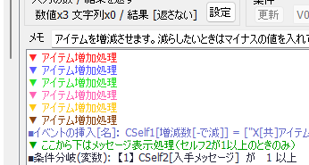
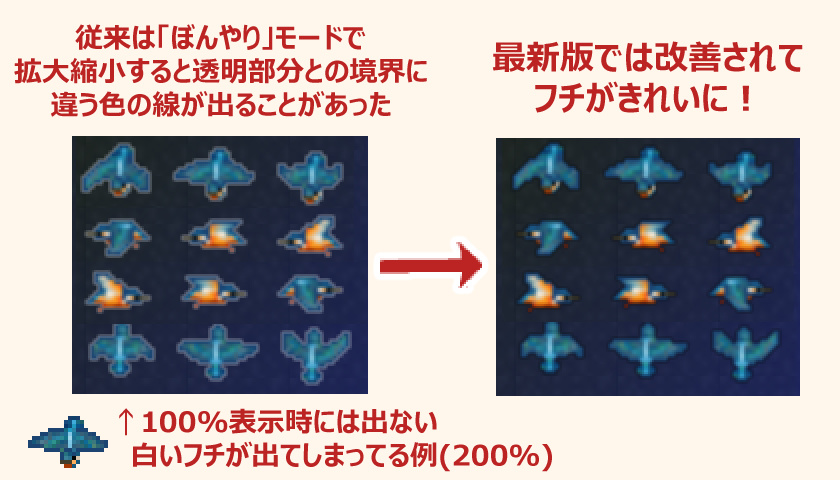

|
|||
|
|
| Ver3.50(2025/01/18)～Ver3.638(2025/07/31) 【最新の修正にジャンプ】 大規模アップデート！ ウディタ3.5は開発の仕方や作れるものの限界、開発のしやすさも変わる大規模修正です！ XY配列や正規表現、ゲーム中のイベント生成や自動移動（経路探索）などの新要素もたくさんありますので、 使えそうなものからお試しください。 ※このページでは↓ほど新しい更新履歴となります。 【全体の新機能】 ◆ゲーム基本設定 ◆コマンド関連 ◆システム変数・特殊文字 ◆ファイル関連 【エディター内のみの新機能】 ◆ウィンドウ関連 ◆データのテキスト出力関連 ◆便利機能の追加 【ゲーム調整】 ◆イベント挙動 ◆コマンド関連 ◆特殊文字・システム変数挙動 ◆ファンクションキー・システム挙動 【エディター調整】 ◆メイン画面 ◆コマンド関連 ◆ウィンドウ関連 ◆ファイル・パフォーマンス関連 【基本システム修正】 ◆基本システムの修正 【3.50後の追加修正】(最後尾に追記されていきます) 【最新の修正にジャンプ】 |
||||
| 【全体の新機能(ゲーム・エディター両方)】 ↑トップへ ◆ゲーム基本設定 ↑トップへ ●【ゲーム基本設定・ピクチャの挙動/新機能】 「ピクチャ挙動Ver2[ver3.5以降]」が新たに設定可能になりました。 「ピクチャ挙動Ver1[旧仕様]」を選ぶとVer3.39以前の挙動に戻せます。 「レイヤー挙動」と「【表示】コマンド指定の挙動」に 以下の差があります。基本は「Ver2挙動」で問題ありません。 - ピクチャ挙動Ver2[ver3.5以降] Ver1挙動より自由度が高く、挙動に統一感があります。 ・レイヤー挙動：ピクチャ番号に応じた表示レイヤーが以下のようになります。 「-1～-99999なら『フォグの下 ・ ★マップチップの上』に表示」 「-100000～-199999なら『★マップチップより下・キャラや▲マップチップの上』に表示」 「-200000～-299999なら『キャラや▲マップチップより下 ・ マップの上』に表示」 「-300000～-399999なら『マップより下 ・ 遠景の上』に表示」 「-400000以下なら『遠景の下』に表示」 ・【表示】コマンド時の挙動が理解しやすく： すでに同じIDでピクチャが表示されている場合、 処理途中でも「座標」や「不透明度」はその瞬間のパラメータを引き継ぎます。 つまり常に【移動】コマンドと同等の処理が行われます。 ・【ファイル指定時】の特殊文字変換の挙動が安定： 「ファイル直接指定」時、代入特殊文字(\s[0]等)の変換がより安定して行われます。 （Ver1ではファイル名の先頭に「<」があると正常に変換できません） ・【システム変数】Sys1～6、Sys26～27のメッセージや選択肢関連の初期値の挙動が、 より画面サイズに適したものになります。 ・【改行の間隔がVer1の2倍になる場合があります】 タイルサイズ16の場合、「ゲーム基本設定」にある「文章表示」の「改行の間隔」による行間が 「ピクチャ挙動Ver1」の「2倍」に変わるので注意して下さい。 - ピクチャ挙動Ver1[旧挙動] 旧挙動に合わせて作っていた人向けです。 ・レイヤー挙動：ピクチャ番号に応じた表示レイヤーが以下のようになります。 「-1～-99999の場合は『キャラの下 ・ マップの上』に表示」 「-100000以下の場合は『マップの下 ・ 遠景の上』に表示」 ・【表示】コマンド時の挙動： すでに同IDでピクチャが表示されているとき、「処理時間が残っている」状態で 「異なる画像で【表示】」または「文字列ピクチャの【表示】」をした場合だけ 『座標』『不透明度』などが「直前のピクチャ指定時点の値の状態に戻ったり」、 「新しい場所に瞬間表示される」場合があります。 ・【システム変数】 Sys1～6、Sys26～27のメッセージウィンドウ、選択肢ウィンドウ、 ポーズカーソルの「座標の初期値」や、システム変数「-1」のときの値が、 画面サイズや画面倍率などを考慮していない昔の値のままになります。 ・【改行の間隔】「ゲーム基本設定」にある「文章表示」の「改行の間隔」が、 タイルサイズ16だと入力値の「半分」になります。 → これ自体はバグでしたが、過去の作品は全てこれに合わせて作られているので、 ピクチャ挙動のバージョンで切り替えられる形にしました。 ●【ゲーム基本設定Pro/新機能(プロ版のみ)】プロ版に限り、マップレイヤーが 最大「5」レイヤーまで拡張できるようになりました。 「ゲーム基本設定Pro」に「[Pro]マップレイヤーの最大レイヤー数」の項目が 追加されており、通常の「レイヤー3[通常]」のほかに 「レイヤー4 / 描画負荷+」「レイヤー5 / 描画負荷++」が選択可能です。 → レイヤー数を減らすと、見えなくしたレイヤーは編集画面に表示されなくなります。 （内部的には保存されています） → 無料版のGame.exeで実行するとレイヤー3までしか表示されなくなります。 ◆コマンド関連 ↑トップへ ●【コメント文/新機能】コメントの色機能が完成版になりました。 今後はプルダウンメニューで色を選べるようになります。 → 色を選ぶと(従来の仕様通りに)内部的に[RED]や[BLUE]の文字列が入りますが、 コマンド一覧内や修正時にはその文字が表示されなくなります。  ●【変数操作/新機能】代入演算子として「√[x1000]」を追加。 ルートの値を1000倍の値として返します。 → √[x1000]で右辺が「5」なら、左辺に「2236」が代入されます。 ●【変数操作/新機能】右辺の演算子として「ビット和」「排他ビット」「ビットシフト<<」を追加。 右辺のビット演算が可能です。すでにビット演算に詳しい人向けです。 → ビット和は「論理和」、排他ビットは「排他的論理和（XOR)」の意味です。 →「ビットシフト<<」は数値のビットを左にシフトし、 マイナスの値を入れると右シフトになります → 「X = A ビット和 B」「X = A 排他ビット B」「X = A ビットシフト<< B」 としてチェックなしでコマンド入力すると、 コモンイベント内で高速で処理されます。 ●【DB操作/新機能】「XY配列」機能が搭載されました。 数値のみ格納できる二次元配列で、DBの「タイプ、データ番号、項目番号」と同じく、 「配列番号/名前」「X列(データ番号)」「Y列(項目番号)」の3パラメータで指定します。 「配列番号/名前」は無制限に使え、「X列・Y列」は0～9999の範囲で指定可能です。 → XY配列の「代入・読込」処理時のみ、「Y列の値が1万」を超えるごとに 「X列が+1」された値にアクセスします。 もしY列が1万で足りないときは複数のX列をまたいで使用してください。 →「配列番号/名前」は「数値」か「名前」で呼び出しできます。 「数値」呼び出しで指定する方が処理は高速になります。 「名前」呼び出しは多少処理速度を犠牲にしますが、可読性が高くなります。 ※この2つは【別の配列】に保存されているので、「名前」モードで「数字」を入れても 「数値」呼び出し配列は呼び出せません。 →「XY配列」の値は、[数値]呼び出しの配列なら代入特殊文字「\xy[1:2:3]」で、 [名前]呼び出しの配列なら「\xyN[TEST:1:2]」で表示可能です。 → DBと同じく、「挿入・抜き取り・コピー・ソート」などの各種データ操作や 「CSVファイル入出力」も可能です。 各種データ操作では「Y列のみ」に対して処理を行うオプションも使用できます。 → コモンイベント内では「配列番号/名前」さえ固定なら常に処理高速化が行われます。 可変DBを2次元配列のように「CDB[TEST:Cself1:Cself2]」と変数2つを使う指定で アクセスする場合に比べ、「XY[TEST:Cself1:Cself2]」は5倍以上の速度で動作します。 （ただし「CDB[TEST:Cself1:キャラ名]」のように「真ん中だけ変数指定」した場合は、 DBの方がさらにその3倍近く高速です。DBは「データ別アクセス」が強いのです） → エディター内では、使用したXY配列の名前が最新500個まで記憶されます。 (Editor.exeの場所にある「Editor_XY_array_Name.ini」に名前が保存されています) ●【DB操作/新機能】「データソート」機能が搭載されました。 「昇順か降順か」で「指定した項目」の値の大小に応じて 「指定したデータの範囲（例えばデータ2～5までなど）」を並び変えできます。 →「文字列」の比較も可能で、先頭文字（同じなら次の文字）で並び変えされます。 厳密にはUTF-8のコード値順に並び変えられるそうです。 ●【文字列操作/新機能】「から正規表現で置換」コマンドを追加。 正規表現で置換対象を指定し、変換できます。 「正規表現」についてはご自身で調べてみてください。 → 正規表現内では、ウディタの代入特殊文字は <<\s[1]>>のように<<と>>で挟んで記述した場合のみ機能します。 →【例】S1に「人数400人」が格納されているとします。 文字列操作：S1 =<正規表現で置換> "(\d{1,4})" → "$1ですよ$1" と指定すると、S1には「人数400ですよ400人」という数値が返されます。 ※元の文字列「人数400人」に対し、(\d{1,4})で「400」をとらえ、 その部分を「400ですよ400」に置換しています。 (\d:半角数字、{1,4}:直前の文字(ここでは\d)の1～4回の繰り返し、 $1:1つめの()内で囲んだ内容を再現） ●【文字列操作/新機能】「から正規表現で()内を抽出」コマンドを追加。 指定された正規表現で()内の文字列だけ抽出し、改行区切りで返します。 → 正規表現内では、ウディタの代入特殊文字は <<\s[1]>>のように<<と>>で挟んで記述した場合のみ機能します。 →【例1】S1に「人数400人」が格納されているとします。 文字列操作：S1 =<正規表現で()内抽出> "人数(\d{1,4})人" と指定すると、(\d{1,4})部分に該当する「400」という数値だけS1に返されます。 (\d:半角数字 {1,4}:直前の文字(ここでは\d)の1～4回の繰り返し） →【例2】S1に「人数400人500人」が格納されている場合、上と同じく 文字列操作：S1 =<正規表現で()内抽出> "人数(\d{1,4})人" と指定すると、S1には「400(改行)500」が格納されます。 （元文字列内で該当する場所が複数あった場合はそれぞれ抽出されます） ●【文字列操作/新機能】「隠しコード実行(<<から始まる)」コマンドを追加。 これまで「に↓のﾌｧｲﾙ内容読込」コマンドで行っていた隠しコードの 実行用コマンドを明示的に分離しました。 → 以前の通り、「に↓のﾌｧｲﾙ内容読込」でも隠しコードは実行可能です。 ●【文字列操作/新機能】「隠しコード実行」用のコマンドを複数追加。 空イベント作成や経路探索機能は、作れるゲームの幅を広げられるでしょう。 - 空イベント作成 <<MAKE_EVENT_X=??/Y=??>>(画像ファイル)
- 空イベントの削除 <<DELETE_EVENT_ID>>(イベントID) 指定した(イベントID)のイベントを削除します。 ただし対象は実質的に「空イベント」である必要があります。 （「ページ1のみ」「イベントコマンドが空」「決定キーか接触起動」の3条件を満たす場合のみ） - 経路を探索する <<FIND_PATH_DIR??_SX=??/SY=??/EX=??/EY=??>> 開始座標からゴール座標までの経路を探索し、文字列データとして返します。 経路は「24664882/END」のようにテンキーに対応した「向き」の数値列で返されます。 コードの「??」部分には以下を指定します。 DIR= DIR8（8方向探索）かDIR4（4方向探索）を指定します。 SX、SY= 開始X、Y座標を指定します。 EX、EY= 終了X、Y座標を指定します。 他のオプションは以下の通りです /POS:返される経路文字列を「座標」式にします。 「2,4/2,5/3,5/4,5/END」といった文字列が返されます。 /TIME:ミリ秒の処理時間(TIME=)や処理数(EXE=)を「経路情報」の次の行に記載します。 1回の処理数は「2万」が限界なので、探索距離の限界を知るのに使えるでしょう。 TIMEは0～2(ミリ秒)を返すことが多いです。 ※1フレームは16.6ミリ秒なので長距離の経路探索を使いすぎると処理落ちします。 /STEP: 最初の行に「24(=STEP)」のように移動予定の歩数情報が追加されます。 「経路情報」は次の行に記載されています。 先に移動予定の歩数を知っておきたい場合に。 /LEN=?: ?には表示したい歩数の数値が入ります、?歩分の経路情報だけを返すようになります。 長距離の経路データを文字列として返すと そのたびに文字列操作の処理に負荷がかかるため、 最小限の情報だけ欲しい場合にこれを指定してください。 （経路探索自体は毎回フルで行われている点に注意して下さい） /EXE=?: ?には処理数の数値が入ります。経路探索にかける処理回数を指定します。 初期値は5000で、100～200マスくらいは探索可能です。 探索できない場合は数値を10000～20000などに増やしてみてください。 /MOVE_EV=?: 「実行時点の各イベントの当たり判定」も考慮した経路を算出します。 「?」には「動かしたいイベント」のIDを指定することで、 それ以外のイベントの当たり判定が考慮されます。 (「?」が「-1」なら実行されたMapEvのID、「-2」なら主人公 になります） イベントの当たり判定は、移動中や半マスずれた場所にいるときは 大きめに計算されます。 /XY=?: ?にはXY配列の「番号」を指定します(「名前」指定はできません）。 経路データをXY配列に出力できます。このとき、 「X列」は「歩数」の軸で、各X列内には 「[Y=0]に経路X値」 「[Y=1]に経路Y値」の 値が格納されます。たとえばXY配列のX列4、Y列1には、 「4」歩目の「1=次の向きのY軸差分(/POSありならY座標)」の値が入ります。 絶対座標の方が使いやすいと思うので、通常は「/POS」と一緒に使うのがおすすめです。 オプション見本: <<FIND_PATH_DIR4_SX=??/SY=??/EX=??/EY=??/POS/TIME/EXE=10000/MOVE_EV=-2/XY=??>> ※この経路探索は1×1マス以上の道のみ認識します。半マスの隙間は認識しません。 ※この経路探索は高速な代わりに、確実に最短経路を算出するものではありません。 大きく遠回りするルートだと、たとえそれが最短でも採用されない場合があります。 ※この経路探索は「マップの通行設定のみ」を見て経路を算出します。 『イベントの当たり判定は考慮されません』。 そのため、マップイベントで道を塞いでいる場合でも その経路を通ろうとしてしまう場合がありますのでご注意ください。 （そのマップイベントの足下に一時的に透明の通行不能タイルを設置するなどして対処が可能です） 経路探索の使用例 - イベント名を変更 <<SET_EVENT_NAME_ID=??>>(新イベント名) イベントID「??」のイベントの名前を(新イベント名)に変更します。 空イベントを作成した後、イベント名をセットしたい場合にご利用ください。 - コモンイベント番号から名前を得る <<GET_COMMONEVENT_NAME_FROM_ID>>(コモンイベントID) 指定した(コモンイベントID)の数値に対応するコモンイベント名を取得します。 （コモンイベントID）が-1以下だったり範囲外だと<<NotFound>>が返されます。 - ゲーム名の「メイン」を得る <<GET_TITLE>> これだけ入れると返り値としてゲーム名の「メイン」部分を得られます。 - ゲーム名の「追記」を得る <<GET_TITLE_PLUS>> これだけ入れると返り値としてゲーム名の「追記」部分を得られます。 - 各DBのタイプAの項目Bが「文字列」項目なら0、「数値」項目なら1を返す <<GET_ISNUMBER_CDB_ITEM/TYPE=?/ITEM=?>> : 可変DB <<GET_ISNUMBER_UDB_ITEM/TYPE=?/ITEM=?>> : ユーザDB <<GET_ISNUMBER_SDB_ITEM/TYPE=?/ITEM=?>> : システムDB たとえば「<<GET_ISNUMBER_CDB_ITEM/TYPE=4/ITEM=2>>」と指定すると、 可変DBのタイプ4、項目2が数値項目なら「1」、文字列項目なら「0」、そもそも存在しないタイプや項目なら「-1」を返します。 ※タイプ番号、項目番号を「名前」から取得したい場合は「DB操作」コマンドで得ることが可能です。 - 文字列のバイト数を得る <<GET_STRING_BYTE_COUNT>>(文字列) (Ver3.575より) (文字列)部分のバイト数を文字列変数に返します。 → 数値に格納する場合は「変数操作」で 「Cself10 = S0」 (※S0 = 3000000) などと指定すると文字列を数値に変換できます。 → これは主に、後述の文字列のカット「<<CUT_STRING_?_?>>」と 併用して使うことを想定して実装したものです。 「前回読み込んだ文字列のバイト数をあらかじめ得ておいて、 追加部分だけ切り取る」といった処理が可能になります。 - 指定バイトで文字列をカット <<CUT_STRING_??_??>>(文字列) (文字列)の??から??バイト目までを切り取ります。 「<<CUT_STRING_5_8>>ABCDEGGHIJK」なら「GGH」が返され、 「<<CUT_STRING_0_2>>ABCDEGGHIJK」なら「AB」が返されます(1文字目の前は「0」です）。 → ただしそのバイト値がUTF-8文字(ひらがななら3バイト）の途中になっていたなら、 その「直後」の文字の区切りまで返します。 - 指定行でカット <<CUT_LINE_STRING_??_??>>(文字列) (文字列)の??行目の始まりから??行目の最後まで切り取ります。「0」が1行目です。 「<<CUT_LINE_STRING_0_0>>ABC(改行)DEF」ならABCが返されます。 「<<CUT_LINE_STRING_1_2>>ABC(改行)DEF(改行)GHI」なら「DEF(改行)GHI」が返されます。 - 指定幅で自動改行する <<AUTO_RETURN_STRING_WIDTH_COUNT=??>>(文字列) 指定幅??を超えないように(文字列)を自動改行します。 幅は半角文字1、全角文字2としてカウントされます。 - 画像のX、Y座標の不透明度、RGB値を得る <<GET_IMAGE_ARGB_X=?/Y=?>>(ﾌｧｲﾙ名) (ファイル名)[例:CharaChip/aaa.png]で指定した画像の、X=?、Y=?座標のピクセルの 不透明度、RGB値を「不透明度(改行)R値(改行)G値(改行)B値」の文字列で得られます。 不透明度やRGB値はそれぞれ0～255の値を取ります。 → 1枚絵上の「何か画像がある場所」を1マスごとに「不透明度」を取得して 当たり判定に使ったり、「立ち絵のなにもない場所」を調べたりするのに使えます。 - 画像の横、縦サイズを得る <<GET_IMAGE_SIZE>>(ファイル名) (ファイル名)[例:CharaChip/aaa.png]で指定した画像のサイズを、 「横サイズ(改行)縦サイズ」という文字列として得られます。 - 4つのXY配列に画像を読み込む(数値呼び出しXY配列) <<LOAD_IMAGE_TO_XY/A=?/R=?/G=?/B=?>>(ファイル名) (ファイル名)[例:CharaChip/aaa.png]の画像をXY配列として読み込みます。 ?、??には数値を指定しますが、何も入れなければ読み込まれません。 上の例では、アルファ値(不透明度)、R値、G値、B値について A=?/R=?/G=?/B=?で指定した「数値」番のXY配列に保存されます(0-255の値)。 - 4つのXY配列に画像を読み込む(名前呼び出しXY配列) <<LOAD_IMAGE_TO_XYN/A=???/R=???/G=???/B=???>>(ファイル名) 「<<LOAD_IMAGE_TO_XY/A=?/R=?/G=?/B=?>>(ファイル名)」とほぼ同じですが 各???で指定した「名前(文字列)」のXY配列に画像情報が保存されます。 - 4つのXY配列(ARGB)から画像出力(数値呼び出しXY配列) <<SAVE_PNG_FROM_XY/A=?/R=?/G=?/B=?/XSIZE=??/YSIZE=??>>(ファイル名) (ファイル名)[例:CharaChip/aaa.png]に、4つのXY配列「?」番に記述された A、R、G、B値に従って横幅XSIZE=??ピクセル、縦幅YSIZE=??ピクセルの PNG画像を出力します（?、??には数値を指定します）。 ARGBのXY配列内には、0-255の範囲で値を格納してください。 ※「暗号化されたフォルダ」内には出力できないので注意してください。 もしセーブフォルダ内に出力する場合は(ファイル名)を 「../Save/aa.png」のように指定してください。 - 4つのXY配列(ARGB)から画像出力(名前呼び出しXY配列) <<SAVE_PNG_FROM_XYN/A=???/R=???/G=???/B=???/XSIZE=??/YSIZE=??>>(ファイル名) 「<<SAVE_PNG_FROM_XY/A=?/R=?/G=?/B=?/XSIZE=??/YSIZE=??>>(ファイル名)」と ほぼ同じですが、各???で指定した「名前(文字列)」のXY配列に画像情報が保存されます。 - .wolfx暗号化ファイルの読込チェック <<LOAD_CHECK_WOLFX_FILE>>(ファイル名) .wolfx暗号化した(ファイル名)を「Data/～」として指定すると 今の状態でその.wolfxファイルが正常に読み込みできるか判定できます。 + キーが正しく、正常に読み込める場合は「1」が返されます。 + キーが正しくない場合、「<<Failed>>」が返されます。 + .wolfxファイルがなかった場合「<<NotFound>>」が返されます。 + 「.wolfx」を付けずにファイル名を指定しても自動で.wolfxを付けて判定されます。 ●【文字列操作/新機能】「に↓から指定文字まで切出(+↓文ｶｯﾄ)」コマンドを追加。 指定文字までを切り出した値を左辺に代入し、「指定文字」を除いた残りを右辺に代入します。 → 従来は「から指定文字まで切り出し」と「の指定文字以降を切り出し」の 2コマンドがありましたが、「に↓から指定文字まで切り出し(+↓文ｶｯﾄ)」は この2コマンドを同じ文字列に対して1回で行える処理となります。 → 処理の最適化も行われており、上の2コマンドを実行するより高速です。 ●【変数操作+/新機能】取得できる情報を多数追加しました。
●【条件(文字列)/新機能】比較コマンドとして「を含まない」「が最後にある」 「の正規表現と一致」の3つを追加。 -「を含まない」：比較する文字列を「含まない」場合に条件を満たします。 -「が最後にある」：比較する文字列が「左辺の最後にある」場合だけ条件を満たします。 -「の正規表現と一致」：比較する文字列を「正規表現」として条件判定します。 「正規表現」は幅広い文字列を対象にできる記法です。 正規表現内でのウディタの代入特殊文字は <<\s[1]>>のように<<と>>で挟んで記述した場合のみ機能します。 ●【ピクチャ/新機能】4つのXY配列を画像としてピクチャ表示する機能を実装。 「ファイル読み込み」で 「<XY_IMAGE/A=?/R=?/G=?/B=?/XSIZE=??/YSIZE=??>」または 「<XY_IMAGE/A=?/R=?/G=?/B=?>」とファイル名に指定すると、 各XY配列「?」番のアルファ値(A)とRGB値から作られた画像を表示します。 XSIZE=??、YSIZE=??の「??」には表示する画像のサイズを指定します。 → なお、上はXY配列を「番号」呼出する場合のコマンドです。 → もし配列を「名前」呼び出しで指定したい場合は 「<XYN_IMAGE/A=?/R=?/G=?/B=?/XSIZE=??/YSIZE=??>」または 「<XYN_IMAGE/A=?/R=?/G=?/B=?>」のように「XYN」から始まるように書いてください。 → 「A=/」のように[?]部分に何も入れなかった場合、以下の配列がセットされます。 ●A=全て255で塗りつぶされた配列。 ●R・G・B=全て0で塗りつぶされた配列。 → ロード時には【ロード時点の各XY配列の内容】に従って ピクチャが再構成されます。 XY配列を変更していなければロード時も同じものが表示されます。 ●【ピクチャ/新機能】画像の指定時、「<MAP_SCREENSHOT>」と入力すると その時点の「マップ画面のみ」をピクチャとして表示することができます。 → すでに搭載されている「<SCREENSHOT>」（全画面をピクチャ取り込み）と違い、 <MAP_SCREENSHOT>はピクチャID「0」以上のピクチャの干渉を受けないので 様々な使い方が可能です。 たとえば画面を上下反転にさせたままマップを移動させることもできます。 → マップを使わない人でも、ピクチャ「-1」以下のピクチャはマップ画面に 含まれるため、裏で絵を描いて<MAP_SCREENSHOT>で保持しておくことが可能です。 ●【エフェクト/新機能】「画面のスクロール」に「横スクロールロック」と 「縦スクロールロック」を追加。縦横個別にロック可能になります。 → 旧「スクロールをロック」は「縦横スクロールロック」に名前変更されました。 ●【エフェクト/新機能】4つのXY配列を画像としてキャラクター画像に設定できる機能を追加。 「キャラ」のエフェクトの「キャラチップ変更」「重ねキャラチップ変更」にて、 キャラクター画像のファイル名にXY配列による画像が指定できます。 ・「番号」呼び出しのXY配列なら 「<XY_IMAGE/A=?/R=?/G=?/B=?/XSIZE=??/YSIZE=??>」または 「<XY_IMAGE/A=?/R=?/G=?/B=?>」 ・「名前」呼び出しの配列なら 「<XYN_IMAGE/A=?/R=?/G=?/B=?/XSIZE=??/YSIZE=??>」または 「<XYN_IMAGE/A=?/R=?/G=?/B=?>」 と指定すると、各XY配列「?」のアルファ値(A)とRGB値から作られた画像を イベントや主人公に設定できます。 → この名前をセットした場合、ロード時には【ロード時点の各XY配列の内容】に従って 画像が再構成されますので注意してください。 XY配列を変更していなければロード時も同じものが表示されます。 ●【エフェクト/新機能】「キャラ」に「ピクチャをリンク」機能が搭載されました。 ピクチャに、「キャラクターの座標・拡大率」を連動させることができます。 また、表示優先度をキャラと同じレイヤーにすることもできます。 → 自動でキャラクターを追随するので、たとえば「影」や「体の前後に出るオーラ」、 「頭の上に出るメッセージやマーク」、「キャラの下に表示されるゲージ」などが 非常に作りやすくなります。 → 表示優先度を完全にキャラに合わせることもできるので、 「リンクさせた[ピクチャ]が他のキャラクターや壁、▲チップに隠れるようになる」 という実装が可能です。 キャラクターに対する様々なピクチャ演出が、自然かつ簡単に実現可能になります。 設定可能な内容は以下の通りです。 ・ピクチャID：リンクしたいピクチャを設定します。 ・リンクさせるレイヤー - をキャラの表に：キャラのすぐ表側にピクチャが表示されます （キャラ本体と同じく、リンクさせたピクチャが他キャラや▲チップで隠れます） - をキャラの裏に：キャラのすぐ裏側にピクチャが表示されます。 - を影レイヤーに：「全てのキャラの足下」のレイヤー、かつ 「地面のY座標(キャラの「高さ」を変更しても変化しません）」に ピクチャが表示されます。 - ピクチャのまま：ピクチャのレイヤーのまま、キャラの座標や拡大率のみ反映し続けます。 - リンク解除：そのキャラから指定ピクチャ1枚のリンクを解除します。 - 全リンク解除：そのキャラから全てのリンクされたピクチャを解除します。 ・連動させるパラメータ - XY拡大連動：（マップズームを考慮した）画面X・Y座標をピクチャに「加算」し、 マップズームによる拡大率の変化をピクチャにも反映させます。 - XYのみ連動：（マップズームを考慮した）画面X・Y座標をピクチャに「加算」します。 マップズームの拡大率はピクチャに反映されません。 ※テストプレイ中にF11でマップを読み込み直すと、マップイベントに対する ピクチャリンクも全てはずれますのでご了承下さい。 （テスト中のF11は、マップイベントへの全てのエフェクトが解除されます） ●【エフェクト/新機能】「キャラ」の「重ねキャラチップ変更」機能が 大幅に拡張されました。 -【レイヤー無制限・レイヤー番号やサイズが自由に】 従来の「5枚制限」と「画像サイズ制限」がなくなり、 「レイヤー指定もマイナスの値を指定できる」ようになりました。 マイナスのレイヤーを指定すると「本体画像の裏側」に表示されます。 → なお、このコマンドでレイヤー「0」を指定すると本体画像が変更されます。 -【レイヤーごとにエフェクトをかけられる】 ファイル名の先頭に<<>>で囲われた特殊なコードを入れると、 1レイヤーだけ「座標補正」したり、描画モードを「加算」に変えたり、 「色相」や「不透明度」を変更できます。 入力例： <<X+=5/Y+=-1/OPA=128/MODE=1/HUE=90/SAT=100/BLI=100/HALF>>CharaChip/test.png ・X+=?：X座標の表示位置を?ピクセルだけ加算します。マイナス値も指定可能です。 ・Y+=?：Y座標の表示位置を?ピクセルだけ加算します。マイナス値も指定可能です。 ・OPA=?：レイヤーの不透明度を0～255で補正します。 ・MODE=?：レイヤーを、?=1なら「加算」、2なら「減算」、3なら「乗算」にします。 ・HUE=?:レイヤーの色相を0～360で補正します。0なら変化なしです。 ・SAT=?：レイヤーの彩度を-255～255で補正します。0なら変化なしです。 ・BLI=?：レイヤーの明るさを-255～255で補正します。0なら変化なしです。 -255だと真っ黒、255だと真っ白になります。 ・BLR=?：レイヤーを1～16の範囲でぼかします。ただし元の画像サイズの範囲以上には広がりません。 元画像をぼかすので、キャラチップの隣のパターンにも ぼかし部分が漏れる可能性があります。 ・HALF：レイヤーの画像のサイズを1/2にします ・QUAT：レイヤーの画像のサイズを1/4にします。HALFより優先されます。 ●【エフェクト/新機能】「ピクチャ」の大部分のエフェクトに「ディレイ」指定可能に。 → ディレイをかけた「エフェクト」コマンドは、 「ピクチャ」コマンドの「ディレイリセット」を行うと解除されます。 （内部的にはピクチャのディレイリセットと共通した処理で動作しています） ●【サウンド/新機能】BGM・BGS・SEの「通常再生」において「パン」を搭載しました。 音の出ている方向を左右に偏らせる機能です。 -255にすると左側寄り、255にすると右側寄りで聞こえます。 ●【サウンド/新機能】BGS使用時、「BGSチャンネル」が指定可能に。 同時に複数のBGSを再生することが可能になります。 → ただし「システムDBから直接選択」や「変数で指定」の場合、BGMと全BGS内で 「同じファイル名」の音声を「異なるタイミング」で再生させることはできません。 → 「ファイル指定」した場合のみ、同じファイルでも時間をずらして再生可能です。 → 従来からある Sys97「再生中BGS音量(Ch=Sys99)[%]」などのBGSのパラメータは、 Sys99「対象とするBGSﾁｬﾝﾈﾙ[Ch]」の値を変更することで 「対象とするBGSのチャンネル」を変えることができます。 ●【キー入力/新機能】「基本キー」「キーボード」「パッド」「マウスのクリック」時、 「通常の押し状態を取得」「押されるまで【待つ】」 「新押し時のみ取得」「離した時のみ取得」 「押し続けフレーム数」の5択で取得できるように修正。 → 「キーが押されるまで待つ」は「押されるまで【待つ】」のプルダウンへ移行し、 従来のチェックボックスは撤廃されました。 -「通常の押し状態を取得」:キーが押されている間、値を返し続けます。 -「押されるまで【待つ】」:従来の「キーが押されるまで待つ」と同じで、 当該キーが押されるまで処理が進まなくなります。 ※これ以外はキーが押されていなくても処理が進みます。 -「新押し時のみ取得」:新たにキーが押された1フレーム中だけ値を返します。 -「離した時のみ取得」:新たにキーが離された1フレーム中だけ値を返します。 -「押し続けフレーム数」:選択されたキーの押し続けているフレーム数を返します。 キーが複数選択されている場合は「押された時間が一番長いキー」の 押し続けフレーム値を返します。 ●【動作指定/新機能】移動コマンドに「自動移動」機能を追加。 指定座標まで経路探索を行って自動で移動させられます。 [単純(Ev無視)][スマート(小迂回)][大負荷]の3種があります。 - 自動移動･短[単純(Ev無視)]：最初に「マップ通行設定のみ(Evはないものとする)」で移動ルートを計算し、 以後はルート通り進みます。 進路上に他のイベントや主人公がいた場合は止まります。20マス程度の短距離向け。 → プレイヤーやイベントが道を塞いで止まってしまっても問題ない状況向け。 - 自動移動･短[スマート(小迂回)]：最初に大局的な進行ルートを「マップ通行設定」のみで取得し、 基本はその道に沿って移動しますが、もし他イベントや主人公が 経路を塞いでいた場合は少し迂回して移動します。20マス程度の短距離向け。 → それなりに賢く移動させたい場合はこれがおすすめです。負荷もほどほど。 ただし「イベントでゴールまでの通路が塞がれている」場合は 途中で止まってしまいます。 - 自動移動[大負荷]：大局的な進行ルートも「マップとイベント両方込み」の当たり判定で取得し、 通行できない場合や低頻度で大局的なルートを再取得し直します。 かなり遠くまでの経路も発見できますが負荷が高いです。 → イベントが完全に道を塞いでいて、非常に遠回りせねばならない状況でも 経路探索に成功する可能性があります。 ただし「ランダム移動するキャラがたまたま経路を塞いでいる」場合も それに敏感に反応して大局的な進行ルートを変えてしまったり、 「道がない」と判断して一時的に止まってしまったりする場合があります。 【自動移動を開始する条件】 ・「マップ自体が通行判定×」または「マップ的に到達不能」な場合は移動開始しません。 ・「マップ上は通行判定○」だがその上に「通行不能なイベント」がある場合は、 経路計算をして移動開始し、最後のイベントの手前で止まります。 ・「回り道しなければならない量」が一定量を超えると移動が行われない場合があります。 → ルート検索範囲は「移動先が遠い」ほど広くなるため、 「座標上は2マス先にあるが、100歩以上回り道しないとたどり着けない場所」 などには弱く、移動が行われないことが多いです。 ●【動作指定/新機能】「(指定XY)の座標にジャンプ」機能を追加 ●【動作指定/新機能】「▼マップウィンドウを開く」ボタンを追加。 動作指定設定中も出したままにしておけるマップ画面が開きます。 → そのマップ画面内でダブルクリックすると、その座標が 「動作指定ウィンドウ」側の「座標指定」欄に格納されます。 ●【場所移動/新機能】場所移動オプションに「移動後の向き」を指定できる機能を追加。 ●【プロ版機能/新機能】プロ版限定機能として「ゲームパッド振動」コマンドを追加。 ゲームパッドを一定時間、振動させられます。 「強度[0-1000]」と「時間[ms]」を設定します。 → 「強度0」で実行すると振動中のゲームパッドを停止させられます。 ◆システム変数・特殊文字 ↑トップへ ●【システム変数】「Sys93:再生中BGMパン」「Sys94:再生中BGSパン(Ch=Sys99)」を追加。 BGM・BGSの再生中にパンの値を変更、あるいは取得できます。 ●【システム変数】「Sys99:対象とするBGSﾁｬﾝﾈﾙ[Ch]」を追加。 情報を取得・変更したいBGSの「チャンネル」を指定できます。 「変数操作+」にも影響します。 ●【システム変数/新機能】 Sys114「[読]動作ﾊﾞｰｼﾞｮﾝ調整(x100)」を追加。 「ゲーム基本設定」で設定されている「Game.exe動作バージョン調整」値を返します。 （「最新版の挙動で動作」ならGame.exeのバージョン値を返します） ●【システム変数/新機能】「Sys140:ｳｨﾝﾄﾞｳ拡縮ﾓｰﾄﾞ[くっきり=0/なめらか=1]」を追加。[Ver3.555] 従来はウィンドウを拡大縮小した時の「くっきり」か「なめらか」状態は 「ゲーム基本設定」内の「ピクチャ拡大縮小時の描画方法」に依存していましたが、 このシステム変数を変えることで自由に切り替え可能になります → なお、デフォルト値として「ピクチャ拡大縮小時の描画方法」の設定が 使用されるので、従来作品に影響を与えることはありません。 ●【システム変数/新機能】Sys150「特殊文字変換を無効化[1=ON]」を追加。 「1」になっている間、文章の表示、文字列操作、条件(文字列)、 ピクチャやサウンドなどの様々なファイル読み書き時に、 \s[0]や\cself[1]、\f[12]などの特殊文字を変換せず そのままの文字列として保持します。 → なお、代入特殊文字が入れ子になっていた場合は、 「最大で100回」まで変換が行われます。 ●【システム文字列/新機能】 システム文字列「SysS26:キーボード入力中文字列」を追加。 (Ver3.575より) 「文字列操作」の「キーボード入力」中の文字列を読み取ったり、 キーボード入力中の文字列を変更することができます。 → なお、このSysS26に文字列を「代入」すると キーボード入力中のカーソルは「最後尾」に移動します。 ●【特殊文字/新機能】「\img(S)」特殊文字の裏技として「画像分割表示機能(DIV)」、 「部分切り出し表示機能(CUT)」、「アニメーションアイコン機能(ANIME)」を追加。 「\img[」の直後に<DIV/X3……>のようなコードを入れることで使用可能です。 使用見本は以下の通りです。 - 分割表示 \img[<DIV/X3/Y4/5>Pic/Test.jpg] 「Pic/Test.jpg」を横3、縦4パターンで分割し、パターン5を表示します。 パターン番号はピクチャと同じで、「1」から始まります。 - 部分切り出し \img[<CUT/X123-150/Y200-300>Pic/Test.jpg] 「Pic/Test.jpg」の X123～150、Y200～300pxの範囲だけ表示します。 X0-2なら0ピクセル位置から幅2ピクセル分だけ表示されます。 - アニメアイコン \img[<ANIME/X3/Y5/12>Pic/Test.jpg] 「Pic/Test.jpg」を横3、縦5パターンで分割し、12フレームごとにアニメーションします ●【特殊文字/新機能】文中で効果音を鳴らす「\se[(音声ファイル名)]」を追加。 → 「\se[<VOL=80/FREQ=90>SE/test.ogg]」という風に 「\se[」の直後に「<VOL=(音量)/FREQ=(周波数)>」を入力すると 音量と周波数を変更して再生できます。 ●【特殊文字/新機能】代入特殊文字として\xy[?:?:?]、\xyN[!:?:?]を追加。 ・\xy[?:?:?] : ?には数値で「配列番号・X列番号・Y列番号」を指定します。 「数値呼び出し」のXY配列の指定項目の数値を表示します。 ・\xyN[!:?:?] : !には文字列で「配列名」、?には数値で「X列番号・Y列番号」を指定。 「名前呼び出し」のXY配列の指定項目の数値を表示します。 → \xy[?:?]や\xyN[!:?]を指定すると「Y列1列分の数値」を[改行]区切りで表示します。 → \xy[?]や\xyN[!]で指定するとそのXY配列番号/名の内容を全て表示できます。 （「横がX列」「縦がY列」の並びになります。 \xy[?:1:2]の値は左から2番目、上から3番目に出ます） ●【特殊文字/新機能】ルビの色を変更できる\cR[?] （Sys12の色を?で指定）、 ルビのサイズを変更できる\fR[?]の特殊文字を追加。 → ルビ\r[A,B]の前に指定してください。ルビの「B」内では機能しません。 ◆ファイル関連 ↑トップへ ●【オートタイル/新機能】オートタイル画像ファイル名に「WaterChip_FRAME=4.png」という風に 「_FRAME=(フレーム数)」と入れると、そのオートタイルの アニメーションフレーム数を変更できる機能を追加。 → オートタイルのアニメフレームのデフォルト値は「20フレーム」です。 ●【フォント読込/新機能】Game.exeと同じフォルダあるいはDataフォルダ内にある 外部フォントを読み込んだとき、「デバッグウィンドウ」内に 「読み込んだフォントファイル名」と「指定可能なフォント名一覧」を表示する機能を追加 → フォントが読み込めているか分かりにくかったのが改善されます。 ●【ゲームデータ作成/新機能】「暗号化バージョンの選択」に 「Ver3.50暗号化」と「ChaCha20 v1.0(標準暗号)」を追加。 プロ版のみプロテクト使用時用限定の「プロテクト時Ver1.2暗号化」追加。 → 「ChaCha20」は(将来あるかもしれない)スマートフォン展開時にも 問題が起きにくい「標準的な暗号化アルゴリズム」による暗号化方式です。 この暗号化使用時はセーブデータ保存時の暗号化もChaCha20に変わります。 （アプリをリリースする際、暗号化の種類を答えなければならない場合に 「ChaCha20」なら「標準的な暗号化アルゴリズムのみ」であると申告できます） ●【プロ版 ファイル個別暗号化】 ファイルを個別に暗号化できるようになりました。 暗号化されたファイルには「.wolfx」の拡張子が追加されます。 EditorPro.exeの「ファイル」→「ファイル個別暗号化(.wolfx)[Pro版]」ウィンドウに ファイルをドロップすると、そのファイル単体の暗号化ができます。 フォントの暗号化も可能です。 この暗号化を行ったファイルはゲーム中、 - 「(「プロ版機能」でセットできる)復号キー」、 - 「指定した文字列変数」 - 「指定した数値変数」 の3つが特定の値と一致している場合だけ、ゲーム内から読み込むことが可能になります。 このうちのいくつか、あるいは全てを使わないようにすることも可能です。 （全てを使わない場合、直接Windows上から読めないだけでGamePro.exeからは 何もしなくても読めるファイルになります） -【ゲーム中にキーを設定して読み込ませます】 - ゲーム中、「プロ版機能」内の「暗号化ファイルの復号キーをセット」コマンドを使い、 「指定ファイル」に対して「復号キー」をセットできます。 -「指定した文字列変数/数値変数」のキーとしては、そのファイルが使われる 「シーン名」や「章番号」をセットしておくことを想定しています。 - 【.wolfxファイルがある場合、エディター内で元ファイルを指定しても ゲーム中は優先的に.wolfx暗号化ファイルが読み込まれます】 たとえば「CharaChip」フォルダ内に「Chicken.png」があり、 それを個別ファイル暗号化して「Chicken.png.wolfx」ファイルを作ったとします。 この場合、ゲーム内で「CharaChip/Chicken.png」ファイルを読み込もうとすると、 自動で「CharaChip/Chicken.png.wolfx」ファイルを読み込もうとします。 つまりテストプレイ中でも、「元ファイル」をファイル指定しておけば 「自動で暗号化ファイルの方を読み込んでくれる」のです。 - 【ゲームデータ作成時、.wolfxファイルが作られているときは 元ファイルはゲームデータにコピーされません】 「CharaChip」フォルダ内に「Chicken.png」と、それを暗号化した 「Chicken.png.wolfx」ファイルがあった場合、「ゲームデータ作成」を行うと、 「Chicken.png.wolfx」のみコピーされ、元の「Chicken.png」はコピーされません。 よって、ゲームデータを作成する際に、いちいち元ファイルを消す必要はありません。 -【裏技：フォルダごとまとめて復号キー指定】 「暗号化ファイルの復号キーをセット」で「フォルダ(/で終わること)」を指定した場合 そのフォルダに入っているファイル全てに同じ復号キーをセットしたことになります。 （個別にセットされている復号キーがあればそちらが優先されます） -【セットした復号キーはセーブデータに保存されています】 ゲーム中にセットした復号キーはセーブデータ内に保存されます。 ゲーム開始時にファイルやフォルダ別の復号キーを一通りセットしておけば、 以後、特に復号キーを意識せずにファイルを扱うことが可能です。 （ファイルを守る目的ではおすすめしませんが） -【暗号化可能なファイル形式】 txt、png、ogg、mps（マップファイル）など、ゲーム中にイベントコマンド経由で 読み込まれる多くのファイル形式を暗号化することができます。 「.dat」ファイル、「.project」ファイルなどは暗号化できません。 - ttf/ttc/otfのフォントファイルも暗号化できますが、キーは何も設定できません。 (起動時に自動で読み込まれるためです。「Game.exeと同じ場所」あるいは 「Dataフォルダ内」に暗号化した「ttf.wolfx」フォントなどを 置いておくと自動で読み込まれます) -【この暗号化の立ち位置について】 「ゲームデータ作成時」時のフォルダ暗号化は時間が経つと割と解析されがちなので、 少しでもセキュリティを上げたい人はこのファイル個別暗号化を 最後のセキュリティとしてご利用ください。 「オンライン上から『復号キー』をDLし、ファイル使用後は復号キーをすぐリセット」 といった使い方にすると、ファイルの守りは非常に強固になります。 ●【プロ版機能/新機能】「.wolx暗号化ﾌｧｲﾙの復号キーをセット」と 「.wolfx暗号化ﾌｧｲﾙの復号キーを全リセット」をプロ版機能に追加。 上記のファイル個別暗号化に使います。 |
||||
| 【エディター内のみの新機能】 ↑トップへ ◆ウィンドウ関連 ↑トップへ ●【エディターオプション/新機能】「タブウィンドウ」機能を追加しました。 オンにすると編集位置を各タブに保持することができ、切り替え可能になります。 → コモンイベント・データベース・マップイベントウィンドウの それぞれのタブのオンオフを設定できます。 ●【エディターオプション/新機能】ウィンドウサイズの倍率設定が追加されました。 「全体」「マップイベントウィンドウ」「コモンイベントウィンドウ」 「イベントコマンド挿入ウィンドウ」「データベースウィンドウ」、 のそれぞれが「12.5％」単位で設定可能です。 後者4つは「全体」の倍率と掛け合わされます。 ●【エディターオプション/新機能】アイコンサイズの倍率設定が追加されました。 → メインウィンドウ上部のアイコン一覧のサイズが変更できます。 「自動サイズ（全体サイズやWindowsの拡大率に依存）」「100%固定」「150%固定」「200%固定」、 から選択可能です。 ●【エディターオプション/新機能】フォントの設定機能が追加されました。 「Meiryo UI(太字/中/小)」「MS UIゴシック(太字/中/小)」の6つから選べます。 ●【マップ編集/新機能】マップのズーム倍率に「x2」を追加 ●【メインウィンドウ/新機能】「テスト」「絵」「文」の 各作業時間がタイトルバーに表示される機能を追加。 (Ver3.562より) → 「テスト」「絵」「文」に指定したアプリが前面になっているとき、 各項目に時間が加算されるようになります。 各項目のアプリEXE名は「Editor.ini」内の[EditTimeCount]項目内で 設定できます（一般的と思われるソフト名はすでに入力済です）。 例： EditTimeCount_TestPlay_Exe=Game.exe,GamePro.exe, (意味:Game.exeやGamePro.exeが前面にあると[テスト]時間に加算される) → もしこの追加部分だけ見えないようにしたい場合は、Editor.iniの [EditTimeCount]内の「EditTimeCount_View=1」を「=0」にしてください。 その場合は従来通り、各時間が () 側に加算されます →「他（EditTimeCount_Etc_EXE=）」という空き枠も用意されているので、 必要ならEditor.ini内でEXE名を設定してご利用ください。 ◆データのテキスト出力関連 ↑トップへ ゲームデータの基幹ファイルを「テキストファイル」として入出力する機能が付きました。 Gitなどのバージョン管理システムで編集差分を管理できるようになります。 ●【エディターオプション/新機能】「保存時の自動テキスト出力」機能を追加。 → オンにすると「ゲーム設定・DB・マップ(+Ev)・コモンEv・タイル設定」を保存した際、 「出力フォルダ」に「元と同じフォルダ構成」で「～.Auto.txt」として ファイルがテキスト出力されます。 → 「基本ﾃﾞｰﾀをTXT出力」「全マップをTXT出力」 「全TXT→基本ﾃﾞｰﾀのみ読込」「全TXT→全マップのみ読込」 の機能も用意されています。出力フォルダに対して、まとめてTXT入出力が可能です。 → 各TXTファイルを当該ウィンドウにドラッグ＆ドロップすることでも その内容を読み込ませられます。 （「ゲーム基本設定」画面にも「Game.dat.Auto.txt」をドラッグ可能です） ●【タイルセット設定/新機能】「ファイル入出力」に「複数データ保存(TXT)」を追加 ●【データベースウィンドウ/新機能】「ファイルの出力」に 「複数タイプ&全データ(TXT)」を追加 → テキスト形式として複数のタイプ設定とそのタイプの全データを出力できます。 ●【コモンイベントウィンドウ/新機能】「ファイル出力」に「複数保存(TXT)」を追加。 → テキストファイル形式でコモンイベントを出力できます。 ●【データベースウィンドウ/新機能】出力したCSVファイルにも「データ名」を保存、 ないし「データ名」を読み込みできる機能を追加。 → これまでは「データ名」が保存されなかったので、 CSVで出力→別の場所に保存、とすると データ名が再設定されなくて少し不便でした。 → 「データ名」を示すフラグは「<< !--DATANAME--!>>」です。 このフラグが先頭にある項目が「データ名」として扱われます。 （通常は各行末に追加されます） ●【ゲーム基本設定(Pro)/新機能】Game.dat(.PRO).Auto.txtファイルを ドラッグ&ドロップするとtxtの設定を反映させられる機能を追加 ●【エディターコマンドライン起動/新機能】Editor(Pro).exeに 「データのTXT入出力」を行うための新たなコマンドライン引数を追加。 [入力見本] Editor.exe -txtoutput -txt_folder Data_AutoTXT -target ALL -wait 【各コマンドの説明】 -txtinput : 「テキストファイルからゲームデータを復元する」モードで実行します。 -txtoutput : 「ゲームデータをテキストファイルに出力する」モードで実行します。 -txtinputと同時には使えません。 -txt_folder (フォルダ名): テキストの入出力先をEditor.exeからの相対フォルダで指定します。 未指定なら「Data_AutoTXT」が指定されます。 -target (ALL/BASIC/MAPのいずれか): 処理する対象を指定します。 未指定なら「ALL」となります。 ALL: 基本データと全マップファイル両方 BASIC: 基本データ(ゲーム基本設定･各DB･コモンイベント･タイル設定)のみ MAP: 全マップファイルのみ(.mpsファイル) -wait: 処理終了時にキー待ちを行います。-waitがなければ自動で画面が閉じます。 → [このコマンドライン処理、どういう場面で使うの？] 普段から「保存時の自動テキスト出力」をオンにすると保存時のレスポンスが 下がる場合があるため、Gitのバージョン管理を行う直前にだけ このコマンドライン処理を使って一度だけテキスト出力してからGitで操作する、 という利用法を想定しています。 ◆便利機能の追加 ↑トップへ ●【コマンド入力ウィンドウ内・DB画面・検索画面/新機能】 テキストボックス上の右クリックメニューが強化されました。 -「数値」ボックスの右クリックメニューに「[変数呼び出し値]の入力」を追加。 -「文字列」ボックスの右クリックメニューに「[代入]特殊文字を挿入」、 「[文字性質変化]特殊文字を挿入」、「[文字表示制御]特殊文字を挿入」機能を追加 → 右クリックから「変数呼び出し値」や「特殊文字」の見本を入力できます。 → もしこの項目が不要な場合は、エディターを閉じて「Editor.ini」を開き、 「UseExtendMenu=1」の行を「UseExtendMenu=0」に書き換えて保存してから エディターを起動しなおしてください。 ●【ファイル選択ウィンドウ/新機能】ファイル選択ウィンドウに「音声再生機能」を追加。 MIDI、OGG、MP3、WAVファイルがそのまま再生可能になります。 → MIDIはゲーム側と同じ音源で再生可能です。 → 総再生時間やフレーム数換算の値もすぐ確認可能です。 ●【ファイル読込ウィンドウ/新機能】読み込んだ画像のサイズが表示されるよう修正。 ●【マップイベント・コモンイベントウィンドウ/新機能】 イベントコマンド欄の 右クリックメニューに「コマンド内容を挿入ウィンドウに取込」コマンドを追加。 → 他ウィンドウを触れなくなる「コマンド編集」の方とは違い、 挿入ウィンドウにコマンドの内容を取り込んでそのまま編集を続けられます。 ●【マップイベント・コモンイベントウィンドウ/新機能】 イベントコマンド欄の 右クリックメニューに「折りたたみ/展開する」コマンドを追加。 文章選択肢・条件分岐・ループを折りたたみ表示することが可能になります。 → 折りたたみできるのは「文章選択肢・条件分岐・ループ」系コマンドのみです。 条件分岐の「各分岐」ごとの折りたたみも可能です。 → 折りたたまれるのは見た目だけで、実際の処理には影響しません。 → 折りたたまれたコマンドは、「ダブルクリック」すると展開されます。 ショートカットとして「E」キーで折りたたみ、展開が可能です。 ●【マップイベント・コモンイベントウィンドウ/新機能】 イベントコマンド欄の右クリックメニューに 「この範囲を0回ループに入れる」 「この回数ループを1回→0回にする (処理しない)」 「この回数ループを0回→1回に変える (処理する)」コマンドを追加。 → 状況に応じていずれか1つが表示されます。 「この回数ループを1回→0回にする (処理しない)」と 「この回数ループを0回→1回に変える (処理する)」の2つは 「1回」または「0回」の「回数付きループ」の上で右クリックしたときだけ表示されます。 それ以外では「この範囲を0回ループに入れる」が表示されます。 → この3つのショートカットは共通して「Q」キーです。 → 「0回ループ内」は処理されないため、自動で「コメント色」で表示されます。 ただし、その中に「ラベル地点」が入っていた場合、そこから処理が行われる可能性があるため、色が戻るようになっています。 ●【マップイベント・コモンイベントウィンドウ/新機能】 イベントコマンド欄の 右クリックメニューに「次の分岐へジャンプ」を追加。 条件分岐やループコマンド上で使用すると「次の分岐」に飛びます。 → ショートカットは「G」キーです。「Shift」を押しながらだと上方向に飛びます。 ●【マップ編集/新機能】イベントレイヤー時の右クリックメニューに「マップ操作」追加。 その中から『「このマップの基本設定」を開く』、『「新規マップ」を作成』、 『「マップ一覧ウィンドウ」を開く』が選べます。 → 新規マップ作成手順などが分かりにくかったので導線を増やしました。 【ゲーム側の調整】 ↑トップへ ◆コマンド関連 ↑トップへ ●【選択肢/不具合】F12でリセットしたとき、システムDBタイプ12で「文字色」を 変えていても「選択肢」名の文字列だけ新たな色が反映されないバグを修正 ●【変数操作/不具合】「実数計算」にチェックを入れて右辺の「～」を選んだ場合、 「0」しか返されなくなるバグを修正 ●【変数操作+/仕様変更】変数操作+の「その他」の 「ﾏｳｽ座標のEvID(小さいID優先,なければ-1)」と 「ﾏｳｽ座標の範囲拡張EvID(小さいID優先,なければ-1)」に マップズームも考慮するよう修正 →「ゲーム基本設定」の「Game.exe動作バージョン調整」で 「旧Ver3.390時点の挙動で動作」にすると以前の、 「マップズームを無視した座標」でマウス下のイベントが判定されます。 ●【DB操作/調整】DB操作で「数値変数」に「文字列」を数値に変換して格納できるように、 あるいは「文字列変数」に「数値」を文字列に変換して格納できるようになります。 → 従来はこの処理を行うとエラーが出るようになっていました。 「ゲーム基本設定」の「Game.exe動作バージョン調整」で 「旧Ver3.390時点の挙動で動作」に設定すると前の通りエラーが表示されます。 （エラー処理をゲーム内表現の一つとして使っている場合があるため） ●【DB操作/調整】エラーが起きたとき、コマンド側で指定された タイプ番号、データ番号、項目番号を表示するように修正 → タイプ:20 データ:30000 項目:4 のように表示されます。 ●【DB操作/仕様変更】「可変DB」の「データ」を「名前」で指定したとき、 そのタイプの「データIDの設定方法」が「最初の文字列データと同じ」に してあった場合は最新の「データ名」に合わせて処理するよう修正 [Ver3.566より] → 実はDBの「データ名」の「名前」呼び出しは 「ゲーム起動時点のデータ名」でしか判定されないようになっていました。 これを「ゲーム中の最新のデータ名」に対応できるようにしました。 → 今後はデータ名を「最初の文字列データと同じ」にしてあるタイプの場合、 常にその「1番目の文字列」の「名前」でデータを呼び出せるようになるため、 以下のようなことが簡単にできます！ ●(データ番号取得を使って)ある名前のキャラがリストにあるか一発検索できる！ ●名前から番号を取り出すといった処理も簡単に！ → ですがこれにより、ゲーム中に「キャラ名」が変わるといった演出がある場合、 「キャラ名」で「データ名」指定しているとエラーが起きるようになると いったケースが発生しうるのでご注意ください。 （たとえばデータ名「ヒーローさん」(最初の文字列)に対して DB操作していた場合、1つめの文字列「ヒーローさん」が 「スーパーヒーローさん」という名前に変わると、 これまでと同じDB操作が受け付けられなくなります） もしエラーが出る場合は↓の手順を行って対応してください。 → 「ゲーム基本設定」の「Game.exe動作バージョン調整」で 「旧Ver3.50時点の挙動で動作」に設定すると、 「データ名」として「起動時点のものだけ」が反映される従来の挙動に戻せます。 ●【キー入力/不具合】Zキーで「決定キーで起動」イベントが起動された直後に 「文字列操作」の「キーボード入力」をすると、 「キー入力受け付け」の「キーボード全キー」の値として 「144」が返され続けるバグを修正 ●【ピクチャ/不具合】ピクチャを「処理時間【0】」で「消去」したフレーム中にも 「変数操作+」でピクチャ情報が取得できてしまうバグを修正 →「ゲーム基本設定」の「Game.exe動作バージョン調整」で 「旧Ver3.390時点の挙動で動作」に設定すると、以前の 「消去してもそのフレーム中はピクチャ情報が残る」挙動になります ●【ピクチャ/不具合】「スクロールリンク」したピクチャが一定のループをすると 期待通りの位置に表示されなくなるバグ修正 → 前のバグありの挙動に戻したい場合は「Game.exe動作バージョン調整」を 「旧Ver3.390時点の挙動」以前に戻してください。 ●【エフェクト/不具合】「マップ」エフェクトの「[P]ﾏｯﾌﾟF」または[[P]全体F」を かけた状態で「暗転有り」で「場所移動」すると 移動先のマップEvとパーティ画像が一瞬表示されてしまうバグを修正 ●【エフェクト/不具合】「マスク」情報がセーブデータに保存されなかった問題を修正 ●【エフェクト/不具合】エフェクトの「キャラチップ変更」関連コマンド、ならびに 「マスク」のファイル読み込み時にエラー行数が表示されなかった問題を修正 ●【エフェクト/仕様変更】「キャラチップ変更」または 「重ねキャラチップ変更」のレイヤー「0」を空にして本体画像を消した場合、 「重ねレイヤーも含めて全ての画像レイヤー内容が消去される」よう修正 → 従来は本体画像を消して画面から見えなくなっても、 「内部的に重ねレイヤー部分だけ残ってしまってしまう」バグがありました。 この挙動を従来のままにしておきたい場合は、 「ゲーム基本設定」の「Game.exe動作バージョン調整」で 「旧Ver3.390時点の挙動で動作」に設定してください。 ●【サウンド/不具合】「メモリから非使用中音声を全解放」するとクラッシュする可能性が あったバグを修正 ●【サウンド/調整】BGMの途中再生時の音が一瞬止まる症状を減らすよう修正。 BGSの途中再生の挙動をBGMに合わせるよう修正。 ●【サウンド/仕様変更】すでに再生中のものと同じ音声ファイルを 「途中再生」の値を変えて再生すると、 切れ目なく再生位置を変更できるように修正。 → 従来は初期化がはさまっていたため、ノイズ等が入る場合がありました。 ●【動作指定/調整】「並列実行イベント」で「主人公」を「毎フレーム」動作指定して 「すり抜け」の「プレイヤー接触」イベントの上に乗ったとき、 必ずイベントが起きるように修正。 →「毎フレーム動作指定して触れると乗れるイベントが起きない」旧挙動に戻したい場合は 「Game.exe動作バージョン調整」を「旧Ver3.390時点の挙動」以前に戻してください。 ●【動作指定/仕様変更】「並列実行イベント」で「主人公」を動作指定させて （「すり抜け」でない）「プレイヤー接触」イベントにぶつかったときに 「プレイヤー接触」イベントが起きるように仕様変更。 →「動作指定でぶつかってもプレイヤー接触イベントが起きない」旧挙動に戻したい場合は、 「Game.exe動作バージョン調整」を「旧Ver3.390時点の挙動」以前に戻してください。 ●【動作指定/不具合】「EvID？のイベントに接近」と「～の座標に一歩接近」で 主人公に触れても「イベント接触」イベントが起きなかったバグ修正 → 旧挙動の「上記2コマンドで触れてもイベントが起きない」状態に戻したい場合は、 「Game.exe動作バージョン調整」を「旧Ver3.390時点の挙動」以前に戻してください。 ◆イベント挙動 ↑トップへ ●【自動実行イベント/調整】テスト時のみ、自動実行イベントで同じフレーム内に 10000回起動してたらエラーが出るように修正 ●【描画処理】キャラクターの描画順の計算処理を修正。 特に変化はないと思いますが、もし前verと比べて 正常に動作しなくなっていたらお知らせください。 ●【イベント起動/不具合】「予約」イベントと「決定キーで実行」イベントが 同時に起動した際、予約イベントが終わった後に勝手に 決定キーイベントが実行されてしまうバグを修正 → 旧挙動に戻したい場合は、「Game.exe動作バージョン調整」を 「旧Ver3.390時点の挙動」以前に戻してください。 ●【イベント起動/不具合】(0,0)座標に「イベントと接触」Evを配置すると 起動後やロード時に勝手に一度起動してしまうバグを修正 → 前のバグありの挙動に戻したい場合は「Game.exe動作バージョン調整」を 「旧Ver3.390時点の挙動」以前に戻してください。 ◆特殊文字・システム変数挙動 ↑トップへ ●【特殊文字/仕様変更】ルビ \r[A,B]の特殊文字内の「A」部分で特殊文字が有効になります。 → これまでできなかったこととして、アイコン画像（\i[1]など)に ルビを付けることが可能になります。 ●【特殊文字/不具合】 ・\sp[?]を記述したとき、想定以上に待ち時間が発生する問題を修正 ・\i(S)[?]と\img(S)[?]が想定以上の待ち時間になっていた問題を修正 → 「ゲーム基本設定」の「Game.exe動作バージョン調整」で 「旧Ver3.390時点の挙動で動作」に設定すると以前の表示され方に戻せます。 ●【システム変数/不具合】システム文字列「Sys104/105:X・Yスクロール値」に スクロール値を設定した場合、特定のタイルサイズと画面サイズで 最大スクロール値より小さい値が格納されてしまうバグを修正 ●【システム変数/不具合】320×240時など画面倍率が[x2]以上の場合だけ、 「Sys6:ﾎﾟｰｽﾞｶｰｿﾙY (Sys2に足した位置)」の値を大きくすると ポーズカーソルが画面外に行ってしまう現象を修正 → Sys6がどんなに小さくても大きくても、ポーズカーソルのY座標は 自動で画面外にいかないよう自動補正されて表示されます。 → 従来の挙動に戻したい場合は「Game.exe動作バージョン調整」を 「旧Ver3.390時点の挙動」以前に戻してください。 ◆ファンクションキー・システム挙動 ↑トップへ ●【緑帯エラー/仕様変更】緑帯エラー表示時にもスクリーンショットキーで撮影できるように ●【緑帯エラー/調整】キャンセルキー、または右クリックでもエラー文を進められるよう修正 ●【F7ピクチャ一覧/不具合】Shift+F7の「マウス座標にあるピクチャ一覧」で スクロールすると正常に表示されなくなるバグ修正 ●【F7ピクチャ一覧/調整】自由変形のピンクの範囲表示を半透明に。 → 三角形を2つ使って表示しているため、重なってる部分があると線みたいなのが 出てしまいますが仕様です。それより文字が隠れないことを重視しています。 ●【F9変数一覧/調整】F9変数一覧の最後に「作成されているXY配列（とそのサイズ）」 の一覧を表示するように ●【F9変数一覧/調整】テストプレイ中のF9画面をマウスホイールや左右キーで ページ切替可能に、かつ、キャンセルや右クリックですぐ画面を抜けられるよう修正。 キャンセルや右クリックで抜けた場合、最後F9を押すと最後のページが表示されます。 → 従来は「決定キーで最初から最後まで進めて終わり、次はまた最初のページから」 という操作になっており、ちょっと扱いにくいものでした。 → ただしキャンセルで抜けた場合、旧「基本システム」のメニューが 起動してしまうのでご了承ください。 基本システムの組み方の問題で、旧版ではそれを回避できません。 （最新の基本システムでは対応されています） ●【起動時･暗号化ファイル/調整】ゲーム実行時、「Game時全メモリ読込」でない 暗号化ファイルの起動時のメモリ読み込み限界を 「総メモリの6割以下、かつ3GB以内」に制限するよう修正 → 従来は暗号化ファイルが1つ128MB以内だと制限なく読んでしまい、 EXEの限界を越えてしまって動作が不安定になるケースがありました。 → [プロ版] 非常に大きな単体ファイルがある場合、ゲームデータで暗号化せずに プロ版の「個別ファイル暗号化」を行うことでメモリ節約ができます。 ●【ゲーム起動時/調整】BasicData内に「icon0001.png」のような \i[1]（アイコン表示特殊文字）では読み込めないファイル名の アイコンがあった場合、テスト専用エラーで指摘するよう修正。 → アイコン番号が3桁以下の場合は「icon001.png」と命名する必要があります。 「icon0001.png」は読み込めません。 ●【全体のセーブ処理/調整】ゲーム基本設定・マップイベント・データベース・ コモンイベント、タイルセット設定において、保存に失敗した場合は エラーが出るよう修正 【エディター側の調整】 ↑トップへ ◆メイン画面 ↑トップへ ●【マップイベント/調整】「半歩上/左に設置」したイベントのクリック位置を ○のような記号で表示するように修正 → 半歩ズレのイベントのどこをクリックすればいいのか 微妙に分からなくなってしまっていたためです。 ●【マップイベント/調整】末尾が「$.png」で終わるマップイベントは パターン分割せずに表示するよう修正 ●【マップイベント/調整】「プレイヤー接触」「イベント接触」の起動トリガー名を 「プレイヤーから接触」「イベントと接触」に名前変更 ●【マップイベント/不具合】イベントを削除した後にイベントウィンドウをアクティブに すると、画像だけ変わるがイベントコマンド欄が更新されないことがあるバグ修正 ●【マップ自動生成/不具合】400×400以上の大きなマップに使うとクラッシュするバグを修正 ●【ヘルプ/仕様変更】ヘルプの「変数呼出値/特殊文字一覧」はマニュアル内の ページを開く形に修正。 → 今後はテキスト欄に、右クリックメニューから変数呼び出し値や 特殊文字が入力できるようになったのと、 開発側としてもエディター内の修正負担が結構かかってしまっていたためです。 ◆コマンド関連 ↑トップへ ●【文章選択肢/不具合】「コマンド編集」で「左/右キーの場合」をチェックしてOKすると 不安定になる可能性があったバグを修正 ●【文字列操作/調整】「に↓から1行切り出し」「に↓から1文字切り出し」 「に↓から最後1文字切り出し」のコマンド名の最後に「(+↓文ｶｯﾄ)」を追記。 → 処理によって右辺の文字列がカットされることを明示しました。 ●【文字列操作/不具合】画面拡大率が100%以外のときの入力欄のサイズが 期待通りでなかった現象を修正 ●【文字列操作/調整】入力されたコマンドの表記を微調整 ●【変数操作+/調整】「その他」のコマンドの先頭に[ﾏｯﾌﾟ][ﾏｳｽ]などジャンル名を追加。 またコマンドが増えすぎているので、「キー入力」で代用できる [ﾏｳｽ]系取得は、過去の当該マウス系コマンドを 「コマンド編集」した場合だけ出るようにしました。 ●【変数操作+/不具合】「アニメ速度」の呼称を「アニメ頻度」に修正。 「アニメパターン[0-4]」を「アニメパターン[0-9]」に修正。 ●【変数操作+】「位置」のコマンド使用時、どの座標を使っているか分かるよう コード側に「[ﾏｯﾌﾟ座標]/[ﾏｯﾌﾟ精密座標]/[画面座標]」と表記するよう修正 → 例：■変数操作+: このEvのSelf0 = [ﾏｯﾌﾟ精密座標] X:0 Y:0のｲﾍﾞﾝﾄID ●【動作指定/調整】左欄のコマンドをダブルクリックしたとき、 そこに指定されている数値（例えばX・Y座標）を 右側の各入力欄にロードする機能を追加 → 左欄の「座標指定」を要するコマンドをダブルクリックすると、 「マップウィンドウ」(今回実装)にもその位置が表示されます。 「自動移動」と合わせれば移動指示が非常に快適になるでしょう。 ●【DB操作･変数操作/調整】「DB操作」や「変数操作」時のコマンド表記の DB表記のフォーマットを「～DB[ 0:0:0 ]」に統一（検索しやすくするため） ●【DB操作/調整】対象データベースを切り替えたとき、「名前」入力欄が表示中なら タイプ・データ・項目の1番目の名前を自動で格納するよう修正 ●【DB操作/調整】「名前」チェックを入れたとき、格納されている数値に 対応する名前を自動格納するよう修正 → 従来はチェックを切り替えても前の入力内容が表示されるだけでした。 ●【DB操作/調整】コマンド一覧の表記を修正、「可変DB書込」→「DB書込(可変DB)」など。 ●【DB操作/調整】「変数」チェックでの指定時、「文字列変数」から 「名前」呼出ができるようになりました。 ●【キー入力/調整】 キーボードの「キー一覧」をブラウザで開くボタンを追加 ●【キー入力/不具合】「パッド」の「特定キーのみ判定」設定時、 イベントコマンド一覧側に「キーボード」のキー表記が出るバグを修正 ●【ピクチャ/不具合】「クリア」ボタンがクラッシュ要因になっていたので修正 ●【ピクチャ/不具合】「ファイル名直接指定」でファイル名に\cself[0]などを入れると ファイルが読めなくなっていたバグ修正 ●【エフェクト(プロ版)/不具合】[P]マップFや[P]全体Fのエフェクトをかけてセーブした後、 無料版のGame.exeでロードするとエフェクトが継続する現象を修正 ●【場所移動/調整】「移動先を見ながら選択」ウィンドウの マップズーム倍率に「x2」「1/1」を追加 ●【場所移動/調整】「移動先を見ながら選択」画面にも「遠景」が表示されるように修正 → 従来は表示されていなかったので1枚絵マップ利用時の場所移動指定が大変でした。 ●【場所移動/調整】「移動先を見ながら指定」画面の下部説明欄に、選択座標の イベント番号とイベント名も表示するように修正 ●【条件分岐・ループ/調整】条件分岐・ループのコマンド表示色を青く変更。 また「回数付きループ0回」の場合はコメントと同じ色にするように。 → なお0回ループ内でも、「ラベル地点」コマンドがあったら そこから処理再開される可能性があるのでコメント色状態は解除されます。 ●【イベント制御/調整】イベント処理中断・イベント消去・タイトル画面・ゲーム終了の コマンド表示色をピンクに変更 ●【可変DBのセーブロード処理/調整】古いゲームデータのセーブを読み込んだとき、 新しく増えたタイプの項目1つめ(0番)が「文字列」項目以外だと 読み書き時にエラーが起きる問題を修正 → ゲーム側で、まだ作られていないDBタイプの項目1つめが自動で 「文字列」項目として扱われてしまっていた問題がありました。 ●【コモンイベント/不具合】「コモンEv名で呼出」のプルダウンメニューで 一覧表示した状態で文字列を入れてEnterを押すと 「パラメーターが間違っています」と出る現象を修正 ◆ウィンドウ関連 ↑トップへ ●【メインウィンドウ/不具合】エディターのメインウィンドウが 起動ごとにどんどん縮んでいたバグを修正 ●【ゲーム基本設定/調整】「Game.exe動作バージョン調整」に 「現Ver3.50の挙動で動作」を追加 【Ver3.50の挙動の変化】 - 特殊文字の\sp[?]、\i[?]、\img[?]で一時止まってしまう現象を解消。 - 「DB操作」で数値と文字列の変換を柔軟に行うよう修正（旧挙動ではエラーが出ます） - ピクチャを処理時間0で消した場合、直後から変数操作+でピクチャ情報を 取得できないよう修正 (旧挙動では0フレームで「消去」した同じフレーム中は 変数操作+でピクチャ情報を取得できます) - 「エフェクト」の「キャラチップ変更」系コマンドで本体画像を消した場合、 全レイヤーが消去されるよう修正 （旧挙動では見た目は全て消えますが別レイヤー分が内部的に残っていました） - 「変数操作+」の「その他」の「ﾏｳｽ座標のEvID」をマップズームも考慮するよう修正 (旧挙動はズームを考慮しません） - 「EvID？のイベントに接近」と「～の座標に一歩接近」で 主人公に触れた場合に「イベント接触」イベントが起きるように修正 (旧挙動では接触していても「イベント接触」イベントが起きませんでした) - 「並列実行イベント」で「主人公」を動作指定させた場合でも「プレイヤーから接触」の イベントが起動するように(旧挙動では、並列の動作指定移動では起動しませんでした) - 320×240画面サイズで「Sys6:ﾎﾟｰｽﾞｶｰｿﾙY」に大きな値を入れるとポーズカーソルが 画面外に出てしまうバグ修正(旧挙動ではSys6を大きくすると画面外に出ます) - (0,0)座標に「イベント接触」Evを配置すると、起動後やロード時に 一度起動してしまうバグを修正 (旧挙動ではバグが再現されます) - 「スクロールリンク」したピクチャが一定のループをすると 期待通りの位置に表示されなくなるバグ修正(旧挙動ではバグが再現されます) - 「エフェクト」→「キャラ」で強制ピクチャパターンを上書きしたらそのフレーム中に 「変数操作+」で得られるパターン値も変わるように(旧挙動では反映が1フレーム遅れます) - 「エフェクト」→「キャラ」の「キャラチップ変更」で元タイル画像のイベント画像が変更できるように。 (旧挙動ではタイルチップが設定されたイベントの画像を変更できません) - 「予約」イベントと「決定キー/接触」イベントが同フレーム中に同時起動しないよう修正 (旧挙動では予約Evと決定キー/接触Evが同時起動すると、起動状態がスタックされます) - マップイベントとの会話中にセーブするとロード後にも セーブ時点の向きのままになってしまい元に戻らない現象を修正 （旧挙動ではロード後も、セーブ時点の方向のまま戻らなくなります) - 「ゲーム基本設定」で指定されたフォントがない場合は「Yu Gothic UI」フォントになるよう修正 （旧挙動では「MS Gothic」になっていました) - 「選択肢」において、\-[?]やゲーム基本設定の「横方向の字詰め」があると文字幅よりカーソルが小さく表示されてしまう現象を修正 - 「通行可能（タイル・Ev両方）」を 「0.5×1当たり判定」のイベントに対して使うと「足下」でなく 「頭側」にしか当たり判定が発生していなかったバグ修正 - 「DB操作」の番号取得で、存在しない名前を指定したら-1が返るように修正(旧版はエラー表示からの0返しのみ) - マップイベントの影番号が保存されていなかったバグを修正（旧版は影番号がロード時に復元されません） → 旧挙動に戻したい場合は、「Game.exe動作バージョン調整」を 「旧Ver3.390時点の挙動」以前に戻してください。 ●【ゲーム基本設定/調整】「タイルサイズ」を変えたときに再起動が必要なくなるよう修正 ●【ゲーム基本設定/不具合】一部の設定がすぐマップウィンドウに反映されないバグ修正 ●【コマンド挿入ウィンドウ/調整】 変数操作・DB操作・変数操作+・文字列操作・条件(文字列)・キー入力・エフェクト、 イベント制御、場所移動 のコマンド表示のレスポンスが高速になりました。 → 初回の1回目は起動時間短縮の影響で従来より待ち時間が長くなっていますが、 2回目からは前よりも高速に画面が切り替わるようになります。 → プルダウンメニューの更新を最小限にしたので、 もしおかしな挙動が発生するようでしたらご連絡ください。 ●【マップ編集時/調整】マップ作成時のカーソル移動中でも、タイトルバーに 座標やイベント名が表示されるよう修正 ●【マップイベントウィンドウ/調整】セーブ済みなら「セーブ」ボタンがグレーになって 押せなくなるように修正（従来は無限に押せていました） ●【マップイベントウィンドウ/調整】「移動頻度」と「アニメ頻度」の選択可能幅を 「0～5」から「0～6」に変更。 → 動作指定や内部処理では6まで指定できるのに マップイベントウィンドウ上では最大5までになっていました。 ●【マップ/コモンイベントウィンドウ/仕様変更】イベントコマンド選択時のショートカットを変更 - ｺﾏﾝﾄﾞ文→ｸﾘｯﾌﾟﾎﾞｰﾄﾞへコピー Q → Ctrl+Alt+C - ｲﾍﾞﾝﾄｺｰﾄﾞ→ｸﾘｯﾌﾟﾎﾞｰﾄﾞへｺﾋﾟｰ W → Ctrl+Shift+C - ｸﾘｯﾌﾟﾎﾞｰﾄﾞ→ｺｰﾄﾞ貼り付け E → Ctrl+Shift+V ※Eキーは「折りたたみ/展開する」キーになりました。 ●【マップ/コモンイベントウィンドウ/仕様変更】イベントコマンド選択時、 「ラベルに飛ぶ」または「ラベル地点」上でShift+F12すると 同名の「ラベルに飛ぶ」だけを「上方向」にめぐっていく裏技を追加。 → F12で「ラベルに飛ぶ」→「ラベル地点」に飛ぶことは従来から可能でしたが、 「ラベル地点」からジャンプ元に戻る方法がなかったので追加されました。 ●【コモンイベントウィンドウ/不具合】「一つ元に戻す」をした後に 右クリックメニューを開くと見た目と違う場所が選ばれてしまうバグを修正 ●【テストプレイ/調整】すでにテストプレイでGame.exeが起動している場合、再度 「テストプレイ」を行うとGame.exeのウィンドウが「最前面」表示されるよう修正 → 重複起動エラーも出なくなります。 （編集中にゲームタイトルを変えたりすると重複起動エラーが出る場合があります。 ゲームタイトルでGame側のウィンドウの同一性を判断しているためで仕様です） ●【データベースウィンドウ/不具合】「最初の文字列データと同じ」のタイプに対して 「1つめの文字列」を手で変更した場合は内部の「データ名」も書き換わるのに、 「CSV読込」だと内部の「データ名」が書き換わっていなかった問題を修正 ●【データベースウィンドウ/不具合】「文字」の「検索」で期待通りに 検索できなかったバグを修正 ●【データベースウィンドウ/調整】「文字」の「検索」時、同じ項目内の 次の文字列も検出できるように修正。 ●【データベースウィンドウ/調整】「メモ欄」がスクロールしているとき、 「データ」切り替えや「ページ」切り替えしても スクロール位置を維持するよう修正 ●【データベースウィンドウ/調整】「内容名」「内容番号」と書いてあった部分を 「項目名」「項目番号」に修正 ●【データベース設定/調整】「データ名」設定、ならびに 「データ内容の特殊設定」での「データベース参照」で、 「タイプ番号」だけでなく「タイプ名」でも指定できるように。 ●【コモンイベント/調整】「入力内容の設定」の「データベース参照」で タイプ「番号」だけでなくタイプ「名」も指定できるように。 ●【終了時/調整】エディターを閉じたとき、最後に開いていた「マップ番号」を記憶するように変更 → 従来は「最後に開いていたマップファイル名」を記憶していましたが 初回起動時やData上書き時にマップが開けない問題や、誤解する問題が 起きるので「番号」式に変更しました。 ●【検索ウィンドウ/調整】「コマンド文」による検索を高速化 ●【検索ウィンドウ/調整】「置換」を押した後「【コマンド文】から検索」を クリックすると自動で「置換」チェックが解除されるよう修正 ●【検索ウィンドウ/調整】「DB操作」の「タイプ・データ・項目名」が 全て固定値の場合は、「検索」の「変数」でそのDBの変数呼び出し値を 指定しても検索に引っかかるよう修正 ●【ゲームデータ作成/調整】暗号化ファイル作成時、全暗号化ファイルで4GB以上になる場合、 および1暗号化ファイルで2GBを超える場合はエラーを出すよう修正。 → 暗号化時にクラッシュするのと、総メモリ読み込み量が4GB超になると Game.exe時に異常が発生することが確認されたためです。 ●【ゲームデータ作成/調整】「AutoBackup」を含むフォルダはゲームデータ作成時に コピーされないよう修正 ●【ゲームデータ作成/調整】ゲームデータ作成中、残り処理個数が タイトルバーに表示されるようになりました。 ●【ファイル選択ウィンドウ/調整】中クリックを押しながら、またはスペース押しながら マウス移動で画像をスクロールできるよう修正 ●【ファイル選択ウィンドウ/調整】 画像選択時、「.jpeg」形式のファイルも一覧に掲載されるよう修正。 ●【ファイル選択ウィンドウ/調整】画像拡大・縮小機能を追加しました。 起動時は「自動拡大」になっており、画像サイズに合わせて 自動で50％～200％に補正されます。 ●【ファイル選択ウィンドウ/不具合】キャラ選択時、画像の「左側の枠外」を 選択してもパターンが変わってしまうバグを修正 ●【タイル設定/調整】タイルサイズが異なる場合のエラーメッセージを修正 ×：ゲーム解像度を変更するために「ゲーム基本設定」を開く。 ○：「タイルセット」を変更するために「ゲーム基本設定」を開く。 ●【マップイベントエディタ/不具合】マップイベントの「前ページ引き継ぎ」の チェックボックスだけを変更したとき、マップ変更フラグ(*)が立たないバグを修正 ●【ゲームデータの作成/調整】出力先フォルダが「ゲームデータフォルダ内」だった場合、 次回以降のゲームデータ出力先のフォルダが 「その時点の基準ゲームデータフォルダ」に基づくように変更。 → あるゲームデータ「C:\Game1」を別の場所「C:\Game2」にコピーして 「C:\Game2」のデータを開いて「ゲームデータの作成」をしたとき、 従来では前の情報を引き継いで「C:\Game1」の位置に出力されてしまったので 混乱の元になっていました。 最新版ではその場合、自動的に「C:\Game2」が基準フォルダに変わります。 ◆ファイル・パフォーマンス関連 ↑トップへ ●【起動時間/調整】全体をチューンしてEditorの起動時間が短縮されました。 → 【参考】 サンプルゲーム入りEditorの作者環境での起動時間が 約19秒→約11秒（42％カット） に短縮されました。 → 代わりに各イベントコマンド入力欄の「初回表示」時に 0.数秒～1秒程度の待ち時間がかかるようになります。 2回目以降の切り替えは高速です。 （最初に全てロードせず、初めてクリックされたときにロードするようにしたためです） ●【文字列操作/調整】「上1行切り出し」の処理速度が向上しました。 → 16KB(320行)のTXTファイルを30回、1行切り出しで最後まで読み込ませたテストでは 処理時間が620ms→約360msになりました。処理速度にして73％アップです。 ●【コモンイベント/調整】コモンイベントファイルにLZ4圧縮をかけるよう修正 → 参考に、サンプルゲームのファイルが以下のように削減されました。 CommonEvent.dat 1232KB => 352KB (約71％削減！) ●【データベース/調整】データベースの.datファイルにLZ4圧縮をかけるよう修正 → 参考に、サンプルゲームのファイルが以下のように削減されました。 DataBase.dat 88KB => 18KB (約80％削減！) CDataBase.dat 81KB => 7KB (約91％削減！) SDataBase.dat 2,787バイト => 693バイト (約75％削減！) → 【外部ツールを作られている方向けのヒント】 Ver3.500以降で作られたCommonEvent.datと各DataBase.datは、 12～15バイト目に「展開後のサイズ(int型、4バイト)」、 16～19バイト目に「圧縮されたサイズ(int型、4バイト)」が保存されており、 その直後から「圧縮されたサイズ」バイト分の LZ圧縮（ https://github.com/lz4/lz4 のLZ4_compress_default関数） されたデータが始まっています。 ●【マップイベント・コモンイベント】コモンイベントとマップイベントの 内部フォーマットを修正しました。自動で更新されるので問題は起きません。 → 【外部ツールを開発されている方へ】 この変更は非プロテクト時のCommonEvent.datや～.mpsファイルにも 影響があります。各「イベントコマンド」の「動作指定データ」領域の後ろに 1バイトの「0」、または2バイトの「1」「0または1」のデータが増えていますので、 必要なら対応してください。 （1バイト目は「追加で読み込むバイト数」を表し、「0」ならそこで終了、 値が「1」ならさらに1バイトを、「2」ならさらに2バイトを追加で読み取ります。 コマンドの「折りたたみ」処理を含む、将来の拡張用の変数枠です） ●【ファイル全般】 まれにDBやコモン・マップイベントファイルが保存されなくなる現象の 一因を修正。 |
||||
| 【基本システムの追加バグ修正】 ↑トップへ 2024/12/30 Ver3.29に更新 ●サブキーを押しながらセーブ画面を開くと「ロード画面」になる裏技の トリガーキーを「左Ctrl」に変更 [ｺﾓﾝ131/31・35行] ●プロ版で基本画面倍率を2～3にしたとき、戦闘時のHP・SPの表示位置が ずれるバグ修正 [コモン178/300-313行] ●プロ版で基本画面倍率を2～3にしたとき、お店の所持金、所持数の表示位置が ずれるバグ修正 [コモン85/307-320行・382-395行] ●プロ版で基本画面倍率を2～3にしたとき、戦闘時のアイテムスキル使用時の 画面上部HP・SP表示位置がずれるバグ修正 [コモン185/186-199行・241-254行] ●セーブファイル名指定を「変数」方式から「文字列」方式に変更。 （翻訳時の言語別セーブデータを作りやすくするためです） [ｺﾓﾝ48/13-22行/29-32行] [ｺﾓﾝ94/205行,243-257行,259,294,340,350,353,356行] [ｺﾓﾝ131/74-91行,109-124行,139-146行] ●一部のDB操作コマンドで「数値」でDB項目読込されてる部分が残っていた問題を修正 [コモン183/118･121･123行] ↑トップへ |
||||
|
【追加のバグ修正】 ↑トップへ 公開後のバグ修正はここに追記されていきます。 【Ver3.501 のアップデート内容】 2025/01/18 ↑トップへ 【ゲーム部の修正】 ●【代入特殊文字/調整】代入特殊文字は最大100層まで入れ子変換されるよう修正 ●【動作指定/不具合】「自動移動」の「一歩のみ」フラグをオンにしても 期待通り動作していなかったバグを修正 ●【キー入力/不具合】「押されるまで【待つ】」の処理で「パッド」のボタンを取得した際、 押し続けている状態でもすぐに新押しされたものとして反応してしまうバグを修正 ●【エフェクト】「キャラ」の「強制ピクチャパターン上書き」したらそのフレーム中に 「変数操作+」で得られるピクチャパターン値も変わるよう修正 → 旧挙動では反映が1フレーム遅れます。旧挙動に戻したい場合は、 バージョン調整を「旧Ver3.390時点の挙動」以前にしてください。 【エディター部の修正】 ●【マップイベントウィンドウ/不具合】名前を変更した際や起動条件のチェックを 切り替えた際などに、保存可能フラグが立たなかったバグを修正 ●【マップイベントウィンドウ/調整】名前が空欄のときに画像選択したとき、 最初のフォルダ名と末尾の.pngを抜いてイベント名にするよう修正 ●【メインウィンドウ/調整】メイン画面のセーブボタンを常に押せるように修正 ●【コモンイベントウィンドウ/不具合】コモンイベントの内部コモンセルフ変数名が 正しく処理されてなかったバグを修正 → 「検索」や「TXT出力」時のコモンセルフ名が正しくなくなる問題が発生していました ●【コモンイベントウィンドウ/不具合】一部環境でコモンイベントの色が変わらないのに対応すべく、 色変更時にコモンイベント欄の描画更新処理を追加 ●【コモンイベントウィンドウ/不具合】コモンで『全てを選択』している状態で右クリックすると スクロールが強制的に一番下になる現象を修正 ●【マップ・コモンイベントウィンドウ/不具合】イベントコマンド欄上で左クリックを押したまま 右クリックを出せないように修正 → 条件分岐を破壊するような選び方ができてしまったためです ●【マップ・コモンイベントウィンドウ/不具合】0回ループより上にあるコマンドを修正すると、 コメント色で表示される範囲が1行下にずれてしまうバグを修正 ●【マップ・コモンイベントウィンドウ/不具合】右クリックすると選択中の範囲が 縮小されてしまうことがあったバグを修正 ●【タブウィンドウ全般/不具合】一部環境でタブの消去時に表示が残る問題が起きるので タブ処理全般に表示リセット処理を追加して対応を試みました。 ●【URL表示処理/不具合】「オンラインマニュアルを開く」など 特定URLをブラウザで開く操作の方式を微調整。 また、開くのに失敗したときにエラーを表示する処理を追加。 ●【ピクチャ/調整】ボタン位置を微調整 【Ver3.502 のアップデート内容】 2025/01/19 ↑トップへ 【ゲーム部の修正】 ●【変数操作+/不具合】「マウス座標にあるイベントID」が常に0以上しか返さないバグを修正 → 何もない場所なら「-1」が返るはずでした。 【エディター部の修正】 ●【ゲーム基本設定/調整】「ピクチャVer2」かつ「Game.exe 動作バージョンが3.50未満」のときに 「OK」したら移動で「ピクチャ挙動Ver1」に切り替えるよう修正。 → 動作バージョンがVer3.50以上でないとピクチャ挙動Ver2にできないためです。 ●【エディターオプション/不具合】「ウィンドウ設定」の「全体サイズ補正」を「87.5%」以下にすると 次にエディターオプションを開こうとしたときクラッシュするバグ修正 ●【動作指定/調整】「自動移動」は指定座標に到達するまでコマンドが進まないことを説明に追記 ●【タブウィンドウ/不具合】エディターオプションでテーマを「クラシックグレー」にしてると タブ消去時に表示が残ってしまうバグ修正 ●【マップ/コモンイベントウィンドウ/不具合】イベントエディタの名前欄やメモ欄で 日本語入力OFF状態での「G」の入力ができないバグ修正 【Ver3.503 のアップデート内容】 2025/01/19 ↑トップへ 【ゲーム部の修正】 ●【DB操作】可変DBに対する「データソート」機能で、項目番号を「変数」か「数値」で入力すると 常に項目0番の値を用いてソートされてしまうバグを修正 【エディター部の修正】 ●【コモンイベントウィンドウ/不具合】コモンイベントの「単体保存」「複数保存」出力時、 出力されたデータが破損することがあるバグの修正を試みました ●【マップ/コモンイベントウィンドウ/調整】コマンド欄での右クリックメニューの 「特殊メニュー」をなくして中味を展開（意外と不便だったため） ●【マップ/コモンイベントウィンドウ/調整】コマンド/コマンド挿入欄での 「コマンド内容を挿入ウィンドウに取込」のショートカットキーを Ctrl+SpaceからCtrl+Shift+Spaceに変更。 → Ctrl+Spaceはイベントコマンド挿入ウィンドウ上からの「コマンド編集」に 割り当て直しました。 ●【コモンイベントウィンドウ/不具合】「コマンド編集」直後にコモンイベントの色を変更すると 色が変更されなくなっていたバグを修正 ●【エディターオプション/不具合】ウィンドウの全体サイズを87.5%以下にすると 「自動マップ生成」「ゲーム基本設定」「タイル設定」「マップ設定」を開いたときに クラッシュするバグを修正 【Ver3.504 のアップデート内容】 2025/01/20 ↑トップへ 【ゲーム部の修正】 ●【イベント起動/調整】「予約」イベントと「決定キー/接触」イベントを同時に起動したとき 片方ずつ遅延して起動する旧挙動を「Game.exe 動作バージョン調整」で再現できるよう修正 → これはバグとして修正された内容ですが、旧挙動に戻す処理を入れ忘れていました。 旧挙動に戻したい場合は、「Game.exe動作バージョン調整」を 「旧Ver3.390時点の挙動」以前に戻してください。 ●【キャラ画像/不具合】「タイルセット」の画像を指定したマップイベントの キャラ画像が変更できくなっていた現象を修正 ●【イベント描画/不具合】「タイルセット」の画像を指定したマップイベントが 「下半身が半透明」のタイル上に配置されていると強制終了するバグ修正 ●【文字列操作/不具合】「隠しコード実行」の「<<GET_IMAGE_ARGB～」で指定するX、Y座標が -1以下だったり画像より大きい場合のエラー返り値が返されなくなっていたバグを修正 ●【DB操作/不具合】「データソート」で「項目」を「名前」で指定したときに タイプが0として読まれてしまうバグを修正 ●【動作指定/不具合】一番目にある「自動移動」処理が正常に動作していなかったバグを修正 ●【動作指定/不具合】自動移動[大負荷]で、イベントや主人公で道をふさいだ場合、 (0,0)座標を目指してしまうバグ修正 → イベントに道を塞がれている場合は「マップ通行判定上」の経路を行くようにしました。 ●【動作指定/不具合】自動移動中のイベントの現位置が通行判定×でも「移動失敗」とならない問題を修正 ●【動作指定/不具合】「変数で座標を指定」した「自動移動」を1回しか実行しないようにしても、 指定された変数の値が途中で変わったら移動完了後(コマンドが次に行かず) 新しい目標地点へ移動し始めてしまうバグを修正 → 「目標地点に着いたらとにかく次のコマンドに移る」のが想定の挙動でした。 【エディター部の修正】 ●【変数操作/調整】デザインを微調整 ●【タブ/調整】右クリックメニューの文言をより誤解の少ないように調整 ●【ファイル選択画面/不具合】初回開いた直後の画像が出ないバグの修正を試みました ●【ファイル選択画面/不具合】音声再生画面が出ているとき、 スクロールやホイール操作、左欄の再選択をすると画面が消えるバグ修正 ●【ファイル選択画面/調整】音声の再生時間が総時間を越えないよう修正 ●【ファイル選択画面/不具合】タイル選択時にカーソルが範囲外に出ることがある現象を修正 ●【コモンイベントウィンドウ/不具合】ファイル出力の「単体保存」「複数保存」「読込」での ファイル出力、入力フォーマットが崩れていて処理時にクラッシュすることがあるバグを修正 → Ver3.500～3.503以下では出力ファイルも読む処理も壊れていたので コモンの入出力には最新版をご利用ください。 ●【マップ/コモンイベントウィンドウ/不具合】折りたたみ可能フラグがずれることがある問題への 対策としてフラグの再計算を行うタイミングを増やしてみました。 【Ver3.505 のアップデート内容】 2025/01/21 ↑トップへ 【ゲーム部の修正】 ●【動作指定/不具合】隠しコードの「空イベント作成(<<MAKE_EVENT_～>>)」で作成したイベントを 「自動移動」させるとクラッシュすることがあるバグを修正 ●【文字列操作/不具合】隠しコードの「<<SAVE_PNG_FROM_XY/A=?/R=?/G=?/B=?/XSIZE=??/YSIZE=??>>」を 実行すると特定条件下でクラッシュすることがあるバグ修正 ●【動作指定/不具合】自動移動の「目標地点」にすでに着いている状態で自動移動を開始すると、 (-1,-1)座標を目指して自動移動し始めてしまうバグを修正 【エディター部の修正】 ●【マップエディタ/不具合】イベントにタイル画像を指定した際、マップ上の画像が 正しいタイル画像で表示されないバグを修正 ●【動作指定/調整】「座標指定」の欄に「マップセルフ変数は【動作Ev】側の値が使われます」 という注意書きを追加 ●【DB操作/不具合】DBを「XY配列」に切り替えたときや、「XY配列」時に「名前」チェックを オンにした場合の初期名がXY配列のものになっていなかったバグを修正 ●【マップ選択/調整】マップ選択の最後の番号のマップが「削除」された場合に限り、 一覧からも消滅するように修正 → 途中の番号のマップは消滅させられませんが、新たなマップを作ると 若い空き番号から使われていきます。 ●【マップ/コモンイベントウィンドウ/不具合】何を入れて検索してもヒットしてしまう「行」が 作れてしまうバグを修正 ●【マップ/コモンイベントウィンドウ/不具合】「折りたたみ」を1つでも行ったイベント内で 正常に検索できなくなっていたバグを修正 ●【マップ編集/不具合】チップ選択時、半分だけ×のチップを選ぶとタイトルバーが 文字化けするバグを修正。今は「○×」と表示されます。 【Ver3.506 のアップデート内容】 2025/01/22 ↑トップへ 【ゲーム部の修正】 ●【動作指定/不具合】指定座標まで残り1歩の状態から自動移動し始めたとき、 自動移動で目標地点にたどり着かず半歩行き来し続けることがあったバグを修正 ●【文字列操作/不具合】隠しコードの「空イベント作成(<<MAKE_EVENT_～>>)」を 並列実行のマップイベント内で実行するとクラッシュすることがあるバグを修正 ●【文字列操作/不具合】隠しコード「空イベント生成(<<MAKE_EVENT～)」でイベントを生成した状態で セーブをしロードをするとイベントや主人公が表示されなくなるバグを修正 → ロード時の生成イベントの内部IDが正しく再設定されていないことによるバグでした。 そのため、重複IDで生成できてしまう問題も発生しました。 ●【セーブ・ロード処理/不具合】マップイベントとの会話中にセーブするとロード後にも セーブ時点の向きのままになってしまい元に戻らない現象を修正 → 旧挙動に戻したい場合は、「Game.exe動作バージョン調整」を 「旧Ver3.390時点の挙動」以前に戻してください。 ●【マップイベント/不具合】タイル画像を指定したイベントが 下半身半透明タイル上にあると画像が正しく表示されないバグ修正 ●【マップイベント/不具合】「前面表示」フラグがオンのマップイベントが ▲チップの前にいるときにチラつきが発生することがあるバグを修正 ●【特殊文字/不具合】デフォルトの文字速度として10万など非常に大きな値が入っている場合に 文字速度変更\sp[?]の特殊文字が正常に反映されなかったバグを修正 【エディター部の修正】 ●【DB操作/不具合】「新データ挿入」などのコマンドを選択後、項目の「変数」のチェックボックスが 選択できないままになるバグを修正 【Ver3.507 のアップデート内容】 2025/01/23 ↑トップへ 【ゲーム部の修正】 ●【ゲーム基本設定/不具合】「ピクチャ挙動Ver2」にしたときの「文字列の改行間隔」が すべて想定の値の半分になってしまっていたバグを修正しました。 → マウスで座標を取ったとき、どんなケースでも指定した通りの改行間隔になっているのが 正しい「ピクチャ挙動Ver2」の動作です。 → タイルサイズ16の場合、ピクチャ挙動Ver1からVer2にしたとき改行間隔が2倍になります。 変更が不要ならピクチャ挙動Ver1のままにしておき、もしVer2にする場合はゲーム基本設定の 「改行間隔」や「選択肢の改行間隔」全ての「\space[?]」の値を半減させてください。 ●【データベース/不具合】データIDや項目のデータベース参照に「名前呼出」を使った上で セーブロードするとクラッシュするバグを修正 ●【マップイベント描画/不具合】主人公のY座標によって「前面表示」のマップイベントが チラ付く現象がまだ残っていた問題の修正を試みました ●【変数操作+/不具合】 「位置」の「キャラ通行可能方向[1上+2左+4右+8下]」の挙動が 全体的に正しくなかったバグを修正 ●【文字列操作・動作指定/不具合】隠しコードの「<<FIND_PASS_DIR～>>」や「自動移動」にて、 (FIND_PASSならオプションとして「MOVE_EV=0」を指定して)イベント0の経路を算出したとき、 イベント0自身の当たり判定が障害物として認識されて 想定外の経路を返してしまうバグを修正 【エディター部の修正】 ●【マップエディタ/不具合】レイヤー4、5を利用しているとき、マップ編集中右ダブルクリックで レイヤー4～5に移動できなかったバグを修正 ●【マップ/コモンイベントウィンドウ/不具合】Windowsでマウスの主ボタンを「右クリック」に している場合、イベントコマンド欄だけ右クリックメニューが表示されなくなるバグを修正 ●【コモンイベント/不具合】「入力内容の設定」でデータベース参照の「名前呼び出し」をオンにすると、 「コモンイベント」コマンドの「入力」値の表示にキャプションが付かなくなっていたバグを修正 ●【データベースウィンドウ/不具合】タイプを削除したあとに保存すると クラッシュすることがあるバグ修正 ●【サウンド/不具合】イベントコマンド欄において、BGMとBGSの「途中再生」が0だと 「処理時間」が2つ並んで表示されてしまうバグを修正 【Ver3.508 のアップデート内容】 2025/01/24 ↑トップへ 【エディター部の修正】 ●【データベースウィンドウ】データを1つ消すだけで全データが消えてしまうバグ修正 【Ver3.509 のアップデート内容】 2025/01/24 ↑トップへ 【ゲーム部の修正】 ●【ゲーム基本設定/不具合】フォント欄に「存在しないフォント名」を入れていた場合、 「空白」時にセットされるデフォルトフォントである「Yu Gothic UI」でなく 「MS Gothic」がセットされてしまっていたバグを修正 → 旧挙動に戻したい場合は、「Game.exe動作バージョン調整」を 「旧Ver3.390時点の挙動」以前に戻してください。 ●【ゲーム基本設定/調整】ゲーム基本設定で設定されていたフォントが読み込めなかった場合、 デバッグウィンドウ内にフォントのエラー通知を表示するよう修正 → デバッグウィンドウをオンにして起動した場合に表示されます。 ●【動作指定/不具合】IDとデータ位置が一致しないイベント(たとえばEv[2]で[0]番目にある、等)が 「自動移動」の「スマート/大負荷」を行うと1歩だけ行ったり来たりする動作に なってしまうバグを修正 ●【動作指定/不具合】自動移動の経路計算のための通行可能計算が間違っていた問題を修正 → なぜ動いてたのか分かりませんが前よりはうまく動くことを期待したいです。 自動移動は今後も時間をかけて徐々に直していくことになるかもしれません。 【エディター部の修正】 ●【マップ/コモンイベントウィンドウ/不具合】256行目以上の場所にある条件やループが 折りたためなくなることがあるバグを修正 【Ver3.510 のアップデート内容】 2025/01/25 ↑トップへ 【ゲーム部の修正】 ●【デバッグ文/調整】デバッグ文が内部的に約100MB弱を超えたら 自動で古いデバッグ文を消去していく処理を追加 → デバッグ文だけで、ゲーム全体で使用可能なメモリを全て消費してしまい 強制終了してしまう状況が発生しえたためです。 ●【文字列操作/調整】隠しコード「MAKE_EVENT(空イベント生成)」に「/1X1SIZE」オプション追加。 生成したイベントの当たり判定を「1×1」マスにできます。 ●【自動移動・隠しコードの経路探索/調整】「自動移動」または 「経路探索<<FIND_PATH_～>>」の処理において、 無駄な蛇行移動をしにくくなるように修正 【エディター部の修正】 ●【マップ/コモンイベントウィンドウ/不具合】上下キーで右欄のコマンドを移動したとき、 折りたたみ行があるとそこから下に行けなくなる現象を修正 ●【マップ/コモンイベントウィンドウ/不具合】正常な選択範囲が選ばれなくなるため、 左クリックしたまま「スペースキー」での「コマンド編集」はできないよう修正 ●【コモンイベントウィンドウ/不具合】「折りたたみ」を含む分岐の「分岐終了」に 「スペースキー」で「コマンド編集」を行うとコマンドが崩れるバグを修正 【Ver3.511 のアップデート内容】 2025/01/26 ↑トップへ 【ゲーム部の修正】 ●【文字列操作/不具合】隠しコード「<<SAVE_PNG_FROM_XY(N)～」において、 XSIZEとYSIZEの指定が内部処理で一部逆になっていたバグを修正 → アルファ値の無指定時は全面255になるはずが一部0になってしまっていました。 ●【サウンド/不具合】「Sys98:再生中BGS周波数(Ch=Sys99)[%]」を変更しても BGSの周波数が変わらなくなっていたバグ修正 ●【動作指定/仕様変更】「移動できない場合は飛ばす」フラグを「自動移動」でも適用するよう修正。 自動移動中に1歩でも移動できなかった場合、次のコマンドへ移ります。 ●【動作指定/不具合】「自動移動」で目標地点から右または下に半歩以内の場所から 移動開始させると（0，0）座標に向かって移動し続けてしまうバグ修正 ●【キャラ画像/不具合】キャラチップ重ねレイヤー内の処理にクラッシュ要因があったので修正 ●【ダウンロード/不具合】ダウンロードして文字列に格納する際、それが 「BOMありのUTF-8テキストファイル」だった場合はBOMを抜いて文字列に格納するよう修正 【エディター部の修正】 ●【データベースウィンドウ/不具合】データ名に読めないDBの「データベース参照」が 設定されているとクラッシュする可能性があったバグを修正 ●【データベースウィンドウ/不具合】「エディターオプション」で全体ウィンドウサイズ倍率を 100%以外にしたとき、データベースウィンドウだけ補正が2回かかっていたバグを修正 ●【タイルセット設定/不具合】全体ウィンドウサイズ倍率を大きくすると タイル一覧の下の方に記号が出なくなるバグ修正 ●【タイルセット設定/調整】32px、48px表示状態を記憶するように修正 ●【システム変数/誤字】システム変数「Sys94:再生中BGSパン(Ch=Sys99)[-255～255]」が 「Sys94:再生中BGMパン(Ch=Sys99)[-255～255」になっていた誤字を修正 ●【サウンド/調整】ファイル名選択時の「ループ開始[ms]」の欄に 「[0=自動指定]」という記述を追加 → 昔からループ位置「0」だと自動でファイル側のループ位置が使われる仕様でしたが、 エディター上から知る手段がありませんでした。 ●【エディターオプション】「全TXT→基本データのみ読込」クリック時の文言に マップも読み込まれると記載されていたミスを修正（基本データとはマップ以外のことです） ●【エディターオプション】「全TXT→基本データのみ読込」を選んだあと、 「キャンセル」で画面を抜けると再起動処理が行われないバグ修正 【Ver3.512 のアップデート内容】 2025/01/27 ↑トップへ 【ゲーム部の修正】 ロード時にフォントが「MS Gothic」に変わってしまっていたバグを修正 → 後のVer3.522でフォントの有無の正確な確認ができないことが判明したので、 結局また読み込み失敗時のフォントは「MS Gothic」に戻りました。 ●【タイル描画/不具合】エフェクトの「ピクチャリンク」機能などを使っていた場合、 一部の★タイル等に「色調補正」が正常に反映されない問題への対策を試みました ●【文字列操作/不具合】隠しコード「MAKE_EVENT(空イベント生成)」を 並列イベント中に行うとクラッシュすることがあったバグの修正を試みました。 ●【セーブ・ロード処理/不具合】並列実行で「選択肢」を表示した状態で 「ロード」を繰り返すとクラッシュすることがあるバグを修正 【エディター部の修正】 ●【文字列入力欄の右クリックメニュー/不具合】[「代入」特殊文字を挿入]内の誤字を修正 【Ver3.514-3.515 のアップデート内容】 2025/01/27 ↑トップへ 【ゲーム部の修正】 ●【文字列操作/不具合】「に↓から指定文字まで切出(＋↓文ｶｯﾄ)」は 「区切り文字を省いて左辺と右辺に分ける」意図だったことを思い出したので Ver3.513で仕様変更しましたが再度修正し直しました。 ●【コモンイベント/不具合】特定状況でコモンイベント呼出でクラッシュするバグを修正 【Ver3.516 のアップデート内容】 2025/01/28 ↑トップへ 【ゲーム部の修正】 ●【動作指定/不具合】実行されているマップEvが起動条件を満たさなくなった状況で 「空イベント生成<<MAKE_EVENT～>>」と「動作指定」を併用するとクラッシュするバグ修正 【エディター部の修正】 ●【右クリックメニュー/調整】[変数呼び出し値]の「主人公の情報X / 9180000+X」を 「主人公(Y=0)･仲間Yの情報X / 9180000+Y*10+X」に修正 ●【右クリックメニュー/調整】コモンイベント内から「動作指定」を読んだ場合、 右クリックメニューの[変数呼び出し値]に「マップセルフ変数」も 表示するように → コモンイベント内でも動作させるEvのマップセルフを使うため ●【変数操作･変数操作+/調整】左辺が「マップセルフ変数」の変数操作を コモンイベント側に貼り付けた後、コモンイベント側で マップセルフ変数の左辺を維持したままコマンド編集が可能になるよう修正 → ただしコモンイベント上で他のマップセルフ変数への切り替えはできません。 【Ver3.517 のアップデート内容】 2025/01/30 ↑トップへ 【ゲーム部の修正】 ●【ゲーム基本設定/調整】「字詰め」や\-[?]があると「選択肢」のカーソル幅が 文字幅分より小さくなってしまう現象を修正 → 「ゲーム基本設定」の「Game.exe動作バージョン調整」で 「旧Ver3.390時点の挙動で動作」に設定すると以前の表示に戻せます。 ●【文字列操作/不具合】特定条件で「空イベント生成<<MAKE_EVENT～>>」を使用したとき クラッシュすることがある不具合を修正 ●【DB操作/不具合】データベース側の「データIDの設定方法」を 「指定DBの指定タイプ名から」にしてると、「データ名取得」時にエラーが返るバグ修正 ●【DB操作/仕様変更】「変数へ代入」時、タイプ・データ・項目が 文字列変数（ｺﾓﾝｾﾙﾌ5～9や文字列変数S0～）で「タイプ名/データ名/項目名 取得」に してあった場合、「タイプ番号/データ番号/項目番号 取得」の処理になるよう修正 → 名前に「文字列変数」を指定して「データ名」を取得するのは意味がないためです。 ●【F12リセット/不具合】特定状況でF12リセットしたときにクラッシュすることがあるバグ修正 ●【エフェクト/不具合】「キャラ」の「ピクセル移動」で「仲間」がマスとマスの間にいるとき、 止まっていても「移動中アニメ」が行われてしまうバグ修正 ●【システム変数/不具合】「Sys150:特殊文字変換を無効化[1=ON]」を1にして 文字列変数に\cself[5]などの代入特殊文字を格納した後、Sys150を0に戻して その文字列に何か操作を行ったとき、「すでに格納されている文字列」の 代入特殊文字がその時点では変換されない現象を修正 【エディター部の修正】 ●【DB操作/調整】「変数へ代入」、「名前呼出」にチェックを入れても 「タイプ番号/データ番号/項目番号取得」にならないバグを修正 ●【DB操作/仕様変更】「変数へ代入」時、タイプ・データ・項目が 文字列変数（ｺﾓﾝｾﾙﾌ5～9や文字列変数S0～）なら 「タイプ名/データ名/項目名 取得」が「タイプ番号/データ番号/項目番号 取得」の チェックボックスになるように修正 ●【DB操作/不具合】データベース側の「データIDの設定方法」を 「指定DBの指定タイプ名から」にしてると、データ名として「文字列」を指定時に コマンド欄に番号が正常に表示されないバグ修正 ●【マップ保存/不具合】マップ保存時、同時に行われるはずの 「自動TXT保存」と「暗号化ファイル保存」が機能しないセーブ処理があったのを修正 ●【個別ファイル暗号化(プロ版)/不具合】マップファイルの自動暗号化ファイル保存時に クラッシュする可能性があったバグを修正 ●【コモンイベントウィンドウ/不具合】エディターオプションの 「保存時の自動テキスト出力」がオンのとき、「更新」した直後に 入力されたコモンセルフ変数の名前が表示されなくなったりするバグ修正 【Ver3.518 のアップデート内容】 2025/01/31 ↑トップへ 【ゲーム部の修正】 ●【変数操作+/不具合】「仲間」の「移動中？[1=YES]」が状況にかかわらず 常に1か0のどちらかを返す異常な状態になっていたバグを修正 ●【文字列操作/不具合】「場所移動」してから「空イベント生成<<MAKE_EVENT～>>」を 行うとクラッシュするバグを修正 ●【ピクチャ/不具合】「ゲーム基本設定」で「ピクチャ挙動Ver1」にしているとき、 ファイル名に\cself[10]などの代入特殊文字を入れて「表示」しても 画像が切り替わらなくなっていたバグを修正 【エディター部の修正】 ●【マップ選択ウィンドウ/調整】マップが開けなかったときは 元の場所にカーソルが合うように修正 ●【マップ選択ウィンドウ/不具合】空のデータ名だとマップの「コピー」が できなかったバグを修正 ●【マップ作成/調整】「OK」したとき、ファイル名として入力不能な文字を エラーを出した上で削除するよう修正 ●【マップ作成/不具合】新マップを作った際、マップサイズが最低値の10、8未満に なっていることがあった問題を修正 ●【変数操作+/不具合】「その他」の「ﾏｳｽ左/右/中ｸﾘｯｸ状態(平常=0,押=1,新押=2)」を 常時表示するように修正 → 「修正」時だけ表示するようにしていましたがキー入力側とは 挙動が違うコマンドだったので入れ直しました。 ●【マップイベントウィンドウ/調整】画像欄が空の場合に 「（[画像なし]だと主人公のみ通れてEvは通れなくなります）」 と表示するよう修正 【Ver3.519 のアップデート内容】 2025/02/01 ↑トップへ 【ゲーム部の修正】 ●【ゲーム基本設定/不具合】Ver3.50以前のゲームデータを読み込んだとき、 「ピクチャ挙動Ver1」になっていなかったバグを修正 → 古いゲームデータを最新のGame.exeで実行したときに 改行幅などが変わってしまう問題が起きてしまっていました ●【動作指定/不具合】自動移動「スマート/大負荷」において半歩移動時、 最後の半歩移動で変な向きに1歩移動してしまうことがあるバグ修正 ●【マップイベント/不具合】条件を満たさないイベントの場所で決定キーを押すと 最後に出ていたページのイベント処理が実行されるようになってしまっていた バグを修正 → Ver3.510以降の生成イベント絡みのバグ修正によって発生していました。 【エディター部の修正】 ●【データベースウィンドウ/不具合】DB画面で、ページの大きいタイプから ページの小さいタイプに移ったときメモ欄が更新されないバグ修正 【Ver3.520 のアップデート内容】 2025/02/02 ↑トップへ 【ゲーム部の修正】 ●【キャラクター画像/不具合】<XY_IMAGE/～>でキャラ画像を指定したとき、 同一キャラに対して行ってもスプライトが無限に増えていくバグ修正、 ならびに、ときどき勝手に最新のXY配列の内容にしたがって 画像が勝手に書き換わってしまうバグがあった部分を修正 ●【キャラクター画像/調整】<XY_IMAGE/～>でキャラ画像を指定したときの 画像読み込み速度が推定2倍くらいに高速化しました ●【キャラクター画像/調整】「<」から始まるファイル名を指定したとき、 間違った指定でもエラーが出なかった問題を修正 ●【エフェクト/調整】「キャラ」のエフェクトの「重ねキャラチップ変更」で 指定できないファイルを指定したときはエラー表示後、 そのファイル名情報を消すよう修正 → 従来は表示できないキャラチップ画像の情報が残ってしまっていました ●【ピクチャ】同じピクチャ番号で<XY_IMAGE/～>を「表示」するたびに F8画面の「画像数」が無限に増えていってしまうバグを修正 ●【キー入力/不具合】「キー入力受け付け」の「キーボード全キー」と 「パッドボタン」にて、「押されるまで【待つ】」にしても 最初からそのキーを押しっぱなしで受理されてしまうバグを修正 ●【システム変数/不具合】Configの[全画面モードB]のとき、 「Sys138:画面ﾓｰﾄﾞ[ｳｨﾝﾄﾞｳ:0/仮想全:1/全:2]」が「2」を返すはずが 「0」を返してしまっていたバグ修正 【エディター部の修正】 ●【起動時/不具合】前回終了時に開いていたマップが開けなくなることがあるバグの 修正を試みました → ついでに、マップファイル名が空のマップを開こうとしていた場合、 システムDB内で最初にマップがある番号を自動で読み込むように修正 ●【マップ選択ウィンドウ/不具合】マップ切り替え時などに非常に長い待ち時間が 発生することがあったバグの修正を試みました ●【キー入力/調整】「パッド（300～）」という表記を「パッド（301～）」に変更 → パッド300番のボタンは受け付けされないため 【Ver3.521 のアップデート内容】 2025/02/03 ↑トップへ 【ゲーム部の修正】 ●【キャラクター画像/不具合】<XY_IMAGE～>でキャラ画像を連続で指定したとき、 特定状況でキャラが表示されなくなるバグ修正 ●【変数操作+/不具合】隠しコード「空イベント生成<<MAKE_EVENT～>>」で イベント生成したのと同じフレーム内に「キャラ」の「現在ピクチャパターン」を 取得すると異常な値が入っているバグを修正 ●【動作指定/不具合】「自動移動[大負荷]」で目標地点直前に変な移動を することがあったバグ修正 ●【個別ファイル暗号化/不具合】個別暗号化したファイルを[ピクチャ]等で読み込むと キー間違いエラーが出て読み込みできなかったバグを修正 ●【起動時/調整】起動時に読み込んだ「フォントファイル」名を デバッグウィンドウに表示するように修正 → 最初からデバッグウィンドウありで起動した場合のみ表示されます。 【エディター部の修正】 ●【マップ編集ウィンドウ/不具合】マップ拡大率を切り替えた際、 右と下にあるスクロールが更新されなかったバグを修正 → Ver3.520でマップ読込処理を高速化するために スクロール更新回数を最小化したことによる副作用でした。 ●【コモンイベントウィンドウ/不具合】「折りたたみ」された場所より下で 削除や切り取り・貼り付け操作を行った後「一つ元に戻す」をすると 折りたたんだ行数だけ戻る位置がずれるバグを修正 ●【個別ファイル暗号化/調整】フォントを暗号化したとき、 「【△】 フォントなので【全てキーなし】で暗号化されました。 ※ゲーム起動時、フォントはあらゆるキーの設定なしに自動で読み込まれます」 という文言に修正。「※」以降を追記してフォントの扱いを分かりやすくしました。 【Ver3.522 のアップデート内容】 2025/02/04 ↑トップへ 【ゲーム部の修正】 ●【キャラ画像･文字列操作/不具合】XY_IMAGE指定と空イベント生成を使うと、 XY_IMAGE指定したキャラ画像が急に消えることがあるバグ修正 ●【キャラ画像/不具合】キャラクター画像読み込み失敗時の緑帯中に F12を押すとクラッシュする現象を修正 ●【フォント/仕様変更】 システム上は存在しないフォントでもゲーム内で 表示できてしまうことが判明したため、「Game.exeバージョン挙動」が 3.50以上の場合や、「個別暗号化フォント」を使用していた場合は、 フォントがなくても強制的に使用を試みるように仕様修正しました。 → 「個別暗号化したフォント」を読ませてもシステム上は認識されないのですが、 ゲーム内では使用可能になっていたための対応です。 → この仕様変更により、「存在しないフォント」が指定されていた場合は どんな場合でも「ＭＳ ゴシック(あるいは言語別の代替フォント？)」で表示されます。 （これはライブラリ、ないしWindowsの処理です） ●【システム文字列/仕様変更】「Game.exeバージョン挙動」が3.50以上の場合や、 「個別暗号化フォント」を使用していた場合、 プロ版のSysS62～67「フォント上書き」文字列に格納されたフォント名が システム上見つからなかった場合は先頭に「<<?>>」が付くように修正 （例：「<<?>>ＭＳ ゴシック」など） → 「個別暗号化フォント」は、読み込ませてもシステム上は認識されません。 そのため、SysS62～67に暗号化フォントで追加されたフォント名を指定しても 常に<<?>>が付きますが、表示自体は正常にできてしまうことが多いです。 ●【起動時/修正】外部フォントファイルを読み込んだ場合、フォントを認識できた場合は その中に入っているフォント名一覧を「デバッグウィンドウ」に 表示するように修正（起動時に「デバッグウィンドウ」がオンの場合のみ） → ただしシステム上認識できない都合で、「個別暗号化フォント」を読んだ際の フォント名一覧は表示できません。 → すでに自分のOS内にインストールされているフォント名は認識されません。 （新たに増えたフォントとの差分で表示しているため） ●【イベント起動/不具合】「イベントと接触」起動のイベントのページが どれも条件を満たさなくなったにもかかわらず、 決定キーで起動できる状況があったバグ修正 → おそらくVer3.519あたりから起きた不具合です。 【エディター部の修正】 ●【マップ編集画面/不具合】最大化などをしたとき、マップ画面サイズが一定だと 真っ黒に表示されてしまうことがあるバグ修正 ●【マップ編集画面/不具合】マップウィンドウを大きくしていったとき、 スクロールバーをドラッグしても動かなくなることがあるバグ修正 【Ver3.523 のアップデート内容】 2025/02/05 ↑トップへ 【ゲーム部の修正】 ●【ピクチャ/不具合】ピクチャの<MAP_SCREENSHOT>や<MAP_SCREENSHOT>を 「表示」するたびにスプライトが無限に増えていくバグ修正 ●【ピクチャ・エフェクト/不具合】初めてマスク処理を使ったのと同じフレーム中に 「ピクチャ表示」とそれへの「変換系エフェクト」を使うとそのピクチャが 表示されなくなることがあるバグ修正 ●【動作指定/不具合】ゴール地点から半歩下にいるときに 自動移動の[単純]または[スマート]を行うと 上でなく1歩左上に移動してしまうことがあるバグ修正 ●【F7ピクチャ一覧/不具合】ピクチャリンクした「自由変形」ピクチャについて、 F7ピクチャ一覧画面内でリンク補正が反映されていなかったバグを修正 【エディター部の修正】 ●【ゲーム基本設定/不具合】「システム言語」の文章位置がずれていたのを修正 ●【マップ編集/不具合】イベントの移動・削除や、マップ編集中の レイヤー切り替え・スクロールで選択カーソルが 画面に残ってしまう現象を修正 【Ver3.524 のアップデート内容】 2025/02/06 ↑トップへ 【ゲーム部の修正】 ●【文字列操作/不具合】隠しコードの自動改行処理 「<<AUTO_RETURN_STRING_WIDTH_COUNT=??>>」を使うと 特殊文字が消えてしまうバグを修正 ●【Altキー/調整】Ver3.523でAltキーでゲームが止まる現象を修正しましたが ウィルス扱いされやすくなることが分かったので元に戻しました。 → Alt無視はライブラリ内の機能だったのですが、 よく調べたらTempフォルダにDLLファイルを作ってGame.exeにフックするという、 セキュリティソフトに疑われやすい処理でした。 【エディター部の修正】 ●【マップイベントウィンドウ/不具合】「マップウィンドウ拡大率」を エディターオプションで拡大縮小したとき、 画像欄の文章の文字サイズが変わらなかった問題を修正 ●【マップ・コモンイベントウィンドウ/調整】条件分岐やループのコマンド色を 黒寄りに再変更 ●【コモンイベントウィンドウ/不具合】Ctrl+Shift+F6/F7で抜き差しした後、 開いていない他のタブに切り替えると別のコモンになっているバグを修正 【Ver3.525 のアップデート内容】 2025/02/07 ↑トップへ 【ゲーム部の修正】 ●【緑帯エラー/調整】イベント内で行われていない処理の緑帯エラーの場合は エラー発生行の代わりに「イベント処理[外]で問題が起きました」と 出すように修正 ●【ピクチャ/調整】「分割数が画像サイズより大きすぎます」エラー時、 その表示しようとしたファイル名も表示するように修正 ●【ピクチャ/不具合】特定状況で「ピクチャ番号がマイナス」のピクチャで 「<MAP_SCREENSHOT>」を表示しようとしたとき、サイズ0,0と認識されて 「分割数が画像サイズより大きすぎます」エラーが出るバグを修正 → なお1フレーム中の描画において、「マップが描かれきる前」のタイミング、 つまりマイナスのピクチャ番号で<MAP_SCREENSHOT>を表示しようとした場合、 そのフレーム中には正常に描画されないことがあります。 (次のフレームになるとマップが期待通り表示されると思います) 【エディター部の修正】 ●【DB操作/不具合】「データ番号」や「項目番号」欄にフォーカスを合わせても 下部キャプションに説明が出なくなっていたバグ修正 ●【コモンイベントウィンドウ/不具合】『クリップボード→イベントコード貼り付け』を 行うと、「一つ元に戻す」をしても戻らないバグを修正 ●【コモンイベントウィンドウ/調整】「一つ元に戻す」が従来は 「貼り付け・削除」にしか機能しないようになっていたのを、 全てのコマンド入力・修正にも適用されるよう修正 ●【マップ選択/不具合】マップを切り替えた直後、イベントウィンドウの表示が 古いマップの内容のままになっていた現象を修正 ●【データベースウィンドウ/調整】項目名表示の自動改行位置を微調整 【Ver3.526 のアップデート内容】 2025/02/08 ↑トップへ 【ゲーム部の修正】 ●【起動時/調整】「読み込まれた外部フォント」に含まれるフォント名が より高確率で検出できるように修正。 検出されたフォント名は「英語名」で表示されるようになります。 → 英語名フォントの方が海外OSでも動作させやすくなるためです。 ●【文字列操作/不具合】並列マップイベントから隠しコード 「空イベント生成<<MAKE_EVENT～>>」で一定個数以上イベント生成すると 1万個に到達していないのにクラッシュするバグを修正 ●【文字列操作/不具合】「空イベント生成<<MAKE_EVENT～>>」で空イベント生成後、 セーブ・ロードしてそのイベントを起動させようとすると クラッシュする不具合を修正 ●【場所移動/不具合】「移動後の向き」の「右上（9）」が反映されないバグ修正 【Ver3.527 のアップデート内容】 2025/02/09 ↑トップへ 【ゲーム部の修正】 ●【ピクチャ･変数操作+/不具合】任意の文字列をピクチャとして表示した後、 同じピクチャIDで空白文字列を表示したとき「変数操作+」で取得できる 画像サイズ（横・縦）が0にならず前の値を引き継いでしまうバグを修正 → 「ゲーム基本設定」の「Game.exe動作バージョン調整」で 「旧Ver3.390時点の挙動で動作」に設定すると以前の挙動に戻せます。 ●【動作指定/不具合】「主人公」が「自動移動[スマート]」を行う際、 「画像なしイベント（すり抜けOFF）」を通行不能と 認識してしまっていたバグを修正 → なおマップイベントは「(すり抜けOFFの)画像なしイベント」上を通れないので、 通行不能と認識します。 ●【動作指定/不具合】「自動移動[スマート]」を行う際、 「1マスの細さの道」の目標地点に(マスの区切りから)半歩ずれている イベントや主人公がいると到達不能扱いになり小迂回しなくなるバグを修正 → ただし「【複数キャラ】が半歩ずれでゴール付近に重なっている」などの 複雑な状況になると、それらのイベントの当たり判定があるとみなされて やはり到達不能扱いになります。 こういった状況は今のところカバーしきれないので、現状では仕様です。 ●【動作指定/不具合】特定状況で、「自動移動[スマート]」で目標地点まで あと半歩の状況で隣接マスを行き来して振動するような状態に なってしまうバグを修正 【エディター部の修正】 ●【上部アイコン/調整】試験的に「マップ設定」と「マップ選択」をアイコンバーの 左側に移動してみました。 → 「マップ選択」ボタンの従来の場所が、多くの人がマップ選択ウィンドウを 置くであろう「左側」からだいぶ遠かったのと、「マップ設定」ボタンが 直感的でない場所に埋もれていて分かりにくかった気がしたためです。 → すでに慣れてくださっていた方には慣れ直しが必要になってしまうと思いますが 長期的に見て有用な修正だと思いますのでどうかご協力ください。 （私もマップ設定とマップ一覧のアイコンを探すのにときどき迷っていたので） ●【上部アイコン/調整】「マップ選択」「各データベース」 「コモンイベントウィンドウ」が開いている最中は そのアイコンがオンになるように修正 ●【動作指定/調整】動作指定コマンド欄の横幅を少し延長 【Ver3.528 のアップデート内容】 2025/02/09 ↑トップへ 【ゲーム部の修正】 ●【自動移動・隠しコードの経路探索/不具合】Ver3.527にて、 「自動移動」または「経路探索<<FIND_PATH_～>>」の処理において、 クラッシュの可能性が発生していたのを修正 【Ver3.529 のアップデート内容】 2025/02/10 ↑トップへ 【ゲーム部の修正】 ●【システム変数/新機能】システム変数に以下を追加。 Sys155「[読]ｷｬﾗｸﾀｰ移動可能方向[4/8] ※ｹﾞｰﾑ基本設定」 Sys156「[読]ｷｬﾗｸﾀｰ移動幅[0=0.5/1=1ﾏｽ] ※ｹﾞｰﾑ基本設定」 Sys157「[読]横方向の字詰めピクセル[px] ※ｹﾞｰﾑ基本設定」 Sys158「[読]改行の間隔[px] ※ｹﾞｰﾑ基本設定」 Sys159「[読]選択肢の改行間隔 ※ｹﾞｰﾑ基本設定」 それぞれ「ゲーム基本設定」で設定された値を取得できます。 【エディター部の修正】 ●【エディターオプション/新機能】ウィンドウ倍率に「アイコン」を追加。 メインウィンドウ上部のアイコンのサイズを 「自動サイズ」「100%固定」「150%固定」「200%固定」に切りかえできます。 ●【エフェクト/調整】「キャラ」のエフェクトの「ピクチャリンク」の連動選択肢の中の、 「XY拡大連動」を「XYｽﾞｰﾑ連動」に名称変更しました。 （マップズームとの関連性が伝わりにくかったため） ●【マップ・コモンイベントウィンドウ/不具合】回数付きループ「0回」を コマンド挿入ウィンドウから入れると再クリックするまで その下のコマンドが緑色になるバグ修正 【Ver3.530 のアップデート内容】 2025/02/12 ↑トップへ 【ゲーム部の修正】 ●【文字列操作/不具合】「<<MAKE_EVENT～（空イベント生成）」で SHADEの値が-1以下または256以上ならエラーが出るよう修正 （影の値は最大255までです） ●【文字列操作/不具合】「<<MAKE_EVENT～（空イベント生成）」で 生成したイベントのセーブ・ロード後、正常にセーブ時の情報が 読み込まれていなかったり、 「<<DELETE_EVENT_ID>>（空イベント削除）」すると クラッシュするなどのバグ修正 → 新しいGame.exeでセーブし直さないとこの問題は解消されないので ご注意ください。 ●【文字列操作/不具合】「<<DELETE_EVENT_ID>>（空イベント削除）」で 「元からマップ上にあったイベント」まで削除できてしまうバグ修正 【エディター部の修正】 ●【マップ選択/調整】マップ切り替えを高速化、かつ マップ移動時に以前のようにマップイベントウィンドウを閉じるように。 （マップ切り替え時の移行が安定しなかったため） また、マップ切り替え時に白い画面に一時切り替わってしまう現象を修正。 【Ver3.531 のアップデート内容】 2025/02/12 ↑トップへ 【ゲーム部の修正】 ●【セーブ・ロード処理/不具合】文字列操作の隠しコード、 「<<MAKE_EVENT～（空イベント生成）」で生成したイベントがある状態で セーブしたファイルから変数読み込みすると今のイベントがおかしくなるバグ修正 【Ver3.532 のアップデート内容】 2025/02/14 ↑トップへ 【ゲーム部の修正】 ●【DB操作】「XY配列」にて、指定X列内に「指定Y列にn個の項目を挿入する」コマンドが 実行されたとき、指定されたX列が1以上の時にまれにクラッシュするバグ修正 【エディター部の修正】 ●【メインウィンドウ/調整】「保存」アイコンを右の方に移動。 マップ関連の「新しいマップを作成・マップ設定・マップ一覧表示」を 1セットにして左側に寄せました。 → 保存を押す際、間違って押すと面倒になるボタンを左に寄せてみました。 ●【メインウィンドウ/不具合】レイヤー3ボタンの説明が「レイヤー4」になってたミス修正 ●【メインウィンドウ/不具合】「一つ戻す」ボタンの説明が表示されてなかったのを修正 ●【メインウィンドウ/不具合】マップを切り替えながらマップ編集している際、 「１つ戻る」ボタンで前に開いていたマップ内容が 今のマップに呼び出されてしまうバグ修正 → マップを切り替えた時点で「一つ戻る」の履歴が消えるようにしました。 ●【マップ新規作成/マップ基本設定画面/調整】画面構成を修正。 ・ループ設定やBGM・遠景等は「登録する」チェックを入れなくても変更可能に。 ・新規作成時とマップ設定変更時で挙動を変更するように。 ●【マップイベントウィンドウ/不具合】条件内の「変数」のプルダウンメニューを 切り替えてもセーブ可能にならないバグ修正 ●【マップイベントウィンドウ/調整】横幅をさらに縮められるよう修正 ●【マップイベントウィンドウ/調整】起動条件のプルダウンメニューの上に 「起動条件」の枠線が出てしまう症状をなるべく抑制 ●【コモンイベントウィンドウ/バグ】システムDBから「通常変数」などのデータ数を 増減させたとき、コモンイベントウィンドウを開き直すと「条件」の 変数プルダウンメニューの値（の見た目だけ）が勝手に変わってしまうバグ修正 ●【マップ・コモンイベントウィンドウ/調整】ウィンドウを縮めすぎたときに ガガガガッと動作していたのを、自然な形でサイズ制限されるよう修正 ●【検索ウィンドウ/不具合】検索で「【マップ/コモンイベント名】のみ検索」を 行ったとき、Shiftを押しながらの逆順検索が機能してなかったバグ修正 【Ver3.533 のアップデート内容】 2025/02/15 ↑トップへ 【ゲーム部の修正】 ●【DB操作/不具合】「XY配列」の「新データ挿入↑」で 「指定X列内の[指定Y列]に挿入する」をオンにした際、 「Y列」指定が内部的にX列と同じになってしまっていたバグや 限界サイズが増えなかったバグを修正 ●【DB操作/調整】「XY配列」の「データ挿入」でまだ作られてない位置に 「新データ挿入↑」した際はそこまで自動で配列が拡張されるよう修正 ●【変数操作+/不具合】「ゲーム基本設定」で「4方向画像」時、 「画像なし」のイベントの「キャラ」の「ピクチャパターン」を取得すると 8方向前提のピクチャパターンが取得されてしまうバグ修正 【エディター部の修正】 ●【メインウィンドウ/調整】アイコンバーの並びを再修正。 → 「上書き保存」の場所がウディタ開発者にも使いにくかったので 「新規マップ・マップ設定変更・上書き保存 マップ選択 レイヤー1……」 の順に変更しました。 ●【メインウィンドウ/調整】左上のボタンから新規マップを作成した際、自動で 「マップ選択」ウィンドウが「データ更新」されるように修正 ●【マップイベントウィンドウ/不具合】「ページ削除」をしてもセーブ可能に ならなかったバグ修正 ●【ファイル選択ウィンドウ/不具合】タイルセット上でのスクロールによって 変なカーソル表示が下部に出てくることがあったバグ修正 ●【マップ・コモンイベントウィンドウの検索/不具合】 「【マップ/コモンイベント名】のみ検索」を行ったとき、一致する語句がないと フリーズしてしまう不具合を修正 【Ver3.534 のアップデート内容】 2025/02/16 ↑トップへ 【ゲーム部の修正】 ●【変数操作+/新機能】 「位置」の取得内容に「タイル通行可能方向[1上+2左+4右+8下]」を追加。 代わりに「キャラ通行可能方向[1上+2左+4右+8下]」を「キャラ」内に移動しました（後述） ●【変数操作+/調整】 「キャラ通行可能方向[1上+2左+4右+8下]」の項目を「位置」から「キャラ」に移動し、 「移動可能方向[1上+2左+4右+8下+16左上+32右上+64左下+128右下]」に強化。 → 当初から「タイル通行可能方向」を実装するつもりが間違えて「位置」内に 「キャラ通行可能方向」を実装していたことに気付いたので修正しました。 コマンドが「位置」にあると、（キャラを指定していないので）キャラの 当たり判定や全歩半歩モードが不明で、正確な通行可能方向取得が困難でした。 ●【キャラ画像/不具合】Ver3.533にてT.png、TX.pngのキャラチップの 歩行アニメーションがおかしくなっていたバグを修正 【エディター部の修正】 ●【起動時/不具合】マップのファイル名が空だった場合、 マップ0番以降で最初にファイル名があるマップを 初期状態で読み込む機能が動作してなかったのを修正 ●【メインウィンドウ/不具合】マップが読み込めなかった場合の画面で上書き保存をすると マップ0番のデータを空データで上書きしてしまうバグ修正 → さらに、そもそも保存不能な状態では「上書き保存」ボタンが アクティブにならないようにしておきました ●【メインウィンドウ/調整】Shiftを押しながら「テストプレイ開始」ボタンを押すと 強制的に別プロセスで起動できる機能を追加。 テストプレイボタンが動作しなくなった場合にご利用ください。 （「テストプレイ開始」アイコンにカーソルを合わせるとShiftキーの説明が出ます） ●【メインウィンドウ/調整】アイコンバーの「マップ設定の変更」と「上書き保存」の間に 隙間を追加（マップ設定の変更を押す際に上書き保存を押してしまいにくいように） 「タイルセット設定」ボタンを「一つ戻す」アイコンの右側に独立。 ●【メインウィンドウ/調整】アイコンにカーソルを合わせたときの説明を追加。 上書き保存は「Ctrl+S」、「レイヤーはキーボード番号キーで変更可能」など。 ●【マップ編集/調整】イベントレイヤー時の右クリックメニューの1層目から 【「このマップの設定」を開く】をすぐ実行できるよう修正。 「新規マップ作成」と「マップ選択ウィンドウを開く」は 「その他のマップメニュー」に入っています。 ●【マップ編集/調整】イベントレイヤー時の右クリックメニューの 「マップチップを手動更新」を「マップチップの画像再読込」に変更して 区切り位置を変更しました。 ●【システムデータベースウィンドウ/調整】システムDBの場合だけ、 「タイプ数の変更」を無効にしました（変更しても元に戻るため）。 その他、タイトルバーに「設定を誤ると危険」といった警告文も追加しました。 【Ver3.535 のアップデート内容】 2025/02/16 ↑トップへ 【ゲーム部の修正】 ●【バージョン/不具合】Ver3.534に入ってたGame.exeが Ver3.533のものだったミスを修正 【エディター部の修正】 ●【システムデータベースウィンドウ/調整】 システムDB内で、変更してはいけない部分をロックするよう修正。 → うっかり変更するとゲームが動作しかねなくなる項目に対する、 数値と文字列の切替や、項目の挿入・削除、あるいは、 タイプやデータへのCtrl+Shift+F6/F7の挿入/削除などができなくなります。 今さらながら初心者の方向けの安全対策です。 【Ver3.536 のアップデート内容】 2025/02/17 ↑トップへ 【エディター部の修正】 ●【テストプレイ/不具合】Editor起動時の引数起動で「-f [フォルダ名]」と指定して ゲームデータフォルダを変更しているにも関わらず、 テストプレイ時のデータフォルダが 「Data」フォルダ固定のままになってしまっていたバグ修正 → Ver3.50のテストプレイの仕様変更時に搭載漏れがありました。 ●【文字列入力欄/調整】右クリックメニューに「削除」を追加 ●【マップ・コモンイベントウィンドウ/調整】コマンド色を調整 ●【データベース/不具合】DBのデータ名を「最初の文字列」にしたとき、 データ名入力欄がグレーアウトしなくなっていたバグ修正 → Ver3.534のシステムDB制限の副作用で発生していたバグでした。 ●【DBタイプの設定/修正】「項目の挿入・削除・コピー」の項目数値欄の 初期値を1から0に変更 【Ver3.537 のアップデート内容】 2025/02/19 ↑トップへ 【エディター部の修正】 ●【変数操作/不具合】「右辺」表記が埋もれることがあったのを修正 ●【マップ・コモンイベントウィンドウ/調整】いくつかのコマンドの色を調整 ●【テストプレイ/調整】Game.exeのプロセスが残っていてもGame.exeからの応答が 返ってこない場合、新たなGame.exeを立ち上げる処理を追加 ●【システムデータベースウィンドウ/不具合】 システムDBでロックされている項目やデータがあっても 編集可能な操作が残っていたので、それらもロック対象に追加。 → 追加で、タイプの貼り付け・削除・タイプ設定の読み込み、 システム変数や文字列へのデータ操作などがロックされます。 （「通常変数名」等、自由に編集してもシステム動作に影響のない 「タイプ」だけは、これらの操作が可能です） 【Ver3.538 のアップデート内容】 2025/02/20 ↑トップへ 【ゲーム部の修正】 ●【セーブ・ロード操作/不具合】「文章の表示」を行ったまま「ロード」すると クラッシュする可能性があったバグを修正 ●【キー入力/不具合】「キー入力受け付け」の「押し続けフレームを得る」にて、 「上のみ、左のみ、右のみ、下のみ」キーだけ常に「0」を返していたバグ修正 ●【キー入力/仕様変更】「キー入力受け付け」の「押し続けフレームを得る」は 「新たに押されたフレーム中」に1を返すように統一 → キーボード、パッドは新押しされたフレーム中に「押し続けフレーム」が 1になっていましたが、それ以外が1フレーム遅れの値になっていました。 ●【F11/不具合】ボーダーレス全画面化したとき、端が全て映ってないことがある 問題への調整を試みました → 環境によっては直ってないかもしれませんがこれ以上の対応は難しそうです。 【エディター部の修正】 ●【マップ編集(プロ版)/不具合】「ゲーム基本設定Pro」で「OK」された際、 「一つ戻す」の履歴をリセットするよう修正 → 「マップの最大レイヤー数」変更後に「一つ戻す」を含む操作を 行うとクラッシュする問題への対策です。 ●【エフェクト/不具合】「ピクチャ」のエフェクトの「ディレイ」欄が 他のモードでも入力可能になってしまっていたバグ修正 ●【セーブ・ロード操作/不具合】右下の「数値を手動入力」が 常に有効になっていた問題を修正 ●【変数操作・選択肢/調整】デザインを微調整 ●【マップ・コモン・データベースウィンドウ/調整】 「タブ」のサイズがウィンドウサイズ補正に応じて変わるように修正 ●【テストプレイ/調整】すでにゲームが起動している場合の 最前面化の処理に調整を加えました ●【マップ・コモンイベントウィンドウ/調整】 コマンド選択中のカーソルが分かりやすくなるよう修正 （まとめて選択した場合でもクリックを離した位置のみ 選択カーソルが出るように） 【Ver3.539 のアップデート内容】 2025/02/20 ↑トップへ 【ゲーム部の修正】 ●【サウンド/不具合】特定条件で「BGS」をフレーム「0」で「停止」すると 内部的に消えたことにならないことがあるバグ修正 （停止後に同じBGSを再生しようとしても再生できないことがありました） 【エディター部の修正】 ●【全てのTXT読込/不具合】DBやイベントウィンドウでTXTファイルを読み込んだ際、 クラッシュする可能性があったバグを修正 ●【マップ・コモンイベントウィンドウ】コマンド選択カーソルの色を Ver3.537以前の色に修正 ●【文章選択肢・条件分岐・ループ系/仕様変更】 コマンド入力後のカーソル位置を1つめの選択肢内部にするよう修正 → 慣れてる人はしばらく慣れないかもしれませんが、入力後に カーソル移動不要で入力作業を続けられるようになるので効率的です。 ●【DB操作/不具合】下部キャプションにコモンセルフ変数名が 表示されなくなっていたバグを修正 ●【DB操作/不具合】「モード」を切り替えると 下部キャプションの値が-1になる現象を修正 【Ver3.540 のアップデート内容】 2025/02/22 ↑トップへ 【ゲーム部の修正】 ●【起動時引数/調整】起動データフォルダ指定「-f "(フォルダ名)"」や 基本データ指定「-basic "(フォルダ名)"」「-basic2 "(フォルダ名)"」において 末尾に余計な「/」や「\」が含まれていた場合は自動で消すよう修正 → 「-f "Data/"」などと指定されたとき、正常起動はするものの 個別暗号化ファイルが読めなくなる問題などが発生するためです。 ●【キー入力/不具合】「キー入力受け付け」で方向キーの 「8方向 上のみ 下のみ 左のみ 右のみ」の場合に、 「離した時のみ取得」が反応していなかったバグ修正 【エディター部の修正】 ●【テストプレイ/不具合】テストプレイ時に内部的にGame.exeに与えている 起動データフォルダ名に末尾に余計な「/」が入っていたバグ修正 → これによりテストプレイ時だけ個別暗号化ファイルが 読み込めなくなっていた問題が発生していました。 ●【マップ設定を変更ウィンドウ/不具合】 「変更する」チェックを入れないとBGMやBGSなどの情報が 更新されなくなっていたバグ修正 ●【テキスト出力/調整】マップ・コモン・各DB・タイルセットで 出力可能なテキストファイルに、UTF-8の「BOM」を付けるよう修正 → コモンのTXTファイルなどをサイトにアップしても UTF-8文字コードと認識されなくて不便だったためです。 【Ver3.541 のアップデート内容】 2025/02/23 ↑トップへ 【ゲーム部の修正】 ●【ピクチャ/不具合】<SCREENSHOT><MAP_SCREENSHOT>のピクチャを 複数「表示」したときに過剰にスプライトが作られてしまうバグ修正 ●【マップの遠景・フォグ/不具合】「場所移動」したとき、マップサイズや 移動先の場所によっては移動直後の1フレームだけ 正常に「遠景」や「フォグ」が表示されてないことがあったバグ修正 【Ver3.542 のアップデート内容】 2025/02/24 ↑トップへ 【ゲーム部の修正】 ●【システム変数/調整】Sys136～Sys137「(精密)ウィンドウ拡大率[%]」で 指定したサイズがディスプレイサイズに制限されないように修正 ●【エフェクト/不具合】ピクチャリンクの「キャラの表」にリンクしたピクチャの 表示順がイベントの優先度と逆になってたバグを修正 → 前面表示にしてる方が裏側に来る、などの現象が起きていました。 【Ver3.543 のアップデート内容】 2025/02/24 ↑トップへ 【ゲーム部の修正】 ●【エフェクト/不具合】Ver3.542でのピクチャリンクの「キャラの表」に リンクしたピクチャの表示順がイベントの優先度と逆になってたバグが 直ってなかった問題を修正 【Ver3.544 のアップデート内容】 2025/02/26 ↑トップへ 【新機能】 ●【変数操作+/新機能】「その他」の取得項目に以下を追加 - [ﾏｯﾌﾟ]マップズーム拡大率[%] - [ﾏｯﾌﾟ]マップズーム中心X - [ﾏｯﾌﾟ]マップズーム中心Y 【ゲーム部の修正】 ●【エフェクト/不具合】「ピクチャリンク」された「ピクチャ」に 「描画座標シフト2[角/拡大前]」を行った際、 ピクチャリンクによる拡大率の変化が反映されていなかったバグを修正 【エディター部の修正】 ●【マップイベントウィンドウ/不具合】マップイベントウィンドウを 一定サイズ以上にして終了したとき、次回起動時のサイズが 縮んでしまうことがあったバグを修正 【Ver3.545 のアップデート内容】 2025/02/27 ↑トップへ 【ゲーム部の修正】 ●【仮想フルスクリーン/不具合】これまでF4やF11での画面最大化で 画面サイズが縦横数pxずつ小さく表示される問題があったので、 抜本的に仮想フルスクリーン処理を作り直しました。 ●【全画面化/不具合】「Sys138:画面ﾓｰﾄﾞ[ｳｨﾝﾄﾞｳ:0/仮想全:1/全:2]」やF4/F11で ゲーム中に「仮想フルスクリーン」にして終了し、 次回ゲーム起動すると「ウィンドウモード」になってしまうバグ、 ならびに、Sys138=2で「(解像度切替)全画面化」をして終了して 次回起動すると「仮想フルスクリーン」で起動するバグを修正 【エディター部の修正】 ●【テキスト出力/調整】マップ・コモン・各DB・タイルセット出力時の UTF-8のBOMを削除。 → 技術的に最近流行りじゃないらしいので切っておきました。 【Ver3.546 のアップデート内容】 2025/02/28 ↑トップへ 【ゲーム部の修正】 ●【デバッグ文/不具合】デバッグ文の文字数が増えると 「デバッグ文の全消去」で全て消えないことがあるバグを修正 ●【起動時/不具合】「仮想フルスクリーン」で起動した際、 画面の位置がおかしくなることがあるバグを修正 【エディター部の修正】 ●【データベースウィンドウ/調整】「数値」の項目でEnterを押したとき、 改行されないように修正 【Ver3.547 のアップデート内容】 2025/03/02 ↑トップへ 【ゲーム部の修正】 ●【選択肢/不具合】\s[?]などの代入特殊文字で「文字列が空」の項目を 一番下に入れたとき、選択肢のウィンドウの高さが増えてしまう現象を修正 ●【イベント起動/不具合】主人公の移動幅を「1.0マス（全歩）」にしていると 「プレイヤーから接触」かつ「すり抜け」のイベントに乗ったときに 2回起動してしまうバグを修正 → これはVer3.5から起きるようになった現象でした。 【エディター部の修正】 ●【ファイル出力/不具合】コモンイベント内の「複数保存(TXT)」で出力された TXT内で、「コモンイベント」コマンドの「挿入」や「予約」の 「このコモンからXつ上下のコモンEv」のコモン番号が 正しく表記されないときがあるバグを修正 ●【動作指定/不具合】「動作指定」画面の「マップ表示」にて マップ読み込み不能エラーが出にくくなるよう修正を試みました ●【文字入力可能プルダウンメニュー/調整】 「DB操作」コマンド欄と、「コモンイベント」コマンド欄の 文字入力可能プルダウンメニューでマウスホイール操作をしたとき、 従来は(他にフォーカス合わせた後だと)毎回ゼロ位置に戻ってしまっていたのを、 なるべく「同じ名前がある位置」を基準に上下操作できるよう修正 ●【各コマンド入力欄/不具合】数値指定欄に数値入力時、 「コモンセルフ変数名」がキャプションが表示されないバグを修正 → 文字列操作・条件（変数）・キー入力・セーブロード操作・ パーティ画像・チップ処理・場所移動について修正してみました。 【サンプルゲーム内の修正】 ●コモンイベント内に「デバッグ文全消去テスト」という 並列実行コモンが入ったままになっていたのを消去 【Ver3.548 のアップデート内容】 2025/03/02 ↑トップへ 【ゲーム部の修正】 ●【エフェクト/調整】「(重ね)キャラチップ変更」処理を最適化。 「完全に同名ファイルが指定されたときは何もしない」、 「最小限のキャラチップレイヤーだけ更新する」、 など、不必要な処理を行わないように修正してみました。 → 裏技の1レイヤーごとのエフェクトと組み合わせたキャラチップ変更処理が 非常に重くなることが分かったのでその対策です。 → 画像更新タイミングを最小限にしたため想定外のバグが 出ている可能性もあるので、もし 「従来と比べて画像が更新されない」「表示されない」 などございましたらご報告ください。 ●【DB操作/不具合】「新データ挿入↑」「データ抜き取り↑」を行ったとき、 「データ名」だけが内部的に増減していなかったバグを修正 → データの最後尾でNoDataが返されてしまう、あるいは クラッシュするなどの現象が起きうる問題がありました。 ●【サウンド/不具合】マップのBGM・BGS設定が「-2：イベントに任せる」の マップに侵入した時、フェードイン中のBGM・BGSの音量が 一瞬で変わってしまうバグを修正 ●【遠景・フォグ/仕様変更】遠景やフォグ画像が1画面サイズ以下だと エラーが出ていたのを、出てこないように修正 → マップズーム機能などがまだなかった頃に入れたエラーだったと思うので 実状と合わなくなっていました ●【文字列操作/仕様変更】画像をXY配列に読み込む隠しコード 「<<LOAD_IMAGE_TO_XY(N)/A=?/R=?/G=?/B=?>>(ファイル名)」にて、 配列サイズが画像の読み込み順によっては 正しく調整されないことがあったバグを修正 【エディター部の修正】 ●【DB操作・コモンイベント/調整】文字入力可能なプルダウンメニューへの マウスホイール処理が期待通り動作しやすくなるよう再調整を試みました ●【テストプレイ/不具合】すでにテストプレイ起動中のときに 「マップイベントウィンドウ」のテストプレイボタンを押すと 「コモンイベントウィンドウ」が前面に出てきてしまうバグ修正 ●【マップイベントウィンドウ/不具合】テストプレイすると マップのイベント画像が表示されなくなるバグ修正 【Ver3.549 のアップデート内容】 2025/03/03 ↑トップへ 【ゲーム部の修正】 ●【ピクチャ/不具合】「分割」されており、かつ「<CUT/～」指定で部分切り抜きした ピクチャに対してピクチャエフェクトの「変換」系の処理を行うと、 パターン分割画像でなくなってしまうバグを修正 （2以上のパターン数を指定できなくなる） ●【画像読込/不具合】存在しないキャラチップやタイル、 メッセージ中の\i/\img画像を指定したとき、エラー後に 「違う画像が表示されてしまう」のをなるべく抑制するよう修正 ●【特殊文字/不具合】\img(S)の画像表示特殊文字が"]"で終わってなかった際、 エラーが出るように修正 ●【文字列操作/不具合】「隠しコード」の先頭に「<<」がない場合、 エラーは出ますが返り値に何も格納されていなかったので、 返り値に「<<Error>> Missing "<<"」が格納されるよう修正。 文字列中に「>>」(終端文字)が存在しない場合も文字列変数に 必ず「<<Error>> Missing ">>"」が返されるように修正。 【エディター部の修正】 ●【エディターの時間/不具合】エディターの使用時間・無操作時間が 30倍速で増加していたバグ修正 → おそらくVer3.544から起きていたバグでした。 【Ver3.550 のアップデート内容】 2025/03/04 ↑トップへ 【ゲーム部の修正】 ●【文字列操作/仕様変更】隠しコードの「<<DELETE_EVENT_ID>>」と 「<<SET_EVENT_NAME_ID=?>>」に成功したとき、 「<<OK>>」でなく「1 <<OK>>」を返すように修正 → 成功時は数値変換時に「1」を得られるようにする原則に反していました。 → なお、失敗時は数値変換したときに「0」を得られるのが標準動作です。 (たとえば<<Error>>文字列を数値変数に入れると「0」扱いになります) ●【文字列操作/仕様変更】隠しコードの「<<LOAD_IMAGE_TO_XY～」や 「<<SAVE_PNG_FROM_XY」で「0 <<Error>>」を返していた部分を 「<<Error>>」に統一、かつ、それらの一部エラーで「<>」が 1重になっていたところを「<<>>」に修正 → 他と違う表記になっていたため統一しました。 【エディター部の修正】 ●【システムデータベース/調整】タイプ0「マップ設定」の 項目5「BGMﾌｧｲﾙ名」、項目6「BGSﾌｧｲﾙ名」、項目7「遠景ﾌｧｲﾙ名」に 「File」ボタンを表示するように修正 → これだけファイル指定なのに[File]ボタンが出ていなかったので 追加しておきました。項目はロックされていますが、この修正で [File]ボタンの「初期フォルダ」の変更は可能です。 ●【システムデータベース/調整】ロックされている項目があるタイプを選択中、 「読み込み」ボタンに「読み込み *[データ]のみ可」と表記するように → 項目がロックされていると「タイプ設定」の読み込みはできませんが、 「データ[複数]」で保存されたものならば読み込み可能です。 【Ver3.551 のアップデート内容】 2025/03/04 ↑トップへ 【ゲーム部の修正】 ●【特殊文字/調整】ルビの特殊文字\r[A,B]にて、 「B」部分に記述した特殊文字が文字化けしていたのを、 「特殊文字が変換されずに文字としてそのまま表示される」ように修正 ●【ゲーム暗号化(プロ版のみ)/不具合】「プロテクトキー使用暗号化Ver1.2」で ゲームデータ作成した際、正常にゲームが動作しなくなるバグを修正 【エディター部の修正】 ●【ゲーム暗号化(プロ版のみ)/不具合】プロテクトキー使用暗号時の 「Ver1.1」または「Ver1.2」でゲームデータを暗号化した際、 低確率でゲームが起動しない暗号化ファイルが生成されてしまうバグを修正 → ゲーム自体に不明な問題が起きる可能性がありますので、 もし可能ならゲームデータを作り直してみてください。 ●【プロテクトキー(プロ版のみ)/不具合】ファイルのプロテクト有無が 異なるファイルが混ざっている場合、プロテクトキーの再設定で コモンイベントファイルが空になることがあるバグを修正 → もし空になってしまった場合は「BasicData」フォルダ内の 「AutoBackup1～3」フォルダの中から「CommonEvent.dat」をコピーして 「BasicData」内の「CommonEvent.dat」に貼り付けしてください。 ●【マニュアル開く系ボタン/調整】エディター内、マニュアルを開くボタンの 「確認メッセージウィンドウ」を「はい・いいえ」（×ボタンを押せない）から 「OK・キャンセル」+「×ボタンを押せる」（Escで消せる）に変更。 ●【イベントウィンドウ/不具合】イベントコード貼り付けを行った直後の 行数が更新されていないバグ修正 ●【コモンイベントウィンドウ/不具合】イベントコマンドを多数選択した状態で 右クリックすると一瞬リストがブレる現象を修正 【Ver3.552 のアップデート内容】 2025/03/05 ↑トップへ 【エディター部の修正】 ●【ゲーム暗号化(プロ版のみ)/不具合】プロテクトキー使用暗号時の 「Ver1.2」でゲームデータを暗号化した際、 一定確率でゲームが起動しない暗号化ファイルが生成されてしまうバグを再修正 → 原因が不明な問題が起きているので、 しばらく修正に苦戦するかもしれません。 【Ver3.553 のアップデート内容】 2025/03/05 ↑トップへ 【ゲーム部の修正】 ●【プログラム/対応】Microsoft Defenderにマルウェア扱いされる問題への 対応を試みました。 → どういじっても作ったそばから消されてしまい、最適化を1段階 下げざるを得なかったので、この影響で1～2割の 処理速度低下が発生している可能性があります、ご容赦ください。 ●【変数操作+/不具合】「通行可能（タイル・Ev両方）」を「精密座標」で 「0.5×1当たり判定」のイベントに対して使うと 「足下」でなく「頭側」にしか当たり判定がなかったバグ修正 → 長年この状態だったようです。「ゲーム基本設定」の 「Game.exe動作バージョン調整」で「旧Ver3.390時点の挙動で動作」に 設定すると以前の挙動に戻せます。 ●【DB操作/不具合】ロードしたデータに「DB操作」の「データ抜き取り↑」を おこなうとクラッシュすることがあったバグを修正 ●【システム変数/不具合】「Sys150:特殊文字変換を無効化[1=ON]」を 1にした状態で「代入特殊文字」を文字列変数に格納し、0に戻してから 「文字列操作」でS1=S0（文字列変数に文字列変数を直接代入）などすると S0側が変換されないまま格納されるバグを修正 → 他にもSys150を1から0に戻して操作しても変換されない手順があるかも しれませんので、見つけられた方は情報をいただけると助かります。 ●【仮想フルスクリーン/不具合】「ゲーム基本設定」で 「ピクチャ拡縮時の描画方法」を「くっきり＆ガタガタ」にしていても F11などで仮想フルスクリーンにすると 「なめらか＆ぼんやり」拡大になってしまうバグ修正 ●【仮想フルスクリーン/不具合】仮想フルスクリーン状態で F12リセットを行うとその後の画面が全画面にならないバグを修正 【Ver3.554 のアップデート内容】 2025/03/05 ↑トップへ 【ゲーム部の修正】 ●【セーブ・ロード処理/不具合】Ver3.553のみ、「セーブデータに書き込み」で 作ったセーブデータに対し、次回起動時に「セーブデータの内容読込」で アクセスするとクラッシュするバグが発生していたのを修正 【エディター部の修正】 ●【コモンイベント・入力内容の設定/不具合】データ名を 「データベース参照」にして「システムDB」のタイプ「名」で指定したとき、 「コモンイベント」コマンド欄でそのプルダウンメニューが真っ白になって 何も選べなくなることがあったバグ修正 【Ver3.555 のアップデート内容】 2025/03/06 ↑トップへ 【新機能】 ●【システム変数/新機能】「Sys140:ｳｨﾝﾄﾞｳ拡縮ﾓｰﾄﾞ[くっきり=0/なめらか=1]」を追加。 従来はウィンドウを拡大縮小した時の「くっきり」か「なめらか」状態は 「ゲーム基本設定」内の「ピクチャ拡大縮小時の描画方法」に依存していましたが、 このシステム変数を変えることで自由に切り替え可能になります → なお、デフォルト値として「ピクチャ拡大縮小時の描画方法」の設定が 使用されるので、従来作品に影響を与えることはありません。 ●【変数操作+/新機能】「その他」に以下の2つを追加 - [処理時間]前ﾌﾚｰﾑのEv処理時間[x0.1ms] - [処理時間]前ﾌﾚｰﾑの描画処理時間[x0.1ms] → タイトルバーに表示されている「処理時間」の元値を取得可能です。 （タイトルバーの値は複数フレームの値を平均しており、 人間の目に見える頻度で更新しています） 【ゲーム部の修正】 ●【プログラム/調整】またMicrosoft DefenderにGame.exeが削除されたので 再調整を行ってみました。 ●【仮想全画面･セーブロード処理/不具合】仮想全画面にして「ロード」すると 画面が100%サイズになってしまうバグを修正 ●【エフェクト/不具合】ソフトウェアモードで実行時、「<CUT/～」で指定した ピクチャに対して「変換」系のエフェクトを行うと ピクチャの表示サイズが変わってしまうバグを修正 【エディター部の修正】 ●【検索ウィンドウ/不具合】検索の数値欄の上下ボタンだけが 「文字列」状態でも出てくることがあるのを抑制するよう修正 【Ver3.556 のアップデート内容】 2025/03/07 ↑トップへ 【ゲーム部の修正】 ●【DB操作/仕様変更】「名前」または「文字列変数」で 「(タイプ番号/データ番号/項目番号)取得[数]」する際に、 対象にその文字列名がなかった場合は「-1」を返すように仕様変更 → 「ゲーム基本設定」の「Game.exe動作バージョン調整」で 「旧Ver3.390時点の挙動で動作」に設定すると 「番号取得時、存在しない名前を指定するとエラーが出て、0が格納される」 という挙動に戻せます。 ●【起動時/不具合】テストプレイでない通常起動でもLog.txtが 生成されてしまっていたバグを修正 ●【仮想全画面/調整】F4、F11などによる仮想全画面を解除した時の 切り替えがスムーズに見えるよう調整 【エディター部の修正】 ●【DB操作･コモンイベント/不具合】文字列入力可能な プルダウンメニューで「▼」ボタンを押して一覧展開中、プルダウンの 「入力ボックス」上でホイール操作するとスクロールが戻る現象を修正 ●【コモンイベントウィンドウ/不具合】Ctrl+Shift+F6/F7で コモンイベントを挿入・抜き取りした際、 同時に「一つ元に戻す」の履歴を消去するよう修正 → Ctrl+Shift+F6/F7したあとに「一つ元に戻す」をすると、ずれたところに 内容が復元され上書きされてしまうため、その予防です。 ●【ゲームデータ作成/調整】ゲームデータ作成時の処理をより安定化 ●【検索ウィンドウ/不具合】「置換」を行った際、置換した行より上に 「折りたたみ」された行があると置換後の注目位置がずれるバグを修正 → 「折りたたみ」を加味しない行数を選択しようとしており、 状況によってクラッシュが発生していました。 【Ver3.557 のアップデート内容】 2025/03/08 ↑トップへ 【エディター部の修正】 ●【文章入力欄/不具合】 特定言語で「文章の表示」などの 文章入力欄で「右Alt + A」を入力すると、 文字でなく「全選択」処理が実行されてしまうバグを修正 【Ver3.558 のアップデート内容】 2025/03/09 ↑トップへ 【ゲーム部の修正】 ●【セーブ・ロード処理/不具合】マップイベントの影番号が 保存されていなかったバグを修正 → 「ゲーム基本設定」の「Game.exe動作バージョン調整」で 「旧Ver3.390時点の挙動で動作」に設定すると、 「影番号」が保存されない従来の挙動に戻せます。 ●【セーブ・ロード処理/不具合】文字列操作の隠しコード、 「<<MAKE_EVENT～（空イベント生成）」で生成した位置が マップ外だった場合、表示されるエラー行数が 前回の場所移動コマンドの位置になってしまうバグ修正 【Ver3.559 のアップデート内容】 2025/03/10 ↑トップへ 【エディター部の修正】 ●【エディター全体/不具合】なんらかの条件で、非表示のはずの数値入力欄の 「▲▼」部分だけが前面に出てきてしまう現象の抑制を試みました → 「変数操作・条件分岐・キー入力・ピクチャ・エフェクト・サウンド・ セーブロード操作・コモンイベント」コマンド、ならびに 「各データベースウィンドウ」内。 ●【変数操作+･場所移動･動作指定ウィンドウ/調整】キャラ指定欄の コモンセルフ変数に「コモンセルフ名」が表示されるように修正 【Ver3.560 のアップデート内容】 2025/03/11 ↑トップへ 【エディター部の修正】 ●【マップ一覧/不具合】マップ一覧にて、最後の番号の 「マップファイル名」が空ならツリーに表示しないように修正 → 「マップ設定画面」で何かの操作を行うとシステムDB、 タイプ0のデータの最後に空データが作られる場合がありますが、 これ自体は必要な挙動なのでツリー側で最後の空データを 表示しないようにして対応しました。 ●【システムデータベース/調整】システムデータベース、 タイプ24の「顔グラフィック名」の項目ロックを解除 → そもそも顔グラフィック名は基幹システムに 影響しない部分でした。 【Ver3.561 のアップデート内容】 2025/03/12 ↑トップへ 【新機能】 ●【Game.ini/新機能】Game.iniにて、「DebugWindow_ShowBootText」で 起動時のデバッグ表示（現在はフォントの有無判定のみ）の有無を 切り替えられるように。 → Game.iniの「DebugWindow_ShowBootText=1」の行を 「DebugWindow_ShowBootText=0」にすると 「起動時のフォントチェック」や、将来的に搭載される 起動時デバッグ文が全て表示されなくなります。 ●【システム文字列/新機能】「SysS22:ダウンロード中ファイル内容」追加。 ストリーミング的に応答が返ってくる場合や データ先頭の状態を見て素早く中断の判断をしたい場合に、 ダウンロード途中のデータ内容をいち早く読み込むことができます。 → ただしダウンロードが完了すると「<<NoData>>」が返されるため、 終了時点で読み込み先を切り変える必要があります。 → データ中に0のコードが含まれている場合、 バイナリファイル（Zipファイル等の文字列でないファイル） と認識して「<<BinaryFile>>」が返されます。 （通常のTXTファイルでは0コードは含まれません） 【ゲーム部の修正】 ●【Game.ini/不具合】Game.ini内の余計な改行を消去 ●【変数操作+/不具合】「位置」の 「通行可能（タイル・Ev両方）[○=0/×=1]」にて、 「精密座標」オフで、「2で割り切れる精密位置」にいる 当たり判定「0.5×1マス」のイベントを判定すると 「0（通行可能）」が返されてしまうバグ修正 → おそらくVer3.553から発生していたバグでした。 ●【コモンイベント/不具合】マップイベントが500層以上 呼び出されたときにエラーが出なかったバグを修正 → コモン側は500層呼び出しでエラーが出ましたが、 マップイベント側のチェックが抜けており、 クラッシュするようになっていました。 【エディター部の修正】 ●【データベースウィンドウ/調整】見えない改行が含まれる文を 文字列項目に貼り付けた際、次に開き直した際に 改行が反映されるよう修正 → 「文章の表示」コマンドの仕様に合わせました。 ●【条件(変数)/不具合】「編集」で条件(変数)コマンドを開いた際、 オープンになっていない分岐の数値欄のスピンボタンが はずれてしまっているバグ修正 ●【TXT入出力/不具合】全TXT出力されたイベントコマンドのうち、 「DB操作」の表記上の「名前」と「番号」の対応付けが うまくいっていなかったバグ修正 ●【エディターオプション/調整】「全TXT→全マップのみ読込」した後、 マップ画面に戻ったときに 「全マップファイルをTXTから読み込んだため、 現在のマップを再読込します」 というメッセージが出るよう修正 ●【エディターオプション/調整】「.Auto.txt入出力」の処理が 並列処理として走っていたのを、終了するまで ウィンドウ操作できないよう修正 → 処理が終了する前にエディター再起動されてしまったりして 危険な挙動になっていました。 【Ver3.562 のアップデート内容】 2025/03/13 ↑トップへ 【新機能】 ●【メインウィンドウ/新機能】「テスト」「絵」「文」の 各作業時間がタイトルバーに表示される機能を追加。 → 「テスト」「絵」「文」に指定したアプリが前面になっているとき、 各項目に時間が加算されるようになります。 各項目のアプリEXE名は「Editor.ini」内の[EditTimeCount]以下で設定できます。 （一般的と思われるソフトEXE名はザツながら入力済です） 例： EditTimeCount_TestPlay_Exe=Game.exe,GamePro.exe, (意味:Game.exeやGamePro.exeが前面にあると[テスト]時間に加算される) → 当該ジャンルのアプリを30秒以上使うと追加部分が表示されます。 例： 「使用時間 10:00 +ﾃｽﾄ0:03 (4:15)」 ※()内はどれにも当てはまらない時間 → もしこの追加部分だけ見えないようにしたい場合は、Editor.iniの [EditTimeCount]内の「EditTimeCount_View=1」を「=0」にしてください。 その場合は従来通り、各時間が () 側に加算されます →「他（EditTimeCount_Etc_EXE=）」という空き枠も用意されているので、 必要ならEditor.ini内でEXE名を設定してご利用ください。 【エディター部の修正】 ●【データベースウィンドウ/調整】ウィンドウを閉じて次に開いたとき、 最後に選んでいた「項目」が選ばれたままになるよう修正 ●【TXT入出力機能/不具合】「基本データTXT出力」や「全マップTXT出力」で 「コモンイベント名」や「DBのデータ名と番号の対応付け」などが 正常に取れていない部分があったバグを修正 ●【エディターオプション/不具合】「全TXT→全マップのみ読込」後に エディターオプションを終了した際、マップ再読込が 行われない場合があったバグを修正 【Ver3.563 のアップデート内容】 2025/03/14 ↑トップへ 【ゲーム部の修正】 ●【文字列操作/不具合】文字列操作の隠しコード、 「<<MAKE_EVENT～（空イベント生成）」でイベント生成した際、 存在しない画像を指定したときのエラー行数が 最後のコモン並列イベントになってしまっていたバグ修正 【エディター部の修正】 ●【エフェクト/不具合】「ピクチャ/キャラ/マップのエフェクト」の 数値欄の上下ボタン/キーが一部機能しなくなるバグ修正 ●【キー入力/不具合】コマンド編集時、「特定キーのみ判定」の キーコード欄が表示されなくなるバグ修正 【Ver3.564 のアップデート内容】 2025/03/15 ↑トップへ 【ゲーム部の修正】 ●【F7ピクチャ一覧】ピクチャリンクされたピクチャのリンクレイヤーが すべて「裏」表記になってしまうバグ修正 【エディター部の修正】 ●【コモンイベントウィンドウ/不具合】TXT入出力でコモンイベントを 読み込んだ際、コモンイベントコマンドの「入力」の「選択肢」が 他コモンの分も増えてしまうことがあるバグ修正 【Ver3.565 のアップデート内容】 2025/03/17 ↑トップへ 【ゲーム部の修正】 ●【エフェクト(プロ版)/不具合】「トランジション実行」中に 「マップF」「全体F」効果がオフになってしまうバグを修正 → おそらくVer3.50からの問題と思われます。 整合を取るため、「場所移動」時のキャラ表示タイミングも 調整したので問題が起きないか様子見中です。 【Ver3.566 のアップデート内容】 2025/03/18 ↑トップへ 【新機能】 ●【ゲーム基本設定/新機能】「DB操作[代入]時の挙動」項目を追加。 「[数値/文字]自動変換ON (標準)」と 「[数値/文字]自動変換OFF (エラー表示)」から選択可能です。 → ONにすると自動で「代入」時に数値と文字列が自動変換されます。 OFFにすると格納先と読込先が数値と文字列で異なる場合に エラーが出て処理が中断されます。 → 格納先と読込先の[数値/文字列]が異なる場合にエラーが出る 旧処理の方が好みという方も多いようなので追加しておきました。 【ゲーム部の修正】 ●【DB操作/仕様変更】「可変DB」の「データ」を「名前」で指定したとき、 そのタイプの「データIDの設定方法」が「最初の文字列データと同じ」に してあった場合は最新の「データ名」に合わせて処理するよう修正 → 実はDBの「データ名」の「名前」呼び出しは 「ゲーム起動時点のデータ名」でしか判定されないようになっていました。 これを「ゲーム中の最新のデータ名」に対応できるようにしました。 → 今後はデータ名を「最初の文字列データと同じ」にしてあるタイプの場合、 常にその「1番目の文字列」の「名前」でデータを呼び出せるようになるため、 以下のようなことが簡単にできます！ ●(データ番号取得を使って)ある名前のキャラがリストにあるか一発検索できる！ ●名前から番号を取り出すといった処理も簡単に！ ただし「最初の文字列データと同じ」指定のタイプに対して 「データ名」を「名前」呼出する処理のみ 処理負荷が前より増大していますので、その点は注意してください。 → ですがこれにより、ゲーム中に「キャラ名」が変わるといった演出がある場合、 「キャラ名」で「データ名」指定しているとエラーが起きるようになると いったケースが発生しうるのでご注意ください。 （たとえばデータ名「ヒーローさん」(最初の文字列)に対して DB操作していた場合、1つめの文字列「ヒーローさん」が 「スーパーヒーローさん」という名前に変わると、 これまでと同じDB操作が受け付けられなくなります） もしエラーが出る場合は↓の手順を行って対応してください。 → 「ゲーム基本設定」の「Game.exe動作バージョン調整」で 「旧Ver3.50時点の挙動で動作」に設定すると、 「データ名」として「起動時点のものだけ」が反映される従来の挙動に戻せます。 ●【エフェクト/不具合】「ピクチャリンク」で「XYズーム連動」で 「表」に表示して、マップをズームすると100%のままになるバグ修正。 → おそらくVer3.564から発生していたバグでした。 【エディター部の修正】 ●【マップ編集(プロ版)/不具合】マップレイヤーを4～5にして編集後、 マップレイヤーを少なくしてマップサイズ変更を行い、 「保存」するとクラッシュすることがあるバグを修正 【Ver3.567 のアップデート内容】 2025/03/20 ↑トップへ 【ゲーム部の修正】 ●【特殊文字/不具合】XY配列の「Y1列」を表示する 「\xyN[(文字列):(数字)]」の代入特殊文字を使うと クラッシュすることがあるバグを修正 ●【セーブ･ロード処理/不具合】 文字列操作の隠しコード「<<MAKE_EVENT～>>」で、 「/TR=」で指定した空イベントの「起動条件」が ロード時に変わってしまうバグを修正 ●【マップEv当たり判定/不具合】 主人公の当たり判定が「1×1」のとき、 イベントの当たり判定が「0.5×1」で「イベント接触」の場合に そのイベントの「半歩上」に主人公が乗ると触れてもいないのに イベントが起動し続けてしまうバグ修正 → Ver3.50以前では起きていなかったバグでした 【エディター部の修正】 ●【データベースウィンドウ/調整】 データベースの「データ」欄に横スクロールバーを追加。 → 長いデータ名がリストボックス上から読めなかったため 【Ver3.568 のアップデート内容】 2025/03/20 ↑トップへ 【ゲーム部の修正】 ●【マップイベントのオプション/不具合】 ゲームをロードした際、「セーブ時のイベントページの起動条件」が 「数値が0では成立しない」条件を含むページになっていた場合、 「当たり判定■」「方向固定」「すり抜け」「前面表示」 「半歩/全歩移動」「影番号」がそのページの設定で上書きされてしまい セーブ時の値が反映されないバグを修正 → 「ゲーム基本設定」の「Game.exe動作バージョン調整」で 「旧Ver3.50時点の挙動で動作」に設定すると従来の挙動に戻せます。 【Ver3.569 のアップデート内容】 2025/03/21 ↑トップへ 【ゲーム部の修正】 ●【セーブ･ロード処理/不具合】 文字列操作の隠しコード「<<MAKE_EVENT～>>」にて 「/TR=」で起動条件を指定して空イベントを生成した後、 「場所移動」と「セーブデータへの書き込み」を行うと ロード時にその空イベントの「起動条件」が 変わってしまうバグを修正 ●【イベント起動/不具合】ループ境界ごしに 「決定キー起動/プレイヤー接触/イベント接触」のイベントが 起動しないことがあったバグを修正 【エディター部の修正】 ●【コモンイベントウィンドウの検索/不具合】 検索で何かにヒットするたびに「更新」ボタンが押せるように なってしまうバグを修正 → ただし検索により「折りたたみ」された部分が 「展開」された場合は、「更新」ボタンが押せるようになります。 （折りたたみ、展開操作はイベントが編集されたものとして扱われます） 【Ver3.570 のアップデート内容】 2025/03/21 ↑トップへ 【ゲーム部の修正】 ●【セーブ･ロード処理/不具合】 文字列操作の隠しコード「<<MAKE_EVENT～>>」にて 「/TR=」で起動条件を指定して空イベントを生成した後、 連続してロードを繰り返すと空イベントの起動条件などの 設定がセーブ時と変わってしまうバグを修正 ●【ファイル読込系/不具合】 一部の画像・音声のファイル指定時に、ファイル「../../」と 指定すると上位フォルダが読み込めてしまう箇所を修正 → 画像・音声の読込箇所で対応漏れがありました。 TXT読み込み処理などは問題なさそうでした。 ●【ファイル読込系/不具合】 ファイル名に「..」(../ではない)が含まれるだけで 文字列操作時などでのファイル入出力が エラーになってしまっていたバグを修正 ●【文字列操作/不具合】 「\\self[0]」(\self[0]という文字を"変換せずに"表示）のように 代入特殊文字の先頭に「\」を1つ余分に付けた文字列を 文字列変数に格納して「↓から特殊文字を消去して格納を」すると \self[0]の値が数値に変換されて表示されてしまうバグを修正 → 「ゲーム基本設定」の「Game.exe動作バージョン調整」で 「旧Ver3.50時点の挙動で動作」に設定すると 従来の挙動に戻せます。 ●【特殊文字/不具合】ルビの特殊文字\r[A,B]内の 「A」部分内では特殊文字「\r[]」のみ変換しないよう修正 【エディター部の修正】 ●【起動時引数/不具合】 「-txtinput」「-txtoutput」（テキスト入出力）モード時、 「-wait」を付けていなくてもキー待ちになってしまうバグを修正 【Ver3.571 のアップデート内容】 2025/03/21 ↑トップへ 【ゲーム部の修正】 ●【文字列操作/不具合】 隠しコードなどでファイル名に「..」(../ではない)が 含まれるだけでエラーになってしまっていたバグを修正 ●【DB操作/不具合】XY配列の「指定Y列を抜き取る」が Yが0以外のときに正常に動作していなかったバグ修正 【Ver3.572 のアップデート内容】 2025/03/22 ↑トップへ 【ゲーム部の修正】 ●【DB操作/不具合】XY配列の「指定X列内の[指定Y列]に挿入する」を オンにしたとき、特定条件で指定した個数より1個多く Y列に挿入されてしまうことがあるバグを修正 ●【エフェクト/不具合】「自由変形」したピクチャに 「ピクチャリンク」すると正しくキャラに追従されないバグ修正 ●【ピクチャ/不具合】「自由変形」のピクチャを 「0フレーム」で「消去」して同じIDで通常ピクチャ表示を行ったとき、 自由変形時のサイズが引き継がれてしまうバグを修正 → 「ゲーム基本設定」の「Game.exe動作バージョン調整」で 「旧Ver3.50時点の挙動で動作」に設定すると 従来の挙動に戻せます。 【Ver3.573 のアップデート内容】 2025/03/24 ↑トップへ 【ゲーム部の修正】 ●【場所移動/不具合】ゲーム起動時、背景があるマップから 開始0フレーム目で他マップに「場所移動」すると クラッシュするバグを修正 【エディター部の修正】 ●【ゲーム基本設定/調整】「Game.exe動作バージョン調整」で 選択できる各バージョンに(2025-03)のような「年月」表記を追加 ●【文章の表示/調整】 「デバッグ文」ボタンを小さいサイズに修正。 → 私の好みですが瞬時に選ぼうとすると「コメント文」と間違って 押しがちだったため差別化しました。 【Ver3.574 のアップデート内容】 2025/03/26 ↑トップへ 【エディター部の修正】 ●【データベースウィンドウ/不具合】「検索」機能で 「文字列」を検索したとき、2行目以降の文章がヒットすると 選択位置がずれてしまうバグを修正 【Ver3.575 のアップデート内容】 2025/03/27 ↑トップへ 【新機能】 ●【システム文字列/新機能】 システム文字列「SysS68:キーボード入力中文字列」を追加。 「文字列操作」の「キーボード入力」中の文字列を読み取ったり、 キーボード入力中の文字列を変更することができます。 → なお、このSysS68に文字列を「代入」すると キーボード入力中のカーソルが最後にある場合は「最後尾」に、 途中にある場合はその位置が維持されます。 ●【文字列操作/新機能】「隠しコード実行」に 「<<GET_STRING_BYTE_COUNT>>(文字列)」を搭載。 (文字列)部分のバイト数を文字列変数に返します。 → 数値にする場合は変数操作で Cself10 = S0(※3000000) などと指定すると文字列を数値に変換できます。 → これは主に 文字列のバイト切り取り「<<CUT_STRING_?_?>>」と 併用して使うことを想定して実装したものです。 「前回読み込んだ文字列のバイト数をあらかじめ得ておいて、 追加部分だけ切り取る」といった処理が可能になります。 【ゲーム部の修正】 ●【ピクチャ/不具合】「ピクチャ挙動Ver2」時、 「文字列ピクチャ」の「基準位置」を変えて「表示」やその後の「消去」をしたとき 基準座標の変化分の補正が期待通り行われておらず、 移動しないはずの状況で移動してしまうバグを修正 → 「基準位置」を変えても画像サイズ分を正しく補正して「表示」すれば 元の位置から動かず、かつ「消去」時には止まって表示されるのが 「ピクチャ挙動Ver2」における期待通りの挙動です。 ●【文字列操作/不具合】文字列を切り取る隠しコード 「<<CUT_STRING_～」において 「文字性質変化/文字表示制御」の特殊文字は内部的に 元の文字に戻してからカットするように修正 → 従来は特殊文字変換後のバイナリコードのままカットされてしまい、 クラッシュなどの危険性がありました。 【Ver3.576 のアップデート内容】 2025/03/29 ↑トップへ 【ゲーム部の修正】 ●【エフェクト/不具合】「ピクチャ」の「変換」系エフェクトをかけると 半透明部分の色が変わってしまうバグを修正 ●【キャラクター画像/不具合】半透明のキャラクター画像に 色相変化<HUE=100>などの裏技コードをセットすると 半透明部分の色が変わってしまうバグを修正 ●【キャラ･タイル･ピクチャ･メッセージ内画像/調整】 上記の修正に伴い、キャラやピクチャを（マップズーム含めて） 拡大縮小回転したとき、ドット絵の「透明部分」と 「不透明部分」の境界色として、画像によっては100%時に見えない色が 表示されてしまうことがある現象が改善されます。  → ただしこれらの仕様に変更した都合上、「乗算」処理で 半透明の画像を表示した際、以前より半透明部分が黒くなる現象が 発生してしまうようになりますのでご注意ください。 「半透明なし」画像ならばそういった問題は起きないので、 必要に応じて画像の調整をお願いいたします。 ●【マップ設定/不具合】マップ設定にてBGMとBGSを両方 設定しているとき、BGMが「MIDI形式」のファイルだと BGMが再生されなくなるバグを修正 ●【サウンド/不具合】システム変数「Sys95:再生中BGM音量[%]」や 「Sys100:BGM音量補正[%]」に操作を行うと 「MIDI」のBGMが停止するバグの修正を試みました 【エディター部の修正】 ●【選択肢/調整】 選択肢の文字数制限を緩和し、 枠からはみ出す文字列でも入力可能にしました。 最大300文字まで。 【Ver3.577 のアップデート内容】 2025/04/03 ↑トップへ 【ゲーム部の修正】 ●【条件(文字列)/不具合】「～が最後にある」を使用したとき、 特定条件でクラッシュすることがあったバグを修正 ●【システム文字列/不具合】「SysS22:[読]ダウンロード中データ内容」を 読み込んだときに低確率でクラッシュすることがあったバグ修正 ●【画面描画/不具合】Config.exeで「グラフィック表示モード」を 「ソフトウェアモード」にしていると画面に何も映らなくなるバグ修正 ●【画像読込(プロ版)/不具合】Ver3.567で「.wolfx」の画像を読み込むと 正常に表示されなくなっていたバグ修正 ●【画面描画/不具合】テストプレイと通常起動で ピクチャの見え方が変わってしまっていたバグ修正 【エディター部の修正】 ●【DB操作/不具合】なんらかの条件で数値入力欄の位置が 移動してしまうことがあるバグへの修正を試みました。 ●【マップ・コモンイベントウィンドウ/不具合】 「コマンド内容を挿入ウィンドウに取込」をするたびに 数値入力欄が縮んでいく場所があったバグを修正 ●【システム変数/調整】「Sys12：メッセージ表示中？(1=ON)」の名前を 「文章の表示 実行中？(1=ON)」に変更 【Ver3.578 のアップデート内容】 2025/04/04 ↑トップへ 【新機能】 ●【システム変数/新機能】「Sys38:ｷｰﾎﾞ入力中受付可?[1:ﾏｳｽﾀｯﾁ+2ﾊﾟｯﾄﾞ]」追加。 「文字列操作」の「キーボード入力」中でも「マウス」「タッチ」「パッド入力」を 「キー入力」コマンドで受け付けられるようにするシステム変数です。 1ならマウスやタッチが有効、2ならパッドが有効、3(1+2)なら両方有効になります。 → 従来は「キーボード入力」中は何の「キー入力」も受け付けられませんでしたが、 これを利用すれば文字入力中でもマウスで別の入力欄に切り替えたりできます。 → デフォルト値は「0」(キーボード入力中は全入力を受け付けない）です。 【ゲーム部の修正】 ●【システム文字列/調整】「SysS26:キーボード入力中文字列」入力時、 カーソルが最後尾にあったなら入力後も自動で最後尾に、 そうでなければ入力前後でカーソル位置を維持するように修正 【Ver3.579 のアップデート内容】 2025/04/08 ↑トップへ 【エディター部の修正】 ●【マップ保存/不具合】マップのサイズを一気に大きくしたあとに「保存」した際、 クラッシュすることがあったバグを修正 ●【マップ設定/調整】マップサイズ入力欄の下部のキャプションに 「10×8より小さい」「縦か横が10000以上」「縦×横が1000万チップ超」 の各種エラーを表示するよう修正 ●【マップ設定/調整】マップサイズ欄で上下キーを押すと最大1024マスまでしか 増やせなかったのを、最大9999まで拡張 【Ver3.580 のアップデート内容】 2025/04/17 ↑トップへ 【ゲーム部の修正】 ●【自動移動･経路探索/調整】広いマップでの経路探索の処理を最適化。 条件次第で従来より高速に処理されるようになります。 また経路探索や自動移動させる際に1000マス以上の非常に広いマップになると 処理が遅くなっていたた現象に対し、今回の修正でマップサイズにかかわらず 常にほぼ同じ処理速度が出るようになりました。 → 特に数千×数千サイズのマップでは従来の10倍以上の効率が出るようになります。 【エディター部の修正】 ●【システム変数/調整】Sys120の名前を 「ﾘｾｯﾄ履歴 0=ﾅｼ/1=F12/2=[ﾀｲﾄﾙ画面へ]ｺﾏﾝﾄﾞ」に変更 → 従来は[ﾀｲﾄﾙ画面へ]部分がなく、当該コマンドによるフラグだと 分かりにくかったためです ●【DB操作/不具合】プルダウンメニュー選択時、下部のキャプション欄に 選んだメニュー内容が反映されていなかったのを修正 ●【パーティ画像/不具合】「パーティ画像」の入力後のコマンドが黒色で 表示されていたのを黄色に修正。 ●【データベースウィンドウ/調整】右の項目欄の 「入力欄」と「プルダウンメニュー」の基本サイズが、リソースDLL内の 「ダイアログ側で指定されている1個目のサイズ」に応じて変わるよう修正 → 普通の利用者の方には影響ありません、翻訳時などにのみ影響があります。 ●【空データ作成処理/調整】 空データ作成処理がマルウェアの挙動と 誤認される現象があったので処理を調整してみました。 【Ver3.581 のアップデート内容】 2025/04/18 ↑トップへ 【ゲーム部の修正】 ●【自動移動･経路探索/不具合】Ver3.580のみ経路探索の 最初の1歩目の情報がなくなっていたバグを修正 → これにより自動移動の挙動もこれまでと違った動きに なってしまっていました。 【エディター部の修正】 ●【DB操作/不具合】Ver3.580のみDB操作コマンドを「編集」して 「OK」を押すとクラッシュするバグを修正 ●【マップ選択/不具合】システムDBタイプ0で「遠景ファイル」を 手動で設定したときだけ、「マップ選択」でマップを切り替えると （ファイルがあっても）遠景ファイルがありませんと言われて 遠景が表示されないバグを修正 【Ver3.582 のアップデート内容】 2025/04/19 ↑トップへ 【ゲーム部の修正】 ●【動作指定/不具合】「並列処理」のイベントで動作指定によって 「主人公」を移動させたとき、「プレイヤー接触」のイベントに乗っても 特定条件で起動しないことがあるバグを修正 → Ver3.50以降から発生したバグです。 （並列イベントの動作指定によって「プレイヤー接触」イベントを 起動できるようになったのはVer3.50から） ●【動作指定/仕様変更･不具合】「座標指定」のコマンド、「の座標に一歩接近」 「自動移動（各種）」を行った際、半歩でも移動した方向（縦か横）の 「ピクセル補正」が0になるように修正。 また、「の座標にジャンプ」をした場合は必ずマスの区切りに移動するよう修正。 → これはつまり【完全に縦に移動する場合は横方向のピクセル補正が維持されます】 が、【縦や横に1歩でも動くとその方向のピクセル補正は0に戻される】 ということです。 → この修正により、「ピクセル補正」と「自動移動」を併用すると 無限に同じ位置を行き来してしまうバグも解消されます。 → 「ゲーム基本設定」の「Game.exe動作バージョン調整」で 「旧Ver3.566時点の挙動で動作」に設定すると 従来の挙動に戻せます。 ●【動作指定/不具合】「自動移動」による行き先が 「侵入不能なマップチップ」の場合でも1歩だけ移動することがあったバグを修正 → Ver3.5の最初は確か侵入不能チップが行き先だと動かない仕様だったのですが、 これまでの修正で期待通りの挙動をしなくなっていました。 今回自動移動をいっぱいいじったので 何かおかしな挙動になってたら教えてください。 → なお、「移動できない場合は飛ばす」がオンの場合に限り、 移動開始できなかった場合に次のコマンドに移ります ●【特殊文字/不具合】\cdb[A:B]、\sdb[A:B]、\udb[A:B]の 特殊文字の後ろに「:」の文字が存在した場合、 「エラー：\?dbの「:」が見つかりません」という エラーがでてしまうバグを修正 【エディター部の修正】 ●【複数行のコマンド/調整】「選択肢」や「条件」「ループ」など 複数行に渡るコマンドの入力時、「Shift」を押しながら「入力」すると 入力後のカーソル位置がコマンド末尾になる機能を追加 → 以前の入力を使いたい人向けの切り替え機能です。 何も押さない場合、今は「一つ目の選択肢の中」に 自動的にカーソル移動します。 ●【イベント画像選択/不具合】イベント画像を選択する際、 （タイルセット）でない画像を選んで「拡大率」を切り替え、 画像部分をクリックすると□が2つ表示されてしまうバグ修正 【Ver3.583 のアップデート内容】 2025/04/20 ↑トップへ 【ゲーム部の修正】 ●【動作指定/不具合】「自動移動」で目標地点に「イベント」があると 動作開始しなくなっていたバグを修正 → 目標地点にイベントがある場合でも、ひとまずマップ上経路を使って そこへ向かおうとするのが仕様です （移動開始できないのはゴールが「マップ的に」通行不能だった場合のみです） ●【動作指定/不具合】「自動移動」を行った際、目標地点が遠すぎるために 経路探索に失敗して「移動開始できない」状況でも 1歩だけ移動してしまうことがあるバグを修正 ●【システム変数/不具合】「Sys131:主人公 中心X補正」を変更した状態で 「場所移動」を行うと、「Sys104:Xスクロール値」が通常では出ない数値に なることがあるバグを修正 ●【変数操作+/不具合】「スクロール値が0以外の場合」かつ「マップズーム」を おこなった状態で「その他」の「[ﾏｳｽ]ﾏｳｽ座標にあるEvID」と 「[ﾏｳｽ]ﾏｳｽ座標の範囲拡張EvID」を行うと 正常にイベントIDが取得できないバグを修正 ●【変数操作+/不具合】「位置→画面座標」の 「px座標のイベントID」「px座標のイベントID+範囲拡張」、 ならびに「その他」の「[ﾏｳｽ]ﾏｳｽ座標にあるEvID」と 「[ﾏｳｽ]ﾏｳｽ座標の範囲拡張EvID」の実行時、 イベントが「ループ境界上」にいると半身分の範囲だけ 正常にイベントIDを取得できないことがあったバグを修正 【Ver3.584 のアップデート内容】 2025/04/20 ↑トップへ 【ゲーム部の修正】 ●【文字列操作/調整】「正規表現」系の処理が重く、 500万回エラーに達するまで非常に時間がかかるので、 500万回エラーのカウント時には1回あたり50回分の処理とみなす補正を追加 → 実は「文字列操作」など、「変数操作」の数十倍以上重い処理には、 処理の重さに応じて1回あたり＋50回または＋100回として カウントされるよう内部補正を行っています。 ●【動作指定/不具合】Ver3.582で修正した、「主人公」を並列イベントで 移動させたときに最初の1歩目の「プレイヤーからの接触」イベントが 起動しないバグ修正によって別の問題が発生したので再修正しました。 【Ver3.585 のアップデート内容】 2025/04/21 ↑トップへ 【ゲーム部の修正】 ●【変数操作+/仕様変更】「その他」の「[ﾒﾓﾘ]残り物理メモリ量[MB]」を、 「実際にウディタのGame.exe内で使用できるメモリ量」を返すよう修正。 さらに名前を「[ﾒﾓﾘ]残りメモリ量[MB]」に変更。 → ウディタのGame.exeは64bitのWindows環境であれば 最大4GBまでメモリを使用できるのですが、従来は技術的都合で 「【PC側】の全残りメモリの値(4GB超になってしまう)」を 返していました。 【エディター部の修正】 ●【ゲームデータの作成/不具合】サイズが大きいファイルを含んだフォルダを 暗号化すると「処理が中断されました」と出てゲームデータ作成が 中断してしまうことがあったバグを修正 ●【ゲームデータの作成/仕様変更】暗号化した[.wolf]ファイルが 「累計4GB以上」になるとエラーを出して処理を中断していましたが、 「Game時全メモリ読込」でない暗号化バージョンであれば 累計4GB以上でも動作することがわかったため、その制限を解除しました。 【Ver3.586 のアップデート内容】 2025/04/23 ↑トップへ 【エディター部の修正】 ●【ゲームデータの作成/不具合】 「Dataフォルダ丸ごと暗号化」をすると、サイズが2GB～4GBの範囲になる場合に エラーもなく0バイトのData.wolfが出力されてしまうバグを修正 ●【ゲームデータの作成/調整】 「Game時全メモリ読込」と書いていない暗号化バージョンで暗号化する場合は、 「1フォルダ2GB以内」の制限も撤廃しました。 また、それらの暗号化バージョンに[大容量可]と追記しました。 → これにより、「ChaCha20暗号化」などを選択すれば、 1つ6GBの「丸ごと暗号化 Data.wolf」ファイルなども使用可能になります。 【Ver3.587 のアップデート内容】 2025/04/24 ↑トップへ 【エディター部の修正】 ●【文章の表示/調整】「編集」時の「2回改行で自動入力」と 「[入力]のたびに消去」のチェック状態を、 （「編集」モードでない）「イベントコマンド挿入ウィンドウ」上での 「文章の表示」のチェックボックスの状態に合わせるよう修正 ●【コモンイベント(コマンド)/不具合】 「イベントの挿入」コマンドでコモンイベントを指定し、 その呼び出すコモンイベント側の「設定」で文字列入力の数を変えると、 最初に設定したコマンドの「編集」時に「返り値」のデータが おかしくなったりクラッシュするバグを修正 【Ver3.588 のアップデート内容】 2025/04/25 ↑トップへ 【ゲーム部の修正】 ●【動作指定とイベント起動/不具合】 「並列実行」イベントからの「主人公」の「動作指定」を行った際の イベント起動タイミングの挙動がVer3.584あたりから 変わってしまっていた現象を修正 ●【動作指定+並列実行/不具合】 「主人公」を「並列実行」イベントの動作指定で動かして 「プレイヤーからの接触」起動のイベントを実行する場合、 【マスの上にちょうど乗ったタイミング】で起動するよう修正。 ※従来は上記のケースだと「移動開始した瞬間」に 「次のマスのプレイヤーからの接触」イベントが起動しており、 通常の移動時とは違うタイミングの起動になっていました。 ※これに伴い、主人公が超高速(1マス1フレーム)で移動したときに 最初の1歩目のイベントが起動しないバグも解消されます。 → ただし様々なイベント起動タイミングの問題を解消するため 「並列実行」の「動作指定」で「プレイヤー接触」Evに触れた瞬間だけ、 「主人公」の実行中の動作指定が1フレーム分停止する仕様となります。 その点はご容赦ください。 （通常の移動で「プレイヤーからの接触」イベントに触れた場合は 挙動に何も変化はありません） 【エディター部の修正】 ●【DB操作/不具合】「可変DB」で「新データ挿入」などを選んだ状態で DBタイプを「ユーザDB」などに変えると「項目」の「名前」チェックが 切り替え不能になってしまうバグを修正 【Ver3.589 のアップデート内容】 2025/04/26 ↑トップへ 【ゲーム部の修正】 ●【DB操作・ゲーム基本設定/不具合】 「DBへの代入」時に「ゲーム基本設定」の「DB操作[代入]時の挙動」の 「自動変換OFF(エラー表示)」が機能していなかったバグを修正 → 「変数に代入（DBから読込）」側だけしか機能していなかったようです。 → もしこれまでDB操作でエラーが発生しなかったのに 新しいバージョンでエラーが出るようになった方は、 「ゲーム基本設定」で「DB操作[代入]時の挙動」を 「自動変換ON」にしてください。 【エディター部の修正】 ●【コモンイベントコマンド/不具合】 「イベントで挿入」で存在しないコモンイベントを選んでいると 「編集」時にスピンボタンが5つ関係ない場所に表示されているバグ修正 ●【コモンイベントコマンド/不具合】 「コモンEv名で呼出」で「コモンEv該当無し」を読んでいるコマンドを「編集」すると クラッシュするバグを修正 ●【コモンイベントウィンドウ･検索/不具合】 コマンドを「編集」してから「検索」を行うと 1行飛ばして検索を開始してしまうバグを修正 【基本システムの修正】 [Ver3.31] ●戦闘中の味方SPゲージの[数値]が画面サイズの変化に 対応していなかったバグ修正 [ｺﾓﾝ179/365-378行] 【Ver3.590 のアップデート内容】 2025/04/28 ↑トップへ 【ゲーム部の修正】 ●【仮想全画面/調整】仮想全画面にした時、 ウィンドウが非アクティブ中なら背面に行くよう修正。 （タスクバーなども仮想全画面中に表示されます） → これまでは仮想全画面中にAlt+Tabでウィンドウを切り替えても 背面に行かなかったので不便でした ●【システム変数/不具合】 「Sys138:画面ﾓｰﾄﾞ[ｳｨﾝﾄﾞｳ:0/仮想全:1/全:2]」を0に戻した際の処理が F4、F11と違う古い処理になっていたのでこれらに合わせるよう修正 ●【システム変数/調整】 システム変数「Sys136:精密ｳｨﾝﾄﾞｳ拡大率[0.1%]」または 「Sys137:ｳｨﾝﾄﾞｳ拡大率[%]」の画面拡大率に「-1」以下の値を入れると、 「なるべく画面を100％にしようとするが、ディスプレイサイズが 小さい場合はそれに合わせて自動縮小」されるように修正 【エディター部の修正】 ●【右クリックメニュー/不具合】右クリックメニューの 特殊文字入力機能のうち、「[文字表示制御]特殊文字を挿入」の 「\i」と「\img」のアンチエイリアスなしが 「\iS」、「\imgS」になっていなかったバグ修正 ●【データベース/不具合】 CSV出力やAuto.txt出力時、DBの「データ名」が「手動で入力」の場合に データ名に「,」が含まれると読み込み時に名前がそこで切れるバグ修正 → 以後、データ名内（<<!--DATANAME--!>>直後）の「,」を 「<<COMMA>>」に変換して保存するようになります。 ●【動作指定･イベントコード貼り付け/不具合】 動作指定コマンドを「クリップボード→イベントコード貼り付け」したとき、 動作指定内に含まれる「マイナスの数値」がすべて「プラスの値」として 読まれてしまうバグを修正 ●【Editor.ini/新機能】 Editor.iniに「FileSelectWindow_SubFolderDepth」の 項目を追加。エディター内のファイル読み込みで、 何層までの深さのフォルダを読み込むかを指定できます。 → たとえば基本値の「3」なら、「Picture/Character/Male/」のように 3層までのフォルダ名がフォルダ選択欄に入ります。 → 最小の「1」なら「Picture/」までの1層のフォルダだけ表示され、 それ以下の下位フォルダがあってもフォルダ選択欄には表示されません。 【Ver3.591 のアップデート内容】 2025/04/29 ↑トップへ 【ゲーム部の修正】 ●【動作指定/不具合】キャラの当たり判定が「半マス」かつ キャラクター移動幅が「0.5マス」のときで「精密Y座標」が「奇数」の 座標にいて「上に通行不能マップチップ」がある場合、 「自動移動」を開始しなくなってしまうバグを修正 【エディター部の修正】 ●【エディターオプション/不具合】 「基本データ/全マップTXT出力」でTXT出力した時、DBの「データIDの設定方法」を 「指定DBの指定タイプNo/名から」にしているタイプを呼び出している DB操作の「データ名」が「?」と表示されてしまうバグ修正 ●【エディターオプション/不具合】 「基本データTXT出力」時などを行ったときに表示される 「タイルセットファイル名」の「/」が一個多かったミスを修正 【Ver3.592 のアップデート内容】 2025/04/30 ↑トップへ 【エディター部の修正】 ●【マップ編集/新機能】マップやイベント編集時、 「Ctrl+マウスホイール回転」でマップ拡大率を変更できる機能を追加 ●【マップ編集/新機能】マップ編集時、Xキーで「1マス」だけ 「透明マス」を書き込む消しゴムショートカットを追加 ●【マップ編集/新機能】マップ編集時、Q、W、Eキーで 「鉛筆」「ペンキ」「四角塗りつぶし」ツールに切り替えられるショートカットを追加 （Wodistantの仕様を取り入れさせていただきました！） ●【マップ編集/調整】拡大率変更時の白いチラつきがなるべく起きないよう修正 ●【マップ編集/調整】拡大率の変更時、なるべく「画面の中心」を基準として 拡大・縮小が行われるように修正 【Ver3.593 のアップデート内容】 2025/05/02 ↑トップへ 【ゲーム部の修正】 ●【エフェクト/不具合】マップズームの「処理時間」が0フレームの場合は 画面に即座に反映されるよう修正 → 処理時間「0」にしても1フレーム遅れて反映されていました。 ●【文字列操作･隠しコード/不具合】DB項目が数字項目か否かを得る隠しコード、 「<<GET_ISNUMBER_(U/C/S)DB_ITEM/..>>」において 「項目数の最大数判定がユーザDBとシステムDBで入れ替わっているバグ」と 「常に可変DBの項目の状態しか返していなかったバグ」を修正 ●【変数操作+/不具合】「キャラ」の 「移動可能方向[1上+2左+4右+8下+16左上+32右上+64左下+128右下]」において 「斜めだけ移動できない場合」でも移動可能扱いにされていたバグを修正 【エディター部の修正】 ●【セルフ変数使用状況･DB操作/不具合】コモンイベントウィンドウ内にて 「XY配列」を選んで「配列番号/名前」に「変数」を指定→「名前」に変更、 をすると「変数」に一度指定したコモンセルフが「セルフ変数使用状況」にて 内部的に使われているままになるバグ修正 ●【DB操作/調整】「名前」チェックをオンにしたとき、 数値欄に入っていた番号が名前と対応しなかった場合は 「1個目の名前」が自動格納されるように修正 ●【DB操作/不具合】DBの切り替え時に「名前」がリセットされるが、 数値欄の内部値が「0」に更新されてなかったバグを修正 ●【DB操作/新機能】「Ctrl」を押しながらをDBを切り替える(可変DB→ﾕｰｻﾞDBなど)と 「名前」欄の文字をリセットせずに維持できる裏技を追加 ●【DB操作/調整】DB操作の「編集」時に、各「名前」に対応した番号が 内部的に自動セットされるよう修正 → DBのタイプ番号やデータ位置を変えた場合に 内部値が変わる場合があり、「名前」を解除したときに 正しくない値が出てしまうことがあったのでその対応です。 ●【マップ編集/不具合】Shift+Ctrl+方向キーのスライドを行った後に 「一つ戻す」のログをリセットするように修正 （この操作を挟むと正常に戻せなくなるためです） ●【マップ編集/調整】「Ctrl+マウスホイール回転」の拡大率変更時、 拡大縮小の中心をなるべく「マウスカーソル位置」になるよう修正 ●【マップ編集/不具合】スクロールバーのない状態から拡大したとき、 スクロールバーが必要な状況でも表示されないことがあるバグ修正 ●【マップ編集/不具合】拡大縮小をしたとき、マップが 見えないような変なスクロール位置になりにくくなるよう修正 【Ver3.594 のアップデート内容】 2025/05/02 ↑トップへ 【エディター部の修正】 ●【DB操作/不具合】Ver3.593のみ、「XY配列」ボタンを押すだけで クラッシュする現象が起きていたバグを修正 【Ver3.595 のアップデート内容】 2025/05/03 ↑トップへ 【エディター部の修正】 ●【DB操作/不具合】Ver3.593～3.594のみ、「XY配列」が指定された コマンドを「編集」するだけでクラッシュする現象が起きていたバグを修正 【Ver3.596 のアップデート内容】 2025/05/04 ↑トップへ 【ゲーム部の修正】 ●【500万回エラーカウント/調整】 ・セーブデータからの変数・文字列の読み込み ・セーブデータへの（変数）書き込み の処理のエラーカウント換算が100倍になっていたのを10倍に変更。 → また、マニュアルの「暗黙の仕様」内にコマンド数が 50倍または10倍にカウントされているコマンド一覧を記載しました。 （無限ループに入った際に500万回エラーに達するまでに 何分も待たなければならないコマンドは、内部的に コマンド処理を数十回分としてカウントしています） 【エディター部の修正】 ●【右クリックメニュー/不具合】変数呼び出し値のメニューで 「マップEvX セルフ変数Y /1000000+10*Y+X」が正しくは 「マップEv Y セルフ変数X /1000000+10*Y+X」だったのを修正 ●【ゲーム基本設定Pro/不具合】 「起動時メッセージ」の<GUAGE>は正しくは<GAUGE>だったのを修正。 また、ゲーム側ではどちらもゲージに変換できるよう両対応に。 ●【コマンド挿入ウィンドウ/不具合】 コマンド挿入ウィンドウ左欄の「チップ処理」が 黒で表示されていたのを黄色に修正 ●【文字列操作/不具合】コマンドの種類を切り替えたとき、 「ファイルをBase64で読込」と「ファイルリスト取得」の場合に キャプションにフォルダ指定の説明が出ていないバグを修正 ●【エフェクト/調整】「キャラ」の「キャラチップ変更」系コマンドにて、 「File」ボタンを押したときの初期フォルダを「CharaChip」フォルダに変更 ●【表記/不具合】一部「Cself」になっていた表記を「CSelf」に修正 ●【誤字/不具合】全体的に誤字修正、表記の統一化やスペースの有無の統一化 ●【動作指定/調整】メニューバーの「移動コマンド挿入」「方向転換コマンド」が 最初からずっと機能していなかったので削除 ●【内部･同梱データ/調整】空データとサンプルデータの 「システムDB13:遠景画像」の「画像ファイル名」の デフォルトフォルダを「Fog_BackGround」に変更 【Ver3.597 のアップデート内容】 2025/05/05 ↑トップへ 【ゲーム部の修正】 ●【システム文字列(プロ版)/調整】 「SysS57:[P]クリップボード内容」に文字列を格納したときや その他のクリップボード保存処理における安定性をわずかに向上 ●【変数操作+/不具合】 「位置」の「画面座標」の「px座標の最も上ﾋﾟｸﾁｬID[Zオーダー加味]」 ないし「px座標の最も上ﾋﾟｸﾁｬID[ピクチャIDのみ考慮]」、 「ピクチャ」の「マウス重なってる？[1=YES]」 において、「エフェクト」の「キャラ」→「ピクチャリンク」された ピクチャがリンク座標補正を加味できてなかったバグを修正 → 関連処理をかなり根本から修正することになったので、 もしピクチャの当たり判定関連で新たな問題が出ていた場合は お知らせください。 ●【変数操作+/不具合】「エフェクト」でキャラに「ピクチャリンク」したとき、 「位置」の「画面座標」の「px座標の最も上ﾋﾟｸﾁｬID[Zオーダー加味]」 ないし「px座標の最も上ﾋﾟｸﾁｬID[ピクチャIDのみ考慮]」、 「ピクチャ」の「マウス重なってる？[1=YES]」をしたとき、 リンク分の座標が同フレーム中に反映されなかったバグを修正 ●【ゲーム起動時/不具合】 Log.txtがDataフォルダ内に作成されてしまっていたバグ修正 → 従来はGame.exeと同じ位置に生成されていましたが いつからか意図せずData内に出力されるようになっていました。 ●【ファイル読み込み時/調整】 「データファイル XX がありませんでした」のエラー文を 「データファイル XX がないか、アクセスできませんでした」に修正 → Excelで開いている最中のCSVファイルをゲーム内で読み込もうとした際、 ファイルはあるのにアクセスできず開けないケースがあったためです。 【エディター部の修正】 ●【エラー文/不具合】 タイルサイズが違うときやタイルサイズ差を示すべきエラー文に 「ゲーム解像度」や「320x240用解像度」という古い表記があったのを、 正しく「タイルサイズ」や「タイルサイズ16」に修正 【Ver3.598 のアップデート内容】 2025/05/06 ↑トップへ 【エディター部の修正】 ●【動作指定/不具合】Ver3.596以降、動作指定コマンド欄で 右クリックするとクラッシュするバグを修正 【Ver3.599 のアップデート内容】 2025/05/06 ↑トップへ 【ゲーム部の修正】 ●【ピクチャ･変数操作+/不具合】「ディレイ」ありの「表示」を行い、 まだ表示されていないピクチャを「変数操作+」の 『マウスカーソル重なってる？』で調べるとクラッシュするバグを修正 ●【システム文字列/不具合】 「SysS68:キーボード入力中文字列」に入出力するとき、 特定の入力をすると変数の代入特殊文字が置換されてしまったり、 再入力時におかしくなることがあったバグ修正 ●【文字列操作/不具合】 「キーボード入力」後、入力された「<R>」「<C>」「<L>」の文字を削除するよう修正 → これらの各特殊文字が変換されて動作してしまう問題があったためです。 （どのみち旧版でも見えなくなってましたが、 <R>の右寄せなどが機能してしまっていました） 【エディター部の修正】 ●【翻訳用リソース/調整】EditorLang.dll用データを調整、見た目は何も変わりません。 - コンボボックスのバイナリ文字列部分をString Tableに移動 - 動作指定の方向文字列の、他と共有されていた部分の分離 ●【コマンド編集時/調整】コマンドの「編集」時、「Esc」を押すと キャンセルしてウィンドウを閉じられるように修正 ●【マップイベント･検索/不具合】マップイベントウィンドウで「置換」を おこなったとき、セーブ可能フラグが立たなかったバグを修正 ●【マップイベント･検索/不具合】検索ウィンドウを出したまま 他のマップに切り替えたときに検索ウィンドウが消えなかったバグを修正 【Ver3.600 のアップデート内容】 2025/05/07 ↑トップへ 【新機能】 ●【タスクリスト/新機能】 エディターに「タスクリスト」ウィンドウが搭載されました。 メインウィンドウのメニューの「表示」→「タスクリスト」から開くことができます。 → タスク（作業）を「登録」、「完了」できるだけでなく、項目内に 「マーカー」をセットすればその項目をダブルクリックするだけで その作業位置を開くことができるため「ブックマーク」としての活用も可能です！ （たとえば、マーカーを付けておけば「特定のマップのEvの特定ページの指定行」や 「ユーザDBの特定タイプの特定データの特定項目」を一瞬で開くことができます） →「マーカー」の入力時は、「現在開いている箇所」が登録されます。 たとえば「MapEv」マーカーボタンを押すと、現在開いているマップイベントの 「マップ・イベントID・ページ・行数」が「<Map1 Ev7 P1 0>」という文字列として マーカー登録されます。 → 「完了」した項目には日時も記録されます。 きっちりタスク管理していれば、完成までの道筋を 時系列的に振り返ることもできるでしょう。 ●【エディターオプション/新機能】 ・フォントタイプとして「Segoe UI」を追加（言語によらず表示しやすいフォント） ・各フォントのサイズに「(大/UI崩れｱﾘ)」を追加。 たとえば「Meiryo UI(大/UI崩れｱﾘ)」などが選べます。 → 一部で文字がボタンやウィンドウ外にはみ出す可能性がありますが、 これまで以上に文字を大きくできます。 ●【文字列隠しコード/新機能】Windowsの合成音声で読み上げさせる隠しコード <<MS_VOICE_PLAY/SPEED=(数値)/VOL=(数値)/VOICE=(合成音声名)>>(読み上げ文字列) を追加。 → たとえば「文字列操作」の「隠しコード実行」を選び、「手動入力」欄に 「<<MS_VOICE_PLAY/SPEED=1/VOL=100/VOICE=Microsoft Haruka Desktop - Japanese>>読み上げ文」 と指定すると、速度+1、音量100で日本語の 「Microsoft Haruka Desktop - Japanese」ボイスで 「読み上げ文」と合成音声で再生されます。 パラメータはいずれも省略可能で、 最小入力だと「<<MS_VOICE_PLAY>>こんにちは」だけでも再生可能です 返り値は常に「1」が返されます。 - SPEED（再生速度）:-10～10(高速)までの範囲で指定。「0」がデフォルトで、標準速度です。 - VOL（音量）:0～100(デフォルト100)までで、「Sys102:SE音量補正[%]」の影響を受けます。 - VOICE(合成音声名)に指定できるのは、Windows側で認識されている合成音声名です。 デフォルト音声はプレイヤー側のWindows設定によって変わります。 Windows11の初期状態では、合成音声名として 「Microsoft Haruka Desktop - Japanese」か 「Microsoft Zira Desktop - English (United States)」のみ指定可能です。 これを指定しない場合は「最後に使用された合成音声名」が選ばれている気がします。 使用可能な合成音声リストは後述の<<GET_MS_VOICE_LIST>>で得ることができます。 → もしすでに合成音声が再生されている最中に新たに再生しようとした場合、 前の合成音声は中断され、新しい音声のみ再生開始されます。 ●【文字列隠しコード/新機能】使用可能なWindowsの合成音声名をリストアップする 隠しコード <<GET_MS_VOICE_LIST>> を追加。 → 前述の<<MS_VOICE_PLAY>>で使用可能な合成音声名を1行1つずつリストアップします。 日本語版のWindowsのデフォルトだと、おそらく以下の文字列が返されます。 Microsoft Haruka Desktop - Japanese Microsoft Zira Desktop - English (United States) いずれか1行を<<MS_VOICE_PLAY>>の「VOICE=(音声名)」の(音声名)に指定することで 合成音声を指定可能です。名前がとても長いので注意してください。 → Windows側のナレーター機能を見るとこれ以外にも音声が入っていることがありますが、 通常はそのうちの一部である上記2つしか表示されません。 ※ウディタ内では「SAPI5」という古めのフォーマットによる合成音声のみ使用可能で、 それに該当するのが基本的には上の2つなのです。 （個人でWindowsにインストールした合成音声がSAPI5フォーマットでしたら、 ウディタ内でも再生できる可能性があります） ●【文字列隠しコード/新機能】Windowsの合成音声が再生中なら1、 そうでなければ0を返す隠しコード <<GET_MS_VOICE_PLAYING>> を追加。 → 前述の<<MS_VOICE_PLAY>>で音声を再生している最中に この隠しコードを実行すると「1」が返されます。 再生中でない場合は「0」が返されます。 合成音声の再生終了を待ちたい場合などにご利用ください。 【Ver3.601 のアップデート内容】 2025/05/07 ↑トップへ 【ゲーム部の修正】 ●【エフェクト･ピクチャ/不具合】 「エフェクト」の「ピクチャリンク」で「ピクチャのまま」にセットすると、 そのピクチャが2重に重なって表示されてしまうバグを修正 【Ver3.602 のアップデート内容】 2025/05/08 ↑トップへ 【ゲーム部の修正】 ●【サウンド/不具合】「BGS」のフェードアウトが 効かない状況があったバグを修正 ●【条件(文字列)/不具合】「が最後にある」分岐で 「右辺」の文字列のバイト数が「左辺の文字列+1」だった場合、 必ずその条件が成立してしまうバグを修正 【エディター部の修正】 ●【サウンド/不具合】「音声の指定方法」で「システムDBから選択」系で 指定していたコマンドを「編集」し、「ファイル名指定」に切り替えると 「音量・周波数・ループ開始位置」が0でなく空欄になってしまうバグ修正 ●【エディターオプション･コモンイベントウィンドウ/不具合】 フォントを「Segoe UI」の「中」以下にサイズすると コモンイベントウィンドウにて色を設定したコモンイベント名の後ろに 謎の文字列が見えてしまう問題を修正 【Ver3.603 のアップデート内容】 2025/05/08 ↑トップへ 【エディター部の修正】 ●【起動/不具合】Ver3.602でエディターが起動できなくなっていたバグを修正 【Ver3.604 のアップデート内容】 2025/05/10 ↑トップへ 【ゲーム部の修正】 ●【ピクチャ/不具合】セーブ時点で「表示」「移動」中だったピクチャが ロード時に(0，0)座標を基準に移動している扱いになるバグ修正 → セーブデータのフォーマットが新しくなったため注意してください。 （新しいGame.exeで保存したセーブは古いGame.exeでは読めません） 【Ver3.605 のアップデート内容】 2025/05/11 ↑トップへ 【ゲーム部の修正】 ●【ピクチャ/不具合】Ver3.604でピクチャが表示されている状態で セーブ・ロードするとセーブデータが破損するバグを修正 ●【セーブ・ロード操作/不具合】「ロード」時のみ、セーブデータが 正しくなかった場合はエラーが出ずにbroken化されてしまうバグを修正 【Ver3.606 のアップデート内容】 2025/05/11 ↑トップへ 【ゲーム部の修正】 ●【ピクチャ/不具合】「表示」「移動」の処理フレームの 途中だったピクチャがある状態でセーブしたとき、ロード時に そのピクチャが「角度0、拡大率100、不透明度0」を元の状態として 移動している扱いになってしまうバグ修正 → 直前の修正でX、Y座標だけは対応できたようですが これら3パラメータが対応できていませんでした。 ●【エフェクト/不具合】特定の「画面サイズ」「タイルサイズ」時に 「画面スクロール：主人公に戻す」を行うとずれた場所に スクロール位置が戻されてしまうバグを修正 ●【プロ版機能/不具合】「.wolfx暗号化ﾌｧｲﾙの復号ｷｰをｾｯﾄ」で キーをセットして「セーブ」し、「ロード」すると クラッシュするバグを修正 ●【プロ版機能/不具合】「.wolfx暗号化ﾌｧｲﾙの復号ｷｰをｾｯﾄ」で 末尾に「.wolfx」を入れると正常に復号できないバグを修正 【Ver3.607 のアップデート内容】 2025/05/12 ↑トップへ 【ゲーム部の修正】 ●【文字列操作/不具合】 「に↓から指定文字まで切出(+↓文ｶｯﾄ)」コマンドで 「指定文字」がヒットしない場合、左辺に「<<NotFound>>」が出ずに 左辺に右辺の内容がそのまま入って右辺が空になるバグ修正 → 「指定文字」がヒットしないときの正しい挙動は 「左辺に<<NotFound>>が入る」「右辺はそのまま」です。 → 「指定文字」がヒットしない可能性のある処理では 挙動が変わってしまうので修正対応が必要です。 【Ver3.608 のアップデート内容】 2025/05/14 ↑トップへ 【ゲーム部の修正】 ●【文字列操作･隠しコード/不具合】 <<GET_IMAGE_ARGB～>>、<<GET_IMAGE_SIZE>>、 <<LOAD_IMAGE_TO_XY/～>>など画像の情報を取得する 隠しコードを使った後に「ロード」して、再びそれらの画像情報を取得したり、 取得したXY配列から<XY_IMAGE/～>でピクチャ表示しようとすると クラッシュすることがあるバグを修正 【Ver3.609 のアップデート内容】 2025/05/17 ↑トップへ 【ゲーム部の修正】 ●【DB操作/不具合】「可変DB」に「項目数」が 今のゲームデータ側より多いタイプがある状態で 「セーブ」したデータを読み込んで 「CSVへ保存→」をするとクラッシュするバグを修正 【エディター部の修正】 ●【マップ･コモンイベントウィンドウ/不具合】 「タブ」に表示されているイベント行数が 折りたたみ分を抜いた行数になっており、かつ、タブを切り替えても 折りたたみの変化を加味した場所に戻れなかったバグを修正 ●【マップ･コモンイベントウィンドウ/不具合】タブを切り替えたとき、 ウィンドウの「行数」が0になる現象を修正 ●【マップイベントウィンドウ/不具合】 イベントが一定数ある状態で一番IDが大きいイベントを削除したとき、 「マップイベント一覧」で右クリックしたときに選ばれる位置が ずれてしまうバグを修正 → 削除時に正しくスクロールされ直されていないのが問題でした。 ●【マップイベントウィンドウ/不具合】 マップイベント一覧で「切り取り」をしたときだけ、 イベント一覧からは消えるのに、開かれているイベント内容が 「切り取られたイベント」のままになっているバグ修正 ●【マップ選択/仕様変更】 マップ選択ウィンドウにウィンドウサイズ補正、フォント変更機能が 反映されるように修正。 → これだけ技術的な都合でうまく対応できていませんでした。 【Ver3.610 のアップデート内容】 2025/05/21 ↑トップへ 【エディター部の修正】 ●【マップ選択/不具合】 エディターオプションから「ウィンドウ倍率」を小さくすると 下部ボタンがウィンドウ外に行ってしまったりするバグを修正 ●【DB操作/調整】DB操作コマンドの表記として、 「名前」が指定されている部分を「""」で囲むように修正。 例：可変DB[ "主人公ステータス":このEvのSelf0:"キャラ名" ] (0:-:0) = 0 ●【ゲームデータの作成/調整】「暗号化バージョンの選択」で 「Ver3.50～時点の暗号化」や「Ver2.25～2.29時点の暗号化」という表記を 「Ver3.50時点の暗号化」「Ver2.25時点の暗号化」に変更。 ●【タスクリスト/不具合】タスクリストで何も項目が入っていないときに リスト欄をダブルクリックするとエラーが起きるバグを修正 ●【タブ機能/不具合】DBのタイプ・データ名やイベント名に「&」を入れると ＆が消えてその次の文字に下線が付いて表示されてしまうバグを修正 【Ver3.611 のアップデート内容】 2025/05/24 ↑トップへ 【ゲーム部の修正】 ●【エフェクト/不具合】「ファイル読み込み」「文字列」のピクチャを 「ピクチャをリンク(XYズーム連動)」して、 そのピクチャを（自由変形でない）座標として0以外の位置で表示し、 かつエフェクトの「マップ」「ズーム」した際 期待通りの「座標」にならなかったバグを修正（拡大縮小するほどずれていく） → なお「自由変形」はすでにそれらしく表示されているようです。 ●【エフェクト/不具合】「ピクチャをリンク」で「ピクチャのまま」を 選んでリンクさせている場合だけ、同じフレーム中に 「リンク解除」→別MapEvにリンクし直す、という手順を行うと リンク先が切り替わらないバグを修正 ●【セーブ・ロード処理/不具合】 大きなデータのセーブデータを保存・読み込みすると メモリ不足でクラッシュする場合があったため、メモリ不足で セーブ不能な場合や読み込み不能な場合はなるべくエラーを出すように修正 （ただし何度もそのエラーが出た後はクラッシュする場合があります） → この次段階として、メモリを圧迫した場合は不要なセーブのキャッシュを 自動で解放する処理を組んでみていますが、少し難航しています。 【エディター部の修正】 ●【エフェクト/不具合】「ピクチャをリンク」で「全リンク解除」を 指定したコマンドを「編集」して、そのプルダウンメニューを 「をリンク解除」などに切り替えた際、ピクチャID欄の数値が「0」になるが 上下キーで数値変更できなくなるバグを修正 ●【動作指定/仕様変更】動作指定の「繰り返し」「移動を飛ばす」がオンのとき、 入力されたコマンドの表記にも[ﾙｰﾌﾟ][ｽｷｯﾌﾟ]と記載するよう修正 ●【コモンイベントコマンド/不具合】 選んだコモンイベントの「入力内容の設定」で「文字列」の個数を減らした後、 そのコモンイベントを設定した「イベントの挿入[名]」コマンドを編集したとき、 返り値が「＜どこにも代入しない＞」に変わってしまうバグを修正 ●【コモンイベントウィンドウ/不具合】 「折りたたみ」した行がある状態でCtrl+Rで前に戻ると 戻った行数がずれるバグを修正 【Ver3.612 のアップデート内容】 2025/05/27 ↑トップへ 【新機能】 ●【文字列操作･隠しコード/新機能】セーブデータのキャッシュを メモリから全解放する隠しコード<<DELETE_SAVE_CACHE>>を追加。 → セーブデータのキャッシュをメモリから即時破棄して、 その分の残りメモリを増やすことができます。 メモリ不足が疑われる際にご活用ください。 → このコードを実行すると、次にセーブ/ロード、あるいは 「セーブデータからの変数読み込み、書き込み」される際に またHDD/SSDからセーブデータが再読込されます。 ※前提として、ウディタ内ではセーブデータに部分的な 書き込み、読み込みを行った場合、HDD/SSDから読まれた セーブデータは以後丸ごとメモリにキャッシュされ、 メモリから読み込まれるようになっています。 ※なお、もしセーブデータを読み込む際に残りメモリが不足した場合は、 このコマンドと同等の処理で【セーブデータのキャッシュが 自動で解放される】ようになりました(後述)ので、このコマンドを 手動で使わなくても、ほとんどの場面で問題は起きないと思います。 【ゲーム部の修正】 ●【セーブ・ロード処理/不具合】 大きなデータを含むセーブデータを多数保存・読み込みすると キャッシュがあふれてメモリ不足でクラッシュする問題に対し、 メモリあふれが起きそうなら自動でキャッシュ解除して 読み直す処理を追加。 → これによって要セーブ内容がメモリ消費400MBに達するような 巨大なデータ量にもいくらか耐えられるようになりました。 ただやはりエラーが何回か出た後にクラッシュしたり、 セーブデータが読めなかったりする可能性はあります。 → セーブロード時にエラーが起きたりクラッシュする場合は、 -「扱うセーブデータを1つだけ（+システムデータのみ）」にしたり、 -「セーブ」前に巨大なXY配列に対して「配列の削除」などを 行ってからセーブしたり -「可変DB」のデータ数が多いタイプのデータを減らしてセーブしたり - 1ファイルの変数書き込みやセーブごとに 「1フレームのウェイト」を入れる(※) といった処理をするようにしてみてください。 (※)セーブデータの変数書き込みはフレーム終了時にまとめて行われるため、 1フレーム中にたくさんのセーブデータに書き込むと その分フレーム終了までに抱えておかなければならない メモリキャッシュが増えてメモリ超過の危険性が増えるのです。 【Ver3.613 のアップデート内容】 2025/05/30 ↑トップへ 【ゲーム部の修正】 ●【トランジション準備･変数操作+/不具合】 「トランジション準備」をしたまま「場所移動」を行ったタイミングで 「変数操作+」で「主人公」の「キャラチップ縦分割数」などを取得すると クラッシュするバグを修正 ●【仮想全画面・セーブ･ロード操作/不具合】 ・仮想全画面状態でロードすると画面が一瞬真っ暗になるバグ修正 ・仮想全画面状態でロードしたとき、トランジションの画像サイズが ロード前より巨大に表示されるバグを修正 → この修正の副作用でロード時に1枚だけスプライトが 増える現象が起きている気がします。調査中です。 ●【タイル設定/不具合】 指定したタイルのファイルがないときに クラッシュする可能性があった問題を修正 【エディター部の修正】 ●【仕様変更情報･メニューバー･タイルセット設定/不具合】 ・細かな誤字を修正。 ・タイルセット「複数保存(TXT)」時の保存時ファイル形式名を修正。 【Ver3.614 のアップデート内容】 2025/05/31 ↑トップへ 【ゲーム部の修正】 ●【セーブ・ロード処理/不具合】 Ver3.612～3.613にて、「セーブデータへの（変数）書き込み」を行った際、 新規にファイルが作られなくなっていた重大バグを修正 ●【ゲーム基本設定/不具合】 「Game.exe動作バージョン調整」を「旧Ver3.390時点」以前に戻しても、 「主人公の動作指定」による移動で「プレイヤーから接触」イベントが 起動してしまうバグを修正 → 動作バージョンを3.390以前にした場合は 主人公を「動作指定」させても「プレイヤーから接触」イベントは 起動しないのが期待される挙動でした 【Ver3.615 のアップデート内容】 2025/05/31 ↑トップへ 【ゲーム部の修正】 ●【プロ版機能/不具合】 Ver3.612～3.614のみ、「ファイル削除」で すでに読み込み済みのセーブデータのファイルを 削除したとき、クラッシュすることがあったバグを修正 ●【ピクチャ/不具合】 Ver3.612～3.614のみ、セーブ時にピクチャが消えるバグを修正 ●【可変DB/不具合】 F12でリセットした後、「可変DB」のデータ名が 正常に読み込めなくなることがあるバグを修正 【Ver3.616 のアップデート内容】 2025/06/04 ↑トップへ 【ゲーム部の修正】 ●【セーブ・ロード処理/不具合】 ロードするたびにスプライトが1枚ずつ増加していく問題を修正 【Ver3.617 のアップデート内容】 2025/06/07 ↑トップへ 【ゲーム部の修正】 ●【エフェクト/不具合】 「キャラ」の「ピクチャとリンク」で 「ピクチャ側の角度が0以外」の場合だけ 「マップズーム」による拡大率補正が反映されなかったバグを修正 ●【変数操作+/不具合】 変数操作+の以下の4コマンド、 -「位置」→「画面座標」の「px座標のイベントID」と 「px座標のイベントID+範囲拡張」 -「その他」の「[マウス]マウス座標のEvID」 「[マウス]マウス座標の範囲拡張EvID」コマンド にて、マップイベントを「イベントの一時消去」した後に取得しても 「-1」でなくそのマップイベントのIDが返されてしまうバグを修正 → ただし昔の作品では以前通りの挙動が行われるよう、 「ゲーム基本設定」の「Game.exe動作バージョン調整」が 「旧Ver3.390時点」以前に設定されていれば、 「その他」の「マウス座標にある(範囲拡張)EvID」を取得した際は 「一時消去」したマップEvでも「消えたイベントのID」が返されます。 （なお「位置」→「画面座標」の「px座標のイベントID(+範囲拡張)」は Ver3.5からの新機能なので、こちらの挙動は変わりません） 【Ver3.618 のアップデート内容】 2025/06/08 ↑トップへ 【ゲーム部の修正】 ●【隠しコード/新機能】 今作られているXY配列の「番号」ないし「名前」リストを得る隠しコードを追加。 - <<GET_XY_LIST>> 番号呼び出しのXY配列の一覧を得る。1行1つで列挙されます。 - <<GET_XYN_LIST>> 名前呼び出しのXY配列の一覧を得る。1行1つで列挙されます。 【エディター部の修正】 ●【リソース/不具合】 Editor.Lang.dll使用時、空データ作成時に DLLリソース側のZipファイルが使用されていなかった問題を修正 ●【変数表記部分/仕様変更】 「変数」と記述されていた部分を「数」や「数値」などに変更 - DBのタイプ設定の「項目の種類」を[変数]から[数値]に - コマンド入力ウィンドウ内の一部 + DB操作の「変数/文字列」を「変数[数/文]」に + 条件(変数)を条件(数値)に + セーブ･ロード操作の「変数・文字列の読み込み」を 「セーブデータからの読み込み[数値/文字列]」に変更 ●【DB操作/不具合】 入力済みのDB操作コマンドの表記で、「変数に代入→」によるコマンドのみ 「名前」が指定されている部分が「""」で囲まれなくなっていたバグ修正 ●【セーブ･ロード処理/仕様変更】 セーブ・ロード処理の「セーブデータからの読み込み・書き込み」にて、 読み書きどちらかの処理のコマンドを「編集」した際、逆側にも 対応する内容が自動でセットされるよう修正 → たとえば、「読み込み」に「CSelf3 = データ3番の 1600005」と指定されたコマンドを 「編集」したら、「書き込み」側にも「データ 3番 の 1600005 = Cself3」と格納された 状態で編集ウィンドウが開きます。 読み・書きの切り替えが楽になります。 ●【セーブ･ロード処理/不具合】 「セーブデータからの読み込み」の「数値を手動入力」をオンにしたまま 他のモードに切り替えると、「セーブデータからの読み込み」の 数値入力欄が消えるバグを修正 【Ver3.619 のアップデート内容】 2025/06/12 ↑トップへ 【ゲーム部の修正】 ●【DB操作/仕様修正】 XY配列の「名前」として末尾に「<S>」を指定できないように修正。 → 将来的に「文字列格納用XY配列」用のコードにする 可能性があるためです。 → すでにご利用だった方は「置換」などで修正をお願いいたします。 ●【チップ処理/調整】 「マップチップの上書き」処理を最適化しました。 → 1フレーム中のマップチップの書き換えにおいて、 これまで「書き換えた累計チップ数」に応じて 無限に負荷が増大していたのが、 最大でも「1マップ分までのチップ数」負荷におさえられます。 （つまり大量のマップチップ書き換えは1フレーム内に まとめてやった方がお得です） → 経路探索処理や自動移動に影響する変更なので、 もし挙動がおかしくなっていた場合はご連絡ください。 ●【セーブ･ロード処理/調整】 メモリエラーが出たとき、どのくらいの メモリを確保しようとしていたか表示できるときは表示するように。 【エディター部の修正】 ●【変数名表記/調整】 入力されたコマンドの変数名が表示可能文字数よりあふれてカットされた場合、 切られた末尾に「..」を追加して省略されたことが分かるよう修正 【Ver3.620 のアップデート内容】 2025/06/12 ↑トップへ 【ゲーム部の修正】 ●【チップ処理･経路探索･自動移動/不具合】 Ver3.619にて、「マップチップの上書き」処理で書き換えを 行ったのと同じフレーム中に隠しコードの 経路探索＜＜FIND_PATH_～＞＞を行った際、 返り値が「＜＜NoPath＞＞」になるバグを修正 【エディター部の修正】 ●【セーブ･ロード処理/不具合】 「セーブデータからの読み込み」の「数値を手動入力」をオンにしたとき その数値入力欄が入力不能状態のままになってしまうバグを修正 【Ver3.621 のアップデート内容】 2025/06/15 ↑トップへ 【ゲーム部の修正】 ●【文字列操作/不具合】 「正規表現で()内を抽出」コマンドにて、 以下のいずれかに合致する正規表現ならエラーを出して中断するように修正。 [1] ?,*,+が「)」の[前と後]両方にある。 [2] ?,*,+が「)」の前にあり、その「)」が文末(あるいは$)である。 → これらの正規表現はうっかりバックトラック（半無限ループ）に 陥ってしまいやすく、ゲームがフリーズしてしまう問題があるためです。 → なお、「\?)+」のように「)」直前の文字を 「\」でエスケープしている場合は問題ございません。 → 他にも重くなる書き方はありますが、発生率が高そうなものは 今後も引き続き対応していく予定です。 【Ver3.622 のアップデート内容】 2025/06/15 ↑トップへ 【ゲーム部の修正】 ●【文字列操作/調整】 「正規表現で()内を抽出」コマンドにて、 100個以上対象文字列が見つかった場合は 処理を途中で打ち切るよう修正 → この処理だけで無限ループにも対応できそうだったので、 Ver3.621のエラー中断機能はなくしました。 【Ver3.623 のアップデート内容】 2025/06/17 ↑トップへ 【ゲーム部の修正】 ●【特殊文字/不具合】 ルビの特殊文字\r[A,B]を使用した際、 「A」内に\Eなどフォント表示を変化させる特殊文字があると 「A」内の文字が表示されなくなることがあるバグ修正 【エディター部の修正】 ●【ゲーム基本設定/調整】以下の文章を修正。 - DB操作[代入]時の挙動 → DB操作[代入]時にデータ型を自動変換する？ - [数値/文字]自動変換ON → 格納先に合わせた[数値/文字]変換ON (標準) - [数値/文字]自動変換OFF → 変換OFF (型が違うと中断&ｴﾗｰ表示) ●【エディターオプション（タブ機能）/調整】 非選択中のタブの色を調整しました。 ●【エディターオプション(TXT入出力)/不具合】 「全マップTXT出力」しようとしたとき、 日本語ファイル名のマップファイルだけ 出力できなくなっていたバグ修正 【Ver3.624 のアップデート内容】 2025/06/19 ↑トップへ 【ゲーム部の修正】 ●【セーブデータ･可変DBのタイプサイズ/不具合】 セーブデータをロード時、そのセーブデータの 可変DBのタイプ数が今より少なかった場合、 その差分の2倍の個数までタイプ名を取れる範囲が増えてしまうバグ修正 → たとえばタイプ数が20→22個に増えた場合にID23のタイプ名を得たとき 本来「×NoData」になるはずが「空白」を返してしまう問題がありました。 【エディター部の修正】 ●【マップ編集/不具合】 拡大率を変更した際、一時的にマップに 何も表示されなくなることがあるバグ修正 ●【データベースウィンドウ/不具合】 タイプ・データ欄で「複数コピー」で複数コピーし、 「V」キーで貼り付け確認時に「キャンセル」を選ぶと リスト選択中のカーソルが1番に飛ぶバグを修正 【Ver3.625 のアップデート内容】 2025/06/23 ↑トップへ 【ゲーム部の修正】 ●【緑帯エラー表示/調整】 「画面サイズが横1280以上」かつ「ウィンドウが縮小されている」際、 緑帯エラーの文字サイズを、「縮小されている度合い」に応じて増やす＆ 太くするように修正 → ただ、これでも文字がつぶれるケースはありますのでご了承ください。 【エディター部の修正】 ●【TXT読み込み/調整】 Dataフォルダがない状態からでも-txtinputコマンドで TXTファイルからデータを復元できるように修正 【Ver3.626 のアップデート内容】 2025/06/26 ↑トップへ 【エディター部の修正】 ●【マップイベントウィンドウ/不具合】 「名前」欄でCtrl+A（全選択）のショートカットが機能してなかったバグ修正 ●【ゲーム基本設定/調整】 ゲーム基本設定で「※基本的に横0、改行6あたりを推奨」の文言を 「※基本的に横0、改行3あたりを推奨」に修正。 ●【条件(文字列)/不具合】 入力ウィンドウで「の正規表現と一致」を選択した状態で 「クリア」ボタンを押したときに、右上の説明が消えないバグ修正 ●【Editor.ini･ゲーム基本設定/不具合】 「SystemValue_Language=0」または「=1」の設定が 「ゲーム基本設定」保存時に変わってしまうバグを修正 【Ver3.627 のアップデート内容】 2025/06/29 ↑トップへ 【ゲーム部の修正】 ●【セーブ･ロード処理/不具合】 セーブ・ロード時の自動メモリ解放処理が繰り返されることで 時間と共にメモリ断片化をまねいてしまい、セーブデータへの 細かいアクセスもできなくなる問題が発生していたので、 「自動でメモリが解放されない」よう過去の仕様に戻してみました。 → 大量データの可変DBや、XY配列を扱ってメモリ不足のエラーが出る場合は 「セーブデータを1つ(や2～3個）」にするなどで対応してしてさい。 → 隠しコードに<<DELETE_SAVE_CACHE>>（セーブデータのメモリキャッシュを解放） という機能もありますが、何度も繰り返すと結局はメモリ断片化が進んで いずれ細かなセーブデータへのアクセスもできなくなるので、基本的には 「ゲーム全体で使用可能なセーブデータ数を減らす」のが最善です。 【エディター部の修正】 ●【条件(文字列)/調整】 Editor.iniがCommandViewType=1のときの表記を変更 【Ver3.628 のアップデート内容】 2025/06/30 ↑トップへ 【ゲーム部の修正】 ●【変数操作+/不具合】 「その他」の「[ﾒﾓﾘ]残りメモリ量（MB)」の 残りメモリの算出処理を変更してみました。 → PC側のメモリにかなり余裕があっても、ウディタの残りメモリが 外部のメモリ消費に大きく左右されることがあったためです。 少しは安定するようになると思います。 ●【DB操作/不具合】 Ver3.627でXY配列が「タイトルに戻る」やF12リセットしても データが消去されずに残ってしまうようになっていたバグを修正 【Ver3.629 のアップデート内容】 2025/07/04 ↑トップへ 【エディター部の修正】 ●【条件(文字列)/不具合】 Editor.iniがCommandViewType=0(デフォルト）のときの 入力後の「条件（文字列）」の個別の選択肢コマンド表記が 変になっていたバグを修正 【Ver3.630 のアップデート内容】 2025/07/07 ↑トップへ 【ゲーム部の修正】 ●【ピクチャ/不具合】 特定の「マイナスの」ピクチャ番号にて、 「ゲーム基本設定」の「ピクチャ拡大縮小方法の描画方法」の 「なめらか＆ぼんやり」が反映されないことがあったバグ修正 ●【セーブ･ロード処理/不具合】 最近のバージョンで存在しないセーブデータを「ロード」すると クラッシュするバグを修正 ●【変数操作+･セーブロード処理/不具合】 変数操作+の「その他」の「残りメモリ量」の判定方法をさらに正確になるよう修正 また、この残りメモリ量はセーブロード時にも使われるので 起動直後にメモリ不足として扱われてしまう現象が起きていましたが それが緩和されます。 【エディター部の修正】 ●【起動時引数/不具合】 「-txtoutput」時、Editor.iniの 「SystemValue_Language=1」と「CommandViewType=1」が 反映されなくなっていたバグを修正 ●【Editor.ini/不具合】 CommandViewType=1のときは条件分岐(変数)において 「<=」などの比較演算子のみが出るよう修正 （言語によって表記が変わるようになってしまっていました） 【Ver3.631 のアップデート内容】 2025/07/11 ↑トップへ 【エディター部の修正】 ●【データベースウィンドウ/不具合】 ごく一部のPC環境において、保存時にデータベース内容が リセットされる現象への対策を試みました → 少なくとも情報をいただけた方の環境では 再発しなくなったようですが、もしこれ以降のバージョンでも 起きるようでしたらご報告いただけますと幸いです 【Ver3.632 のアップデート内容】 2025/07/15 ↑トップへ 【ゲーム部の修正】 ●【エフェクト･マップチップ描画/不具合】 「ゲーム基本設定」の「ピクチャ拡大縮小時の描画方法」が 「なめらか＆ぼんやり」の場合に 「マップ」エフェクトの「ズーム」を行うと、 「★」や「▲」ないし「それらの上のレイヤー」にあるマップチップが 「ぼんやり」モードで表示されてしまうバグ修正 → おそらくVer3.630で行った、マイナス番号のピクチャのガタガタ表示の バグ修正による副作用と思われます。 【エディター部の修正】 ●【動作指定ウィンドウ/調整】 動作指定の「の効果音再生」ボタンの表記を「のSE再生[Ch:0]」に変更。 → 動作指定の効果音再生では「チャンネル0」が使用されます、 というのを明記していませんでした。 【Ver3.633 のアップデート内容】 2025/07/16 ↑トップへ 【ゲーム部の修正】 ●【文字列操作･隠しコード/不具合】 隠しコード「<<MAKE_EVENT_.../COPY=5>>CharaChip/Animal_Chicken.png」 などでイベントをコピーした際、 「ファイル名」部分が「コピー元のイベント画像名」と同じだった場合、 画像が表示されなくなってしまうバグを修正 ●【セーブ･ロード処理/不具合】 セーブ/ロード時の残りメモリ量を判定する処理をすべて省き、 実際にメモリ確保を試して失敗した場合だけエラーを出すよう修正。 （エラー時の必要メモリや残りメモリの表示などはされなくなります） → どうやら他のソフトのDLLなどの干渉を受けてしまって 正確な残りメモリの取得をするのは意外に困難なようなので、 「(データ上取れるメモリが少なかろうが)強引にセーブ用メモリの 取得を試みて確保できた場合はそのまま通す」 「それでメモリ確保に失敗した場合はエラー表示する」 という処理に変更しました。 ●【セーブ･ロード処理/不具合】 「F12リセット」や「タイトルへ戻る」をしても セーブデータの読み込み済キャッシュを解放しないように修正 → 無用なメモリ断片化を起こさないようにするための措置です。 【エディター部の修正】 ●【変数操作+/調整】 「その他」の「残りメモリ量[MB]」の表示名を、 「残りメモリ量(不安定)[MB]」へ変更しました。 → Windowsの仮想メモリ管理により、 - 放置しているだけで急に「残メモリ量」が0MB近くまで減少するように見えることがある - 強引にメモリ確保を試みた瞬間に連続領域が一気に解放される といった動作が確認され、ウディタ単体のプロセス上の安定した メモリ残量判定は難しいと判断したためです。 【Ver3.634 のアップデート内容】 2025/07/20 ↑トップへ 【エディター部の修正】 ●【マップイベントウィンドウ/不具合】 イベント一覧にフォーカスが当たった状態で Shiftを押しながらDelでイベントを消した後、 イベントコマンド欄にフォーカスが移ってしまうバグを修正 → この現象のせいでShift+Delを連打して 次々にイベントを消していく操作ができなくなっていました。 ●【マップ編集/不具合】 非常に巨大なマップを30回近くまで編集すると 「一つ戻る」用のメモリが限界を超えて エディターがクラッシュすることがあるバグを修正 → 最大1.5GBまでのメモリ内におさまるように 「一つ戻る」回数を自動調整するように変更しました。 （もとは「一つ戻る回数」が「30回」固定だったのが、 許容限界ギリギリの4000×2499のマップなら「13回」以下に減ります) 【Ver3.635 のアップデート内容】 2025/07/22 ↑トップへ 【エディター部の修正】 ●【マップ編集/不具合】 マップに1回書き込んで「一つ戻す」するとマップが真っ黒（空データ）になり、 そこからさらに戻すとクラッシュするバグを修正 → Ver3.634で発生したバグでした。 【Ver3.636 のアップデート内容】 2025/07/27 ↑トップへ 【ゲーム部の修正】 ●【キー入力･選択肢/不具合】 「キー入力禁止」の処理で方向キーを全て禁止しても、 ゲームパッドの「POVキー（十字キー）」だけ 選択肢中の方向受付処理が動作してしまうバグを修正 → 「ゲーム基本設定」の「Game.exe動作バージョン調整」で 「旧Ver3.582時点の挙動で動作」に設定すると 従来の挙動に戻せます。 ●【サウンド/不具合】 遅延などを含めて特定の手順で複数の「効果音」を再生したとき 一部の音声が再生されなくなることがあったバグを修正 【エディター部の修正】 ●【システムデータベース/調整】 空データとサンプルデータのシステムDBタイプ12の データ12 「[Sys]入力下線」を「 (×現在無効?) [Sys]入力下線」に改名。 → どうもライブラリ側の都合で機能しなくなっているようですが、 いつ復旧するか分からないので枠を取っておく意味で 「 (×現在無効?）」表記を加えました。 【Ver3.637 のアップデート内容】 2025/07/29 ↑トップへ 【ゲーム部の修正】 ●【キー入力･選択肢/不具合】 Ver3.636のみ、「キー入力禁止」の「基本入力」が 「移動時×/キー入力◯」の場合でも 「選択肢」中に方向キーが効かなくなってしまっていたバグ修正 【エディター部の修正】 ●【ファイル選択ウィンドウ/不具合】 一部の音声ファイル再生時にクラッシュする可能性に対処するため、 エラー処理を強化してみました。 → 音声ファイルが再生できなさそうなときは可能なら処理を停止し、 「ファイルが再生できません。 ファイルが破損しているか、再生に非対応のフォーマットである可能性があります。 （音声ファイルを音声編集ツールで保存し直すと再生可能になる場合があります）」 と表示されるようにしてみました。 【Ver3.638 のアップデート内容】 2025/07/31 ↑トップへ 【エディター部の修正】 ●【ファイル選択ウィンドウ/不具合】 一部の音声ファイル再生時にクラッシュする問題への対処を試みました。 ●【マップ設定/調整】 マップ設定の変更時、マップサイズを広げたら 以下のメッセージがキャプションに表示されるよう修正。 「※マップを広げると右端と下端のオートタイルが切れたような 見た目になるのでご注意ください。塗りなおしで修正できます。」 |
|
↑トップへ |